- 速率与 ΔG‡ 是 committed-transition 的表观值，依赖过滤窗口 W 和截断 rc（见 4.4 敏感性）；三步之间的相对顺序稳定，绝对值会移动几个 kJ/mol。
- pKa“等效值”假设 pKw = 14，并把 box 中的 OH− 当理想溶液（单分子浓度 c1 = 0.422 M 溶液 / 0.359 M 石墨）；实际是高浓度、有离子对，不是无限稀释。
- 溶液每个温度只有 1 条 150 ps 轨迹；石墨 DPA4C-Plus 在 ~90 ps 前仍有起始构型记忆；UMA 大量轨迹坍塌（截断/排除），剩余轨迹中 OH 几乎不离开 Ln（非遍历）。
- 论文的 pKa1 来自约束 AIMD（显式水）的 PMF 终点，pKa2、pKa3 来自团簇 + 隐式溶剂（M06/CPCM）相对第 1 步的自由能差，都是 298 K 热力学量，没有给出能垒/活化能；与论文能比较的是 ΔG、pKa、结构，而不是 Ea。
1 结论摘要
所有数字都直接从下面各节的 CSV 读出
- (a) REE–O 配位（300 K，box PBC）：DPA4C-Plus 在石墨上 Dy/Nd 的 REE–O(总) = 8.09/8.09 （水 6.59/6.75，OH 1.50/1.34）； 在溶液中 Dy = 7.79（水 5.77，OH 2.02），Nd = 8.30（水 7.83，OH 0.48）。 DPA4-Pro、MACE-POLAR-1-M、UMA 在溶液中 REE–O(OH) = 2.99–3.00，即 3 个 OH 始终全部配位，水相应减少，总 CN 更低 （Dy 6.53–7.06，Nd 7.21–8.00；UMA 石墨 Dy/Nd = 6.76/7.20）。截断取总 REE–O g(r) 第一极小（3.11–3.43 Å）。
- (b) OH 中心配位：O–X(总) g(r) 的第一个极小（1.43–2.13 Å）在 O–REE 峰（2.17–2.31 Å）之前， 所以“严格第一极小”下 O–REE 恒为 0，只数到氢键给体 H（DPA4C-Plus 在 1.23–1.25 Å 还有一个共享质子峰）。因此同时给出“含 REE 的壳层”截断（O–REE 峰之后的极小，2.25–2.51 Å）： DPA4-Pro、MACE、UMA 的 O–X(总) = 3.08–3.48，即 O–REE 0.96–0.99 + O–H(水) 2.08–2.42（≈ 1 个 REE + 2 个多水 H）； DPA4C-Plus 的 O–X(总) = 2.95–3.22 相近，但组成不同：O–REE 只有 0.24–0.57（OH 多数不在 REE 上），O–H(水) 更多（2.55–2.78）。 DPA4C-Plus Nd 石墨的壳层极小几乎不存在（峰→谷降幅 0.7%），DPA4C-Plus Nd 溶液的壳层峰其实是 O···O(水)（O–X = 4.74，其中 O–REE 0.15，含 ≈ 1.0 个水 O）——这两项只作诊断。
- 三步表观活化能（Eyring，300 K）：统计最好的是石墨 DPA4C-Plus（每个方向 479–2229 个 committed 事件）。 水解正向（Ln 得 OH−，(k−1)→k）第 1/2/3 步：Dy 8.7/9.9/12.6，Nd 7.7/8.9/11.6 kJ/mol； 逆向（Ln 失 OH−，k→(k−1)）：Dy 12.2/9.9/8.2，Nd 10.5/8.3/7.3 kJ/mol。 第 1 步正向最快、逆向最慢，第 3 步相反；Nd 比 Dy 低 0.9–1.7 kJ/mol。≥ 90% 的事件是质子转移型（OH 的 O 留在 Ln 上，只交换 H）。
- 温度依赖（溶液，300–500 K）：只有 DPA4C-Plus（和 MACE Nd 第 3 步）事件足够做 Arrhenius；拟合质量为“好/尚可”的表观 Ea = −11.8 … 19.2 kJ/mol，95% CI 宽。 失 OH 方向出现负 Ea（如 Nd 2→1：−6.35 [−10.35, −2.43]），与 van 't Hoff ΔH°d < 0（Nd 第 1 步 −23.25 kJ/mol）一致：升温使 OH 更稳定地留在 Ln 上。 这些是复合的表观速率常数，不是单一基元步骤的能垒；DPA4-Pro、MACE、UMA 在溶液中 OH 几乎从不离开 Ln，只能给 ΔG‡ 下限。
- 与 Shiery 2021 对比：论文只有热力学（pKa、ΔG，298 K）。SI 第一步水解 PMF 单调上升（终点 Nd 47.2、Dy 51.9 kJ/mol ≈ Table 1 ΔG1 47.4/51.9），没有能垒，因此活化能无法与论文直接比较。 DPA4C-Plus 的 pKa 等效值（pKw = 14）三步都落在 12.7–14.7，三步几乎没有逐级分离（论文 Nd 8.3/12.9/17.8，Dy 9.1/16.1/21.2）： pKa1 比论文高（ΔΔG1 = 20.8–36.7 kJ/mol），pKa3 比论文低（ΔΔG3 = −42.0 … −18.4 kJ/mol；其它势函数第 3 步 −50.0 … −33.4 kJ/mol）。 其它势函数在溶液中 OH 基本不离开 Ln，第 1、2 步多为“无法确定”或只有界限。
- Table 2 的读法：Nd 的 Kragten 1984（ref 99）8.1/16.2/24.3 = 8.1 × n，看起来是累积常数 −log*βn；第 2、3 步的实验中位数在数值上也更像累积值。 论文 MAD 是把它们当逐步 pKa 计算的（我们用 Table 2 重算 MAD：38/39 与 Table 1 一致，另有 6 项无实验值）。第 6 节同时给出两种读法。
2 方法
CN/g(r)：analyze.py · 动力学：kinetics.py · 文献：literature.py · 对比：compare.py
2.1 体系与轨迹
所有轨迹都是三维周期 box（PBC），每条 150 ps：Ln(OH)3 + 水，石墨体系另含一层石墨。石墨只有 DPA4C-Plus 和 UMA 的轨迹，300 K，4 种 OH 起始构型（3near / 2near1far / 1near2far / 3far，指 3 个 OH 相对石墨的远近）× 50 条； 溶液四个势函数各 1 条 / 温度（300–500 K）。共 840 条，坍塌筛查后可用 749 条。
| 体系 | 势函数 | 金属 | 轨迹 | T (K) | 布局 | 正常 | 截断 | 排除 | 可用时长中位数 (ps) |
|---|---|---|---|---|---|---|---|---|---|
| 石墨表面 | DPA4C-Plus | Dy | 200 | 300 | 4 种起始 × 50 | 200 | 0 | 0 | 150 |
| 石墨表面 | DPA4C-Plus | Nd | 200 | 300 | 4 种起始 × 50 | 200 | 0 | 0 | 150 |
| 石墨表面 | UMA-s-1.2.1 | Dy | 200 | 300 | 4 种起始 × 50 | 5 | 116 | 79 | 44 |
| 石墨表面 | UMA-s-1.2.1 | Nd | 200 | 300 | 4 种起始 × 50 | 77 | 116 | 7 | 125 |
| 溶液 | DPA4C-Plus | Dy | 5 | 300/350/400/450/500 | 每个 T 1 条 | 5 | 0 | 0 | 150 |
| 溶液 | DPA4C-Plus | Nd | 5 | 300/350/400/450/500 | 每个 T 1 条 | 5 | 0 | 0 | 150 |
| 溶液 | DPA4-Pro | Dy | 5 | 300/350/400/450/500 | 每个 T 1 条 | 5 | 0 | 0 | 150 |
| 溶液 | DPA4-Pro | Nd | 5 | 300/350/400/450/500 | 每个 T 1 条 | 5 | 0 | 0 | 150 |
| 溶液 | MACE-POLAR-1-M | Dy | 5 | 300/350/400/450/500 | 每个 T 1 条 | 5 | 0 | 0 | 150 |
| 溶液 | MACE-POLAR-1-M | Nd | 5 | 300/350/400/450/500 | 每个 T 1 条 | 5 | 0 | 0 | 150 |
| 溶液 | UMA-s-1.2.1 | Dy | 5 | 300/350/400/450/500 | 每个 T 1 条 | 0 | 0 | 5 | — |
| 溶液 | UMA-s-1.2.1 | Nd | 5 | 300/350/400/450/500 | 每个 T 1 条 | 4 | 1 | 0 | 150 |
原始数据：collapse_screen.csv65 KB
2.2 配位数定义（任务 a、b）
- O 物种：每个 H 按最小镜像距离归属最近的 O；有 2 个 H 的 O = 水，1 个 H = OH−，0 或 ≥ 3 个 = 其它（O2−/H3O+）。逐帧重新归属，所以质子转移后 OH/水 的身份会交换。REE–O(其它)：石墨体系为 0；溶液（未坍塌轨迹）中 |REE–O(总) − 水 − OH| ≤ 0.002，可以忽略，所以 REE–O(总) ≈ 水 + OH。
- (a) REE 中心：截断 rc = 总 REE–O g(r) 第一峰之后的极小（g(r) 网格 0.02 Å，5 点平滑）。REE–O(水)、REE–O(OH)、REE–O(总) 都用这一个 rc 直接计数。
- (b) OH 中心：中心 = 每帧所有 OH 的 O；X = 除中心 O 自身和它自己的 H 以外的所有原子（REE、水 O/H、其它 OH 的 O/H，石墨体系还包括 C）。给出 O–REE、O–H(水)、O–X(总)。
- 采样与误差：石墨 t ≥ 10 ps 起每 1 ps 一帧，误差为轨迹间（按帧数加权）标准误；溶液用
md/dense-gr-cn的逐帧计数（t ≥ 10 ps，每 2 fs，70,001 帧），误差为 5 段 block 标准误。
2.3 OH 溶剂化壳层不清晰时怎么处理
OH− 的 O–X(总) g(r) 由好几个重叠的峰组成：给 OH 氢键的水 H（1.6–1.8 Å，DPA4C-Plus 还有 1.23–1.25 Å 的共享质子）、REE（2.2–2.3 Å）、水 O（2.4–2.7 Å）。所以“总 g(r) 的第一极小”不唯一，我们的做法是：
- 严格截断（按要求的定义）：O–X(总) 第一个真实峰（g > 0.5 且之后下降 ≥ 10%）之后的第一个极小。它总在 O–REE 峰之前，所以只数到氢键 H，O–REE ≈ 0。
- 壳层截断：从 O–REE g(r) 峰（1.9–2.8 Å 内最大值）出发，取 O–X(总) 随后的第一个极小，使 REE 包含在内。
- 清晰度：峰→谷降幅 1 − gmin/gpeak ≥ 10% 记为“清晰”，否则只作诊断。
- 余量检查：壳层内 X − REE − H(水) 应 ≈ 0；如果明显 > 0，说明壳层截断已经把水 O 包进来了。
- 对称参考：REE–O(OH)/3 不依赖 OH 中心截断（用 REE–O 的 rc），可以和壳层 O–REE 对照。
2.4 坍塌筛查
部分 UMA 轨迹会坍塌（势能骤降、H/O 被吸到 Ln 上）。判据：(i) 势能：每 50 个采样点（1 ps）的块平均比前 5 块最低值低 25 eV（石墨）/ 15 eV（溶液），在 −10 eV 处细化起点；(ii) 几何：Ln–O < 1.85 Å 或 Ln–H < 1.90 Å 连续 10 个采样点。
轨迹截到坍塌前 1 ps；剩余 ≥ 20 ps 记为“截断”并继续使用，否则“排除”。共排除 91 条（UMA Dy 溶液 5 条全部排除）。石墨 CN/g(r) 和全部动力学都只用可用时间段；溶液 CN/g(r) 取自 md/dense-gr-cn，它对坍塌的轨迹不给 CN，所以 UMA-s-1.2.1 Nd 500 K 只有动力学结果（用前 66 ps）。
3 配位数（box PBC，300 K）
任务 (a) REE 中心与 (b) OH 中心；石墨 = 全部起始构型合并 (ALL)，溶液 = 300 K 轨迹
3.1 (a) REE 中心：REE–O(水)、REE–O(OH)、REE–O(总)，300 K
| 体系 | 势函数 | 金属 | rc (Å) | REE–O (水) | REE–O (OH) | REE–O (总) | 样本 |
|---|---|---|---|---|---|---|---|
| 石墨表面 | DPA4C-Plus | Dy | 3.29 | 6.59 ± 0.03 | 1.50 ± 0.03 | 8.09 ± 0.01 | 200 条28,200 帧 × 1 ps |
| 石墨表面 | DPA4C-Plus | Nd | 3.35 | 6.75 ± 0.04 | 1.34 ± 0.03 | 8.09 ± 0.02 | 200 条28,200 帧 × 1 ps |
| 石墨表面 | UMA-s-1.2.1 | Dy | 3.11 | 3.88 ± 0.06 | 2.89 ± 0.03 | 6.76 ± 0.04 | 121 条（截断 116，排除 79）5,579 帧 × 1 ps |
| 石墨表面 | UMA-s-1.2.1 | Nd | 3.35 | 4.24 ± 0.02 | 2.95 ± 0.01 | 7.20 ± 0.02 | 193 条（截断 116，排除 7）19,116 帧 × 1 ps |
| 溶液 | DPA4C-Plus | Dy | 3.29 | 5.77 ± 0.35 | 2.02 ± 0.22 | 7.79 ± 0.18 | 1 条70,001 帧 × 2 fs |
| 溶液 | DPA4C-Plus | Nd | 3.43 | 7.83 ± 0.39 | 0.48 ± 0.30 | 8.30 ± 0.11 | 1 条70,001 帧 × 2 fs |
| 溶液 | DPA4-Pro | Dy | 3.31 | 3.53 ± 0.17 | 3.00 | 6.53 ± 0.17 | 1 条70,001 帧 × 2 fs |
| 溶液 | DPA4-Pro | Nd | 3.35 | 4.61 ± 0.07 | 3.00 | 7.61 ± 0.07 | 1 条70,001 帧 × 2 fs |
| 溶液 | MACE-POLAR-1-M | Dy | 3.21 | 4.06 ± 0.05 | 3.00 | 7.06 ± 0.05 | 1 条70,001 帧 × 2 fs |
| 溶液 | MACE-POLAR-1-M | Nd | 3.29 | 5.01 ± 0.01 | 2.99 ± 0.01 | 8.00 ± <0.01 | 1 条70,001 帧 × 2 fs |
| 溶液 | UMA-s-1.2.1 | Dy | 轨迹坍塌（5/5 条被排除），无可用数据 | ||||
| 溶液 | UMA-s-1.2.1 | Nd | 3.21 | 4.21 ± 0.07 | 3.00 | 7.21 ± 0.07 | 1 条70,001 帧 × 2 fs |
原始数据：cn_summary_300K.csv16 KB · graphite_cn_summary_box_pbc.csv14 KB · graphite_cn_by_replica_box_pbc.csv171 KB · solution_cn_box_pbc.csv14 KB
3.2 (b) OH 中心：截断位置与清晰度
| 体系 | 势函数 | 金属 | 严格：O–X(总) 第一极小 | O–REE g(r) | 壳层：O–REE 峰之后的 O–X 极小 | 判定 | ||||
|---|---|---|---|---|---|---|---|---|---|---|
| 峰 (Å) | 极小 (Å) | 降幅 | 峰 (Å) | 峰 (Å) | 极小 (Å) | 降幅 | ||||
| 石墨表面 | DPA4C-Plus | Dy | 1.25 | 1.43 | 67.9% 清晰 | 2.17g = 347 | 2.17 | 2.27 | 40.2% 清晰 | 两种截断都可用 |
| 石墨表面 | DPA4C-Plus | Nd | 1.23 | 1.45 | 79.1% 清晰 | 2.23g = 266 | 2.23 | 2.25 | 0.7% 不清晰 | 壳层极小不清晰（降幅 0.7%） ‡ |
| 石墨表面 | UMA-s-1.2.1 | Dy | 1.75 | 2.05 | 64.1% 清晰 | 2.21g = 631 | 2.19 | 2.41 | 86.1% 清晰 | 两种截断都可用 |
| 石墨表面 | UMA-s-1.2.1 | Nd | 1.75 | 2.11 | 77.5% 清晰 | 2.29g = 574 | 2.27 | 2.47 | 73.3% 清晰 | 两种截断都可用 |
| 溶液 | DPA4C-Plus | Dy | 1.25 | 1.43 | 56.5% 清晰 | 2.19g = 240 | 2.19 | 2.29 | 42.8% 清晰 | 两种截断都可用 |
| 溶液 | DPA4C-Plus | Nd | 1.25 | 1.45 | 78.1% 清晰 | 2.27g = 40 | 2.39 | 2.51 | 48.8% 清晰 | 壳层峰 2.39 Å ≠ O–REE 峰 2.27 Å（是 O···O 水峰；O–REE 峰高仅 g = 39.7） ‡ |
| 溶液 | DPA4-Pro | Dy | 1.73 | 2.07 | 77.2% 清晰 | 2.23g = 339 | 2.23 | 2.43 | 85.0% 清晰 | 两种截断都可用 |
| 溶液 | DPA4-Pro | Nd | 1.69 | 2.13 | 85.4% 清晰 | 2.31g = 297 | 2.31 | 2.47 | 60.7% 清晰 | 两种截断都可用 |
| 溶液 | MACE-POLAR-1-M | Dy | 1.71 | 2.05 | 79.2% 清晰 | 2.21g = 362 | 2.21 | 2.41 | 87.0% 清晰 | 两种截断都可用 |
| 溶液 | MACE-POLAR-1-M | Nd | 1.67 | 2.13 | 89.0% 清晰 | 2.31g = 295 | 2.31 | 2.47 | 51.2% 清晰 | 两种截断都可用 |
| 溶液 | UMA-s-1.2.1 | Dy | 轨迹坍塌（5/5 条被排除），无可用数据 | |||||||
| 溶液 | UMA-s-1.2.1 | Nd | 1.73 | 2.11 | 82.1% 清晰 | 2.29g = 329 | 2.29 | 2.47 | 73.7% 清晰 | 两种截断都可用 |
原始数据：graphite_cutoffs_box_pbc.csv1.1 KB · solution_cutoffs_box_pbc_300K.csv1.1 KB
3.3 (b) OH 中心：O–REE、O–H(水)、O–X(总)，300 K
| 体系 | 势函数 | 金属 | 严格截断（第一极小） | 壳层截断（含 REE） | 对称参考 | |||||||
|---|---|---|---|---|---|---|---|---|---|---|---|---|
| rc (Å) | O–REE | O–H(水) | O–X(总) | rc (Å) | O–REE | O–H(水) | O–X(总) | 余量 X−REE−Hw | REE–O(OH)/3 | |||
| 石墨表面 | DPA4C-Plus | Dy | 1.43 | 0.000 | 0.58 ± 0.01 | 0.58 ± 0.01 | 2.27 | 0.42 ± 0.01 | 2.78 ± 0.01 | 3.22 ± 0.01 | 0.01 | 0.50 |
| 石墨表面 | DPA4C-Plus | Nd | 1.45 | 0.000 | 0.69 ± 0.01 | 0.69 ± 0.01 | 2.25 | 0.24 ± 0.01 | 2.71 ± 0.02 | 2.95 ± 0.01 ‡ | 0.01 | 0.45 |
| 石墨表面 | UMA-s-1.2.1 | Dy | 2.05 | 0.004 ± 0.001 | 1.77 ± 0.02 | 1.78 ± 0.02 | 2.41 | 0.96 ± 0.01 | 2.12 ± 0.03 | 3.08 ± 0.02 | 0.01 | 0.96 |
| 石墨表面 | UMA-s-1.2.1 | Nd | 2.11 | 0.001 ± <0.001 | 1.88 ± 0.01 | 1.88 ± 0.01 | 2.47 | 0.97 ± <0.01 | 2.14 ± 0.01 | 3.15 ± 0.01 | 0.04 | 0.98 |
| 溶液 | DPA4C-Plus | Dy | 1.43 | 0.000 † | 0.42 † | 0.44 ± 0.06 | 2.29 | 0.57 ± 0.07 | 2.55 ± 0.13 | 3.14 ± 0.07 | 0.02 | 0.67 |
| 溶液 | DPA4C-Plus | Nd | 1.45 | 0.000 † | 0.92 † | 0.93 ± 0.04 | 2.51 | 0.15 ± 0.10 | 3.56 ± 0.19 | 4.74 ± 0.12 ‡ | 1.03 | 0.16 |
| 溶液 | DPA4-Pro | Dy | 2.07 | 0.001 † | 1.85 † | 1.87 ± 0.02 | 2.43 | 0.99 ± <0.01 | 2.09 ± 0.02 | 3.10 ± 0.02 | 0.02 | 1.00 |
| 溶液 | DPA4-Pro | Nd | 2.13 | 0.001 † | 2.12 † | 2.13 ± 0.02 | 2.47 | 0.97 ± 0.01 | 2.37 ± 0.04 | 3.37 ± 0.04 | 0.03 | 1.00 |
| 溶液 | MACE-POLAR-1-M | Dy | 2.05 | 0.001 † | 1.85 † | 1.86 ± 0.01 | 2.41 | 0.99 ± <0.01 | 2.08 ± 0.02 | 3.08 ± 0.02 | 0.00 | 1.00 |
| 溶液 | MACE-POLAR-1-M | Nd | 2.13 | 0.000 † | 1.98 † | 1.99 ± 0.02 | 2.47 | 0.96 ± <0.01 | 2.20 ± 0.03 | 3.20 ± 0.03 | 0.04 | 1.00 |
| 溶液 | UMA-s-1.2.1 | Dy | 轨迹坍塌（5/5 条被排除），无可用数据 | |||||||||
| 溶液 | UMA-s-1.2.1 | Nd | 2.11 | 0.000 † | 2.13 † | 2.14 ± 0.02 | 2.47 | 0.99 ± <0.01 | 2.42 ± 0.04 | 3.48 ± 0.04 | 0.07 | 1.00 |
- 严格第一极小（1.43–2.13 Å）都在 O–REE 峰（2.17–2.31 Å）之前，所以严格截断下 O–REE ≤ 0.004：OH 的“第一层”只有给它氢键的水 H（DPA4C-Plus 的第一峰在 1.23–1.25 Å，是共享质子）。
- 壳层截断把 REE 包进来：DPA4-Pro / MACE / UMA 的 O–REE ≈ 1（每个 OH 都在 Ln 上），DPA4C-Plus 只有 0.15–0.57（OH 大部分时间不在 Ln 上）。 壳层截断略小于 REE–O 的 rc，所以 O–REE(壳层) ≤ REE–O(OH)/3，差值就是落在两者之间的 OH。
- † 溶液严格截断下的 O–REE、O–H(水) 由 g(r) 积分得到（无误差棒）；其余溶液数值是直接计数（5 段 block SEM），直接计数与 g(r) 积分最多相差 0.050。
- ‡ 标黄的两行只作诊断：DPA4C-Plus Nd 石墨的壳层极小几乎不存在；DPA4C-Plus Nd 溶液的“壳层”其实到了 O···O(水) 峰之后，余量 ≈ 1.03 个水 O。对这两行建议用 O–REE(壳层) 与 REE–O(OH)/3 来描述 OH 是否在 Ln 上，不用 O–X(总)。
原始数据：cn_summary_300K.csv16 KB · solution_cn_box_pbc.csv14 KB
石墨：按 4 种起始构型分开的 CN
| 势函数 | 金属 | 起始构型 | 样本 | REE–O(水) | REE–O(OH) | REE–O(总) | O–REE 壳层 | O–H(水) 壳层 | O–X 壳层 |
|---|---|---|---|---|---|---|---|---|---|
| DPA4C-Plus | Dy | 全部合并 | 200 条28,200 帧 × 1 ps | 6.59 ± 0.03 | 1.50 ± 0.03 | 8.09 ± 0.01 | 0.42 ± 0.01 | 2.78 ± 0.01 | 3.22 ± 0.01 |
| DPA4C-Plus | Dy | 3near | 50 条7,050 帧 × 1 ps | 6.54 ± 0.08 | 1.54 ± 0.06 | 8.08 ± 0.02 | 0.44 ± 0.02 | 2.76 ± 0.03 | 3.21 ± 0.02 |
| DPA4C-Plus | Dy | 2near1far | 50 条7,050 帧 × 1 ps | 6.57 ± 0.08 | 1.51 ± 0.06 | 8.08 ± 0.02 | 0.43 ± 0.02 | 2.77 ± 0.03 | 3.22 ± 0.02 |
| DPA4C-Plus | Dy | 1near2far | 50 条7,050 帧 × 1 ps | 6.62 ± 0.07 | 1.46 ± 0.05 | 8.07 ± 0.02 | 0.42 ± 0.01 | 2.81 ± 0.03 | 3.24 ± 0.01 |
| DPA4C-Plus | Dy | 3far | 50 条7,050 帧 × 1 ps | 6.64 ± 0.05 | 1.48 ± 0.04 | 8.12 ± 0.02 | 0.41 ± 0.01 | 2.80 ± 0.02 | 3.22 ± 0.01 |
| DPA4C-Plus | Nd | 全部合并 | 200 条28,200 帧 × 1 ps | 6.75 ± 0.04 | 1.34 ± 0.03 | 8.09 ± 0.02 | 0.24 ± 0.01 | 2.71 ± 0.02 | 2.95 ± 0.01 |
| DPA4C-Plus | Nd | 3near | 50 条7,050 帧 × 1 ps | 6.64 ± 0.07 | 1.43 ± 0.05 | 8.07 ± 0.02 | 0.26 ± 0.01 | 2.66 ± 0.03 | 2.93 ± 0.02 |
| DPA4C-Plus | Nd | 2near1far | 50 条7,050 帧 × 1 ps | 6.82 ± 0.08 | 1.29 ± 0.05 | 8.11 ± 0.03 | 0.23 ± 0.01 | 2.73 ± 0.03 | 2.97 ± 0.02 |
| DPA4C-Plus | Nd | 1near2far | 50 条7,050 帧 × 1 ps | 6.65 ± 0.08 | 1.41 ± 0.05 | 8.06 ± 0.03 | 0.24 ± 0.01 | 2.67 ± 0.03 | 2.93 ± 0.02 |
| DPA4C-Plus | Nd | 3far | 50 条7,050 帧 × 1 ps | 6.89 ± 0.11 | 1.24 ± 0.07 | 8.13 ± 0.04 | 0.21 ± 0.01 | 2.77 ± 0.04 | 2.99 ± 0.03 |
| UMA-s-1.2.1 | Dy | 全部合并 | 121 条（截断 116，排除 79）5,579 帧 × 1 ps | 3.88 ± 0.06 | 2.89 ± 0.03 | 6.76 ± 0.04 | 0.96 ± 0.01 | 2.12 ± 0.03 | 3.08 ± 0.02 |
| UMA-s-1.2.1 | Dy | 3near | 38 条（截断 36，排除 12）1,834 帧 × 1 ps | 3.69 ± 0.06 | 3.00 ± <0.01 | 6.68 ± 0.06 | 0.99 ± <0.01 | 2.03 ± 0.02 | 3.04 ± 0.02 |
| UMA-s-1.2.1 | Dy | 2near1far | 32 条（截断 31，排除 18）1,215 帧 × 1 ps | 3.89 ± 0.11 | 2.85 ± 0.07 | 6.74 ± 0.07 | 0.94 ± 0.02 | 2.12 ± 0.05 | 3.08 ± 0.03 |
| UMA-s-1.2.1 | Dy | 1near2far | 25 条（截断 24，排除 25）1,346 帧 × 1 ps | 3.95 ± 0.16 | 2.90 ± 0.06 | 6.84 ± 0.12 | 0.96 ± 0.02 | 2.11 ± 0.05 | 3.07 ± 0.04 |
| UMA-s-1.2.1 | Dy | 3far | 26 条（截断 25，排除 24）1,184 帧 × 1 ps | 4.08 ± 0.17 | 2.75 ± 0.11 | 6.82 ± 0.09 | 0.91 ± 0.04 | 2.25 ± 0.09 | 3.16 ± 0.05 |
| UMA-s-1.2.1 | Nd | 全部合并 | 193 条（截断 116，排除 7）19,116 帧 × 1 ps | 4.24 ± 0.02 | 2.95 ± 0.01 | 7.20 ± 0.02 | 0.97 ± <0.01 | 2.14 ± 0.01 | 3.15 ± 0.01 |
| UMA-s-1.2.1 | Nd | 3near | 48 条（截断 24，排除 2）5,458 帧 × 1 ps | 4.16 ± 0.03 | 2.98 ± 0.01 | 7.14 ± 0.03 | 0.98 ± <0.01 | 2.11 ± 0.01 | 3.12 ± 0.01 |
| UMA-s-1.2.1 | Nd | 2near1far | 50 条（截断 35）4,601 帧 × 1 ps | 4.23 ± 0.03 | 2.99 ± <0.01 | 7.22 ± 0.03 | 0.98 ± <0.01 | 2.11 ± 0.01 | 3.13 ± 0.01 |
| UMA-s-1.2.1 | Nd | 1near2far | 47 条（截断 30，排除 3）4,376 帧 × 1 ps | 4.31 ± 0.07 | 2.90 ± 0.04 | 7.21 ± 0.04 | 0.95 ± 0.01 | 2.19 ± 0.03 | 3.18 ± 0.02 |
| UMA-s-1.2.1 | Nd | 3far | 48 条（截断 27，排除 2）4,681 帧 × 1 ps | 4.30 ± 0.06 | 2.92 ± 0.03 | 7.22 ± 0.04 | 0.96 ± 0.01 | 2.18 ± 0.02 | 3.17 ± 0.02 |
原始数据：cn_summary_300K.csv16 KB · graphite_cn_by_replica_box_pbc.csv171 KB
截断用全部合并 (ALL) 的 g(r) 确定，各起始构型共用。
溶液：300–500 K 全部温度的 CN
| 势函数 | 金属 | T (K) | rc: REE–O / 严格 / 壳层 (Å) | REE–O(水) | REE–O(OH) | REE–O(总) | O–X 严格 | O–REE 壳层 | O–H(水) 壳层 | O–X 壳层 | nOH |
|---|---|---|---|---|---|---|---|---|---|---|---|
| DPA4C-Plus | Dy | 300 | 3.29 / 1.43 / 2.29 | 5.77 ± 0.35 | 2.02 ± 0.22 | 7.79 ± 0.18 | 0.44 ± 0.06 | 0.57 ± 0.07 | 2.55 ± 0.13 | 3.14 ± 0.07 | 3.00 |
| DPA4C-Plus | Dy | 350 | 3.21 / 1.43 / 2.31 | 5.32 ± 0.36 | 2.29 ± 0.23 | 7.60 ± 0.14 | 0.33 ± 0.06 | 0.69 ± 0.06 | 2.41 ± 0.12 | 3.13 ± 0.06 | 3.00 |
| DPA4C-Plus | Dy | 400 | 3.29 / 1.43 / 2.33 | 5.29 ± 0.33 | 2.25 ± 0.18 | 7.54 ± 0.16 | 0.32 ± 0.06 | 0.71 ± 0.06 | 2.41 ± 0.10 | 3.16 ± 0.05 | 3.00 |
| DPA4C-Plus | Dy | 450 | 3.33 / 1.41 / 2.33 | 5.06 ± 0.19 | 2.41 ± 0.12 | 7.47 ± 0.09 | 0.26 ± 0.04 | 0.76 ± 0.04 | 2.26 ± 0.06 | 3.06 ± 0.03 | 3.00 |
| DPA4C-Plus | Dy | 500 | 3.35 / 2.01 / 2.35 | 4.77 ± 0.11 | 2.61 ± 0.05 | 7.38 ± 0.06 | 1.57 ± 0.02 | 0.83 ± 0.02 | 2.15 ± 0.02 | 3.03 ± 0.01 | 3.00 |
| DPA4C-Plus | Nd | 300 | 3.43 / 1.45 / 2.51 | 7.83 ± 0.39 | 0.48 ± 0.30 | 8.30 ± 0.11 | 0.93 ± 0.04 | 0.15 ± 0.10 | 3.56 ± 0.19 | 4.74 ± 0.12 | 3.00 |
| DPA4C-Plus | Nd | 350 | 3.29 / 1.45 / 2.51 | 7.04 ± 0.20 | 1.12 ± 0.13 | 8.16 ± 0.10 | 0.78 ± 0.02 | 0.37 ± 0.04 | 3.15 ± 0.07 | 4.39 ± 0.05 | 3.00 |
| DPA4C-Plus | Nd | 400 | 3.33 / 1.45 / 2.49 | 6.95 ± 0.21 | 1.30 ± 0.14 | 8.25 ± 0.09 | 0.73 ± 0.03 | 0.42 ± 0.05 | 3.01 ± 0.09 | 4.21 ± 0.07 | 3.00 |
| DPA4C-Plus | Nd | 450 | 3.29 / 1.47 / 2.49 | 6.13 ± 0.16 | 1.79 ± 0.11 | 7.93 ± 0.07 | 0.62 ± 0.02 | 0.58 ± 0.04 | 2.71 ± 0.07 | 3.94 ± 0.05 | 3.00 |
| DPA4C-Plus | Nd | 500 | 3.35 / 1.45 / 2.25 | 6.36 ± 0.17 | 1.67 ± 0.11 | 8.03 ± 0.06 | 0.58 ± 0.03 | 0.31 ± 0.02 | 2.46 ± 0.07 | 2.78 ± 0.05 | 3.00 |
| DPA4-Pro | Dy | 300 | 3.31 / 2.07 / 2.43 | 3.53 ± 0.17 | 3.00 | 6.53 ± 0.17 | 1.87 ± 0.02 | 0.99 ± <0.01 | 2.09 ± 0.02 | 3.10 ± 0.02 | 3.00 |
| DPA4-Pro | Dy | 350 | 3.33 / 2.07 / 2.43 | 3.67 ± 0.21 | 3.00 | 6.67 ± 0.21 | 1.79 ± 0.02 | 0.98 ± 0.01 | 2.12 ± 0.04 | 3.12 ± 0.03 | 3.00 |
| DPA4-Pro | Dy | 400 | 3.15 / 2.05 / 2.43 | 3.31 ± 0.15 | 3.00 | 6.32 ± 0.15 | 1.63 ± 0.04 | 0.99 ± <0.01 | 2.08 ± 0.04 | 3.08 ± 0.04 | 3.00 |
| DPA4-Pro | Dy | 450 | 3.27 / 2.05 / 2.45 | 3.64 ± 0.08 | 3.00 | 6.64 ± 0.08 | 1.62 ± 0.03 | 0.98 ± <0.01 | 2.17 ± 0.04 | 3.17 ± 0.04 | 3.00 |
| DPA4-Pro | Dy | 500 | 3.25 / 2.03 / 2.45 | 3.65 ± 0.08 | 3.00 | 6.65 ± 0.08 | 1.49 ± 0.01 | 0.98 ± <0.01 | 2.19 ± 0.01 | 3.20 ± 0.01 | 3.00 |
| DPA4-Pro | Nd | 300 | 3.35 / 2.13 / 2.47 | 4.61 ± 0.07 | 3.00 | 7.61 ± 0.07 | 2.13 ± 0.02 | 0.97 ± 0.01 | 2.37 ± 0.04 | 3.37 ± 0.04 | 3.00 |
| DPA4-Pro | Nd | 350 | 3.31 / 2.11 / 2.47 | 4.56 ± 0.07 | 3.00 | 7.55 ± 0.07 | 2.00 ± 0.02 | 0.96 ± <0.01 | 2.33 ± 0.04 | 3.32 ± 0.03 | 3.00 |
| DPA4-Pro | Nd | 400 | 3.33 / 2.11 / 2.47 | 4.48 ± 0.05 | 3.00 | 7.48 ± 0.05 | 1.94 ± 0.01 | 0.96 ± <0.01 | 2.39 ± 0.02 | 3.39 ± 0.01 | 3.00 |
| DPA4-Pro | Nd | 450 | 3.37 / 2.09 / 2.47 | 4.48 ± 0.05 | 3.00 | 7.48 ± 0.05 | 1.79 ± 0.01 | 0.96 ± <0.01 | 2.33 ± 0.02 | 3.34 ± 0.01 | 3.00 |
| DPA4-Pro | Nd | 500 | 3.37 / 2.07 / 2.45 | 4.25 ± 0.07 | 3.00 | 7.25 ± 0.07 | 1.66 ± 0.02 | 0.94 ± <0.01 | 2.29 ± 0.01 | 3.27 ± 0.01 | 3.00 |
| MACE-POLAR-1-M | Dy | 300 | 3.21 / 2.05 / 2.41 | 4.06 ± 0.05 | 3.00 | 7.06 ± 0.05 | 1.86 ± 0.01 | 0.99 ± <0.01 | 2.08 ± 0.02 | 3.08 ± 0.02 | 3.00 |
| MACE-POLAR-1-M | Dy | 350 | 3.21 / 2.01 / 2.41 | 3.69 ± 0.18 | 3.00 ± <0.01 | 6.69 ± 0.18 | 1.65 ± 0.03 | 0.99 ± <0.01 | 2.06 ± 0.02 | 3.07 ± 0.02 | 3.00 |
| MACE-POLAR-1-M | Dy | 400 | 3.15 / 2.01 / 2.41 | 3.62 ± 0.16 | 3.00 | 6.62 ± 0.16 | 1.48 ± 0.02 | 0.99 ± <0.01 | 2.01 ± 0.03 | 3.02 ± 0.03 | 3.00 |
| MACE-POLAR-1-M | Dy | 450 | 3.17 / 1.99 / 2.41 | 3.61 ± 0.12 | 3.00 ± <0.01 | 6.61 ± 0.12 | 1.34 ± 0.02 | 0.99 ± <0.01 | 1.98 ± 0.02 | 2.99 ± 0.02 | 3.00 |
| MACE-POLAR-1-M | Dy | 500 | 3.25 / 1.99 / 2.39 | 4.00 ± 0.07 | 2.99 ± <0.01 | 6.99 ± 0.07 | 1.29 ± 0.01 | 0.98 ± <0.01 | 1.99 ± 0.01 | 2.98 ± 0.01 | 3.00 |
| MACE-POLAR-1-M | Nd | 300 | 3.29 / 2.13 / 2.47 | 5.01 ± 0.01 | 2.99 ± 0.01 | 8.00 ± <0.01 | 1.99 ± 0.02 | 0.96 ± <0.01 | 2.20 ± 0.03 | 3.20 ± 0.03 | 3.00 |
| MACE-POLAR-1-M | Nd | 350 | 3.37 / 2.11 / 2.47 | 4.89 ± 0.05 | 2.98 ± 0.01 | 7.88 ± 0.05 | 1.88 ± 0.01 | 0.96 ± 0.01 | 2.21 ± 0.02 | 3.23 ± 0.02 | 3.00 |
| MACE-POLAR-1-M | Nd | 400 | 3.33 / 2.09 / 2.45 | 4.72 ± 0.04 | 2.98 ± 0.01 | 7.71 ± 0.04 | 1.77 ± 0.01 | 0.95 ± 0.01 | 2.19 ± 0.02 | 3.18 ± 0.01 | 3.00 |
| MACE-POLAR-1-M | Nd | 450 | 3.35 / 2.07 / 2.45 | 4.56 ± 0.09 | 2.99 ± <0.01 | 7.56 ± 0.09 | 1.60 ± 0.02 | 0.94 ± 0.01 | 2.15 ± 0.01 | 3.13 ± 0.01 | 3.00 |
| MACE-POLAR-1-M | Nd | 500 | 3.35 / 2.07 / 2.45 | 4.48 ± 0.07 | 2.99 ± <0.01 | 7.47 ± 0.07 | 1.51 ± 0.01 | 0.95 ± <0.01 | 2.13 ± 0.02 | 3.13 ± 0.01 | 3.00 |
| UMA-s-1.2.1 | Dy | 300 | 坍塌（排除） | ||||||||
| UMA-s-1.2.1 | Dy | 350 | 坍塌（排除） | ||||||||
| UMA-s-1.2.1 | Dy | 400 | 坍塌（排除） | ||||||||
| UMA-s-1.2.1 | Dy | 450 | 坍塌（排除） | ||||||||
| UMA-s-1.2.1 | Dy | 500 | 坍塌（排除） | ||||||||
| UMA-s-1.2.1 | Nd | 300 | 3.21 / 2.11 / 2.47 | 4.21 ± 0.07 | 3.00 | 7.21 ± 0.07 | 2.14 ± 0.02 | 0.99 ± <0.01 | 2.42 ± 0.04 | 3.48 ± 0.04 | 3.00 |
| UMA-s-1.2.1 | Nd | 350 | 3.23 / 2.11 / 2.47 | 4.34 ± 0.10 | 2.99 ± 0.01 | 7.33 ± 0.09 | 2.05 ± 0.02 | 0.98 ± 0.01 | 2.45 ± 0.03 | 3.47 ± 0.02 | 3.00 |
| UMA-s-1.2.1 | Nd | 400 | 3.29 / 2.09 / 2.47 | 4.21 ± 0.03 | 3.00 | 7.21 ± 0.03 | 1.90 ± 0.01 | 0.98 ± <0.01 | 2.41 ± 0.03 | 3.44 ± 0.02 | 3.00 |
| UMA-s-1.2.1 | Nd | 450 | 3.31 / 2.09 / 2.47 | 4.23 ± 0.05 | 3.00 | 7.23 ± 0.05 | 1.81 ± 0.01 | 0.97 ± <0.01 | 2.41 ± 0.02 | 3.43 ± 0.02 | 3.00 |
| UMA-s-1.2.1 | Nd | 500 | 66 ps 后坍塌：无 CN（动力学只用前 66 ps） | ||||||||
原始数据：solution_cn_box_pbc.csv14 KB
每个温度单独确定截断；UMA-s-1.2.1 Dy 溶液所有温度都坍塌。
3.4 图
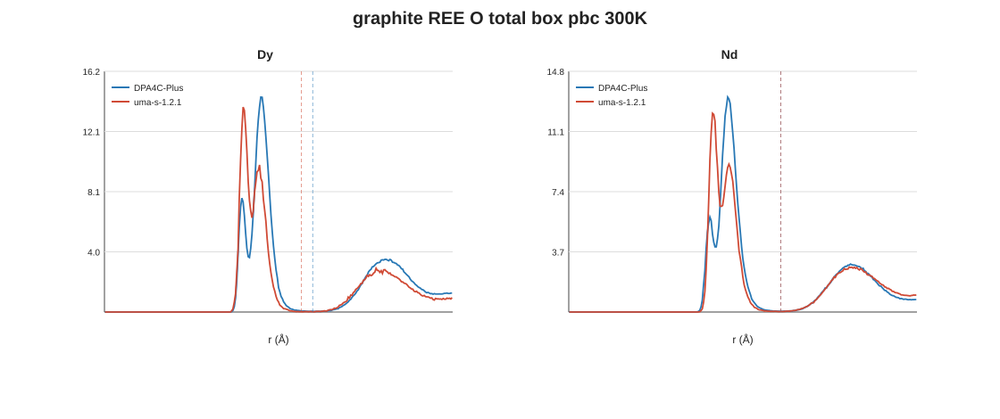

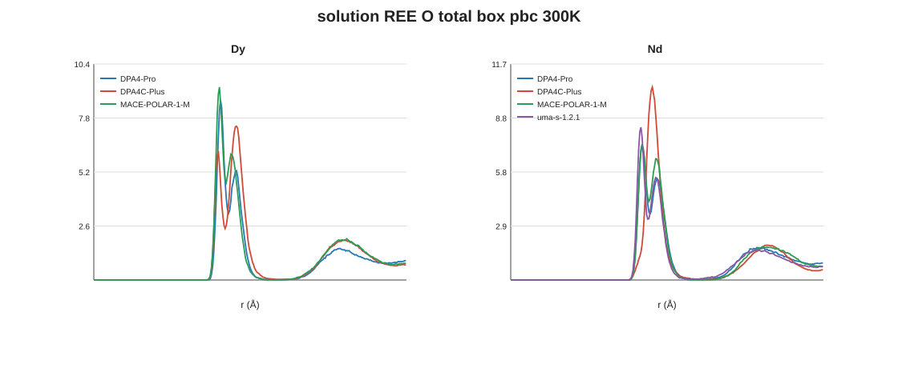

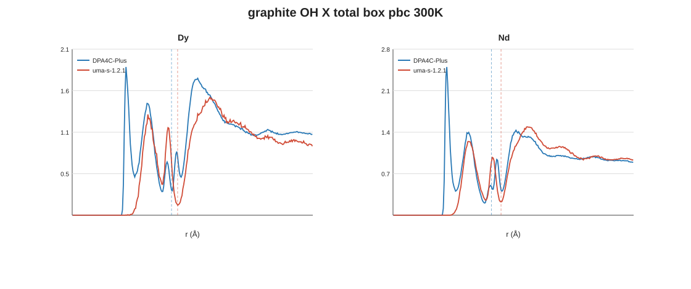

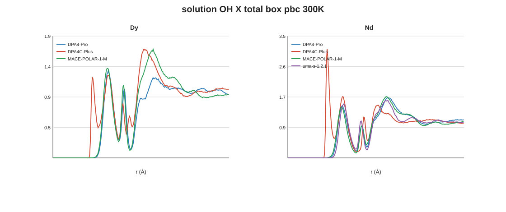

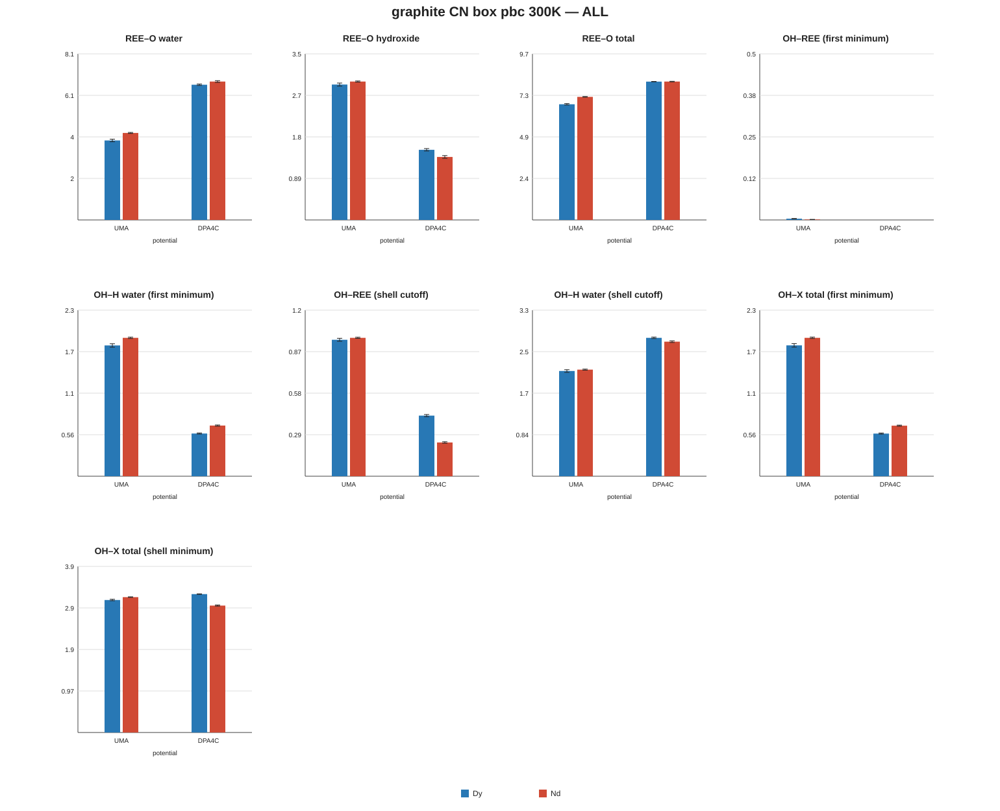

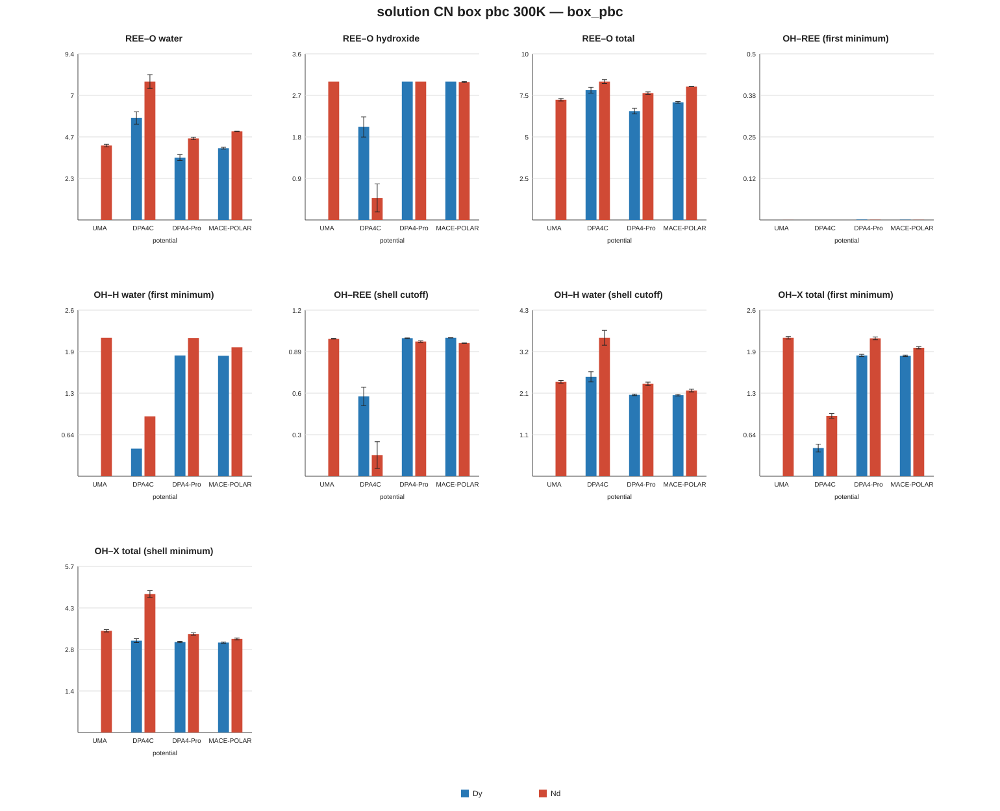

石墨累积 g(r) 直方图（可重新归一化）：graphite_rdf_accumulated.npz27 KB · graphite_rdf_accumulated.json238 B
4 三步表观活化能
committed-transition 速率 → Eyring ΔG‡（300 K）与 Arrhenius Ea（溶液 300–500 K）
4.1 步骤对应与方法
| 论文第 k 步 | 论文：酸解离（298 K；第 1 步约束 AIMD，第 2、3 步 DFT 团簇 + CPCM） | MD 正向：Ln 得 OH− | MD 逆向：Ln 失 OH− |
|---|---|---|---|
| 1 | Ln3+ + H2O → LnOH2+ + H+ | n：0 → 1 | n：1 → 0 |
| 2 | LnOH2+ + H2O → Ln(OH)2+ + H+ | n：1 → 2 | n：2 → 1 |
| 3 | Ln(OH)2+ + H2O → Ln(OH)3 + H+ | n：2 → 3 | n：3 → 2 |
状态与事件
- n(t) = Ln 周围 rc 内 OH− 的 O 的个数（OH = 恰有 1 个最近 H 的 O），上限 3，每 20 fs 一帧。
- rc = Ln–O(OH) 径向密度第一峰之后的极小（3.03–3.47 Å，见下表）。
- committed 转变：宽 W = 0.5 ps 的居中众数滤波，再吸收短于 W/2 的片段，去掉 O–H 振动造成的来回跳。
- 速率从 t ≥ 10 ps 开始统计，占据数从 t ≥ 10 ps（溶液）/ 50 ps（石墨）开始。
- 石墨 DPA4C-Plus 中 90–97% 的事件是“质子转移型”：O 留在 Ln 上，只交换 H（Ln–OH2 + OH− ⇌ Ln–OH + H2O），这正是论文酸解离那一步，只是接受质子的是 OH− 而不是水。
速率与表观能垒
- N = 转变次数，Torigin = 起始态的总停留时间。95% CI = bootstrap（2000 次；石墨按轨迹重采样，溶液每个 T 只有 1 条轨迹，按 10 ps 块重采样）与 Garwood 泊松区间的包络。N 很小时 CI 可能延伸到 ΔG‡ < 0 或 ∞（重采样里出现 0 个事件），这类数值只有量级意义。
- N = 0 时给下限：用泊松上限速率 3.689/Torigin 代入 Eyring。
- Arrhenius 按 N 加权拟合。拟合质量：好 = ≥ 4 个 T、≥ 20 个事件且每个 T ≥ 3 个；尚可 = ≥ 3 个 T 且 ≥ 8 个事件；其余为差；有事件的 T 少于 2 个为“无”。
动力学截断 rc（Ln–O(OH) 密度极小）
| 体系 | 势函数 | 金属 | 轨迹 | rc (Å) | Ln–O(OH) 第一峰 (Å) | 第二层峰 (Å) |
|---|---|---|---|---|---|---|
| 石墨表面 | DPA4C-Plus | Dy | 200 | 3.07 | 2.17 | 4.19 |
| 石墨表面 | DPA4C-Plus | Nd | 200 | 3.15 | 2.23 | 4.15 |
| 石墨表面 | UMA-s-1.2.1 | Dy | 121 | 3.18 | 2.21 | 5.47 |
| 石墨表面 | UMA-s-1.2.1 | Nd | 193 | 3.19 | 2.29 | 4.37 |
| 溶液 | DPA4-Pro | Dy | 5 | 3.47 | 2.23 | 4.23 |
| 溶液 | DPA4-Pro | Nd | 5 | 3.10 | 2.29 | 3.79 |
| 溶液 | DPA4C-Plus | Dy | 5 | 3.32 | 2.17 | 4.03 |
| 溶液 | DPA4C-Plus | Nd | 5 | 3.03 | 2.23 | 4.09 |
| 溶液 | MACE-POLAR-1-M | Dy | 5 | 3.16 | 2.17 | 3.91 |
| 溶液 | MACE-POLAR-1-M | Nd | 5 | 3.16 | 2.29 | 4.17 |
| 溶液 | UMA-s-1.2.1 | Nd | 5 | 3.25 | 2.27 | 4.25 |
原始数据：kinetics_cutoffs.csv604 B · kinetics_oh_density.csv149 KB
4.2 300 K 三步表观 ΔG‡ (kJ/mol)
粗体 = 点估计，小字 = 95% CI 与事件数 N；灰色 = N < 5 或只有下限；“> x”= 没有事件，只给下限。标黄行（石墨 DPA4C-Plus）统计最好。论文行是热力学 ΔG（酸解离自由能），不是能垒，放在这里只为对照量级。
| 金属 | 体系 | 势函数 | 第 1 步 | 第 2 步 | 第 3 步 | |||
|---|---|---|---|---|---|---|---|---|
| 正向 0→1 | 逆向 1→0 | 正向 1→2 | 逆向 2→1 | 正向 2→3 | 逆向 3→2 | |||
| Dy | 石墨表面 | DPA4C-Plus | 8.67[8.2, 9.1] · N = 479 | 12.23[11.9, 12.5] · N = 506 | 9.91[9.6, 10.2] · N = 1287 | 9.94[9.8, 10.1] · N = 1404 | 12.55[12.2, 13.0] · N = 492 | 8.18[7.9, 8.5] · N = 594 |
| Dy | 石墨表面 | UMA-s-1.2.1 | > 9.1N = 0，Torigin = 23 ps | —起始态未出现 | —起始态未出现 | > 17.1N = 0，Torigin = 551 ps | 16.30[13.8, 20.0] · N = 5 | 21.77[19.7, 25.7] · N = 5 |
| Dy | 溶液 | DPA4C-Plus | 3.54[−0.8, 12.7] · N = 1 | 13.33[9.1, ∞] · N = 1 | 7.85[6.2, 9.8] · N = 9 | 9.43[7.8, 11.4] · N = 9 | 10.44[7.8, 15.3] · N = 6 | 9.92[7.8, 13.4] · N = 5 |
| Dy | 溶液 | DPA4-Pro | —起始态未出现 | —起始态未出现 | —起始态未出现 | —起始态未出现 | —起始态未出现 | > 13.6N = 0，Torigin = 140 ps |
| Dy | 溶液 | MACE-POLAR-1-M | —起始态未出现 | —起始态未出现 | —起始态未出现 | —起始态未出现 | —起始态未出现 | > 13.6N = 0，Torigin = 140 ps |
| Dy | 溶液 | UMA-s-1.2.1 | 轨迹坍塌（5/5 条被排除），无可用数据 | |||||
| Dy | Shiery 2021 Table 1（298 K） | ΔG1 = 51.94热力学（酸解离），无能垒 | ΔG2 = 91.90热力学（酸解离），无能垒 | ΔG3 = 121.01热力学（酸解离），无能垒 | ||||
| Nd | 石墨表面 | DPA4C-Plus | 7.70[7.4, 8.0] · N = 1096 | 10.51[10.2, 10.8] · N = 1108 | 8.90[8.7, 9.2] · N = 2117 | 8.35[8.2, 8.5] · N = 2229 | 11.59[11.2, 12.1] · N = 608 | 7.30[6.9, 7.7] · N = 684 |
| Nd | 石墨表面 | UMA-s-1.2.1 | —起始态未出现 | > 8.9N = 0，Torigin = 21 ps | 12.15[3.6, ∞] · N = 1 | 18.69[16.0, ∞] · N = 3 | 13.72[12.2, 15.4] · N = 22 | 21.00[20.0, 22.3] · N = 25 |
| Nd | 溶液 | DPA4C-Plus | 11.10[9.3, 13.4] · N = 7 | 6.99[5.1, 9.2] · N = 8 | 6.19[4.7, 9.2] · N = 11 | 5.97[4.6, 7.6] · N = 12 | > 8.9N = 0，Torigin = 21 ps | 6.17[1.9, 15.3] · N = 1 |
| Nd | 溶液 | DPA4-Pro | —起始态未出现 | —起始态未出现 | —起始态未出现 | —起始态未出现 | —起始态未出现 | > 13.6N = 0，Torigin = 140 ps |
| Nd | 溶液 | MACE-POLAR-1-M | —起始态未出现 | —起始态未出现 | —起始态未出现 | > 2.4N = 0，Torigin = 2 ps | 5.68[1.4, 14.8] · N = 1 | 16.87[12.6, ∞] · N = 1 |
| Nd | 溶液 | UMA-s-1.2.1 | —起始态未出现 | —起始态未出现 | —起始态未出现 | —起始态未出现 | —起始态未出现 | > 13.6N = 0，Torigin = 140 ps |
| Nd | Shiery 2021 Table 1（298 K） | ΔG1 = 47.38热力学（酸解离），无能垒 | ΔG2 = 73.63热力学（酸解离），无能垒 | ΔG3 = 101.60热力学（酸解离），无能垒 | ||||
原始数据：compare_activation.csv12 KB · kinetics_rates.csv430 KB · kinetics_events_by_traj.csv108 KB
4.3 表观活化能 Ea（溶液 300–500 K，Arrhenius）
只列出拟合质量不是“无”的 14 项；另外 28 项事件太少（多为 DPA4-Pro / MACE / UMA，OH 几乎不离开 Ln）。石墨只有 300 K，没有 Ea。负 Ea 表示升温反而变慢，说明这是复合的表观速率常数（包含 OH− 扩散、氢键网络重排等），不是单一基元步骤。
| 势函数 | 金属 | 步 | 方向 | T (K) | 每个 T 的 N | 质量 | Ea (kJ/mol) | ΔH‡ (kJ/mol) | ΔS‡ (J/mol/K) | ΔG‡(300 K, 拟合) |
|---|---|---|---|---|---|---|---|---|---|---|
| DPA4C-Plus | Dy | 第 3 步 | 逆向 3→2 | 300/350/400/450/500 | 5/7/4/13/15 | 好 | 3.01[−2.79, 9.18] | −0.23[−6.03, 5.88] | −35.0[−49.0, −20.7] | 10.28 |
| DPA4C-Plus | Dy | 第 3 步 | 正向 2→3 | 300/350/400/450/500 | 6/6/3/12/14 | 好 | 8.11[−0.33, 18.40] | 4.89[−3.49, 15.12] | −20.9[−41.1, 3.7] | 11.15 |
| DPA4C-Plus | Dy | 第 2 步 | 逆向 2→1 | 300/350/400/450 | 9/5/8/5 | 好 | −3.21[−11.43, 5.14] | −6.19[−14.39, 2.21] | −52.6[−77.3, −28.8] | 9.59 |
| DPA4C-Plus | Dy | 第 2 步 | 正向 1→2 | 300/350/400/450 | 9/5/8/5 | 好 | 7.69[0.38, 16.12] | 4.71[−2.60, 13.19] | −10.6[−31.3, 14.3] | 7.90 |
| DPA4C-Plus | Dy | 第 1 步 | 逆向 1→0 | 300/450 | 1/1 | 差 | 9.22[−11.52, 29.96] | 6.18[−14.56, 26.92] | −23.8[−82.6, 34.9] | 13.33 |
| DPA4C-Plus | Dy | 第 1 步 | 正向 0→1 | 300/450 | 1/1 | 差 | −1.06[−21.80, 19.69] | −4.09[−24.83, 16.65] | −25.4[−84.2, 33.3] | 3.54 |
| DPA4C-Plus | Nd | 第 3 步 | 逆向 3→2 | 300/350/400/450/500 | 1/3/1/19/5 | 尚可 | 3.15[−6.95, 13.24] | −0.12[−10.22, 9.98] | −20.1[−43.5, 3.3] | 5.90 |
| DPA4C-Plus | Nd | 第 3 步 | 正向 2→3 | 350/400/450/500 | 2/1/18/6 | 尚可 | 2.87[−69.39, 17.89] | −0.60[−73.33, 14.41] | −36.2[−193.7, −2.5] | 10.24 |
| DPA4C-Plus | Nd | 第 2 步 | 逆向 2→1 | 300/350/400/450/500 | 12/16/23/25/20 | 好 | −6.35[−10.35, −2.43] | −9.55[−13.56, −5.64] | −49.6[−59.5, −39.7] | 5.32 |
| DPA4C-Plus | Nd | 第 2 步 | 正向 1→2 | 300/350/400/450/500 | 11/16/22/26/19 | 好 | 4.39[−0.71, 13.05] | 1.18[−3.87, 9.71] | −22.6[−35.1, −2.6] | 7.95 |
| DPA4C-Plus | Nd | 第 1 步 | 逆向 1→0 | 300/350/400/450/500 | 8/10/6/2/3 | 尚可 | −11.78[−20.32, −1.76] | −14.88[−23.36, −4.98] | −75.2[−99.8, −48.5] | 7.67 |
| DPA4C-Plus | Nd | 第 1 步 | 正向 0→1 | 300/350/400/450/500 | 7/11/6/2/3 | 尚可 | 19.19[11.99, 26.39] | 16.07[8.87, 23.27] | 21.7[1.6, 43.4] | 9.55 |
| MACE-POLAR-1-M | Nd | 第 3 步 | 逆向 3→2 | 300/350/400/450/500 | 1/3/1/2/3 | 尚可 | 3.02[−12.04, 14.61] | −0.25[−15.45, 11.33] | −52.8[−91.6, −23.6] | 15.59 |
| MACE-POLAR-1-M | Nd | 第 3 步 | 正向 2→3 | 300/350/400/450/500 | 1/3/1/2/3 | 尚可 | 9.79[−1.79, 21.38] | 6.52[−5.07, 18.10] | 2.5[−26.8, 31.7] | 5.77 |
原始数据：kinetics_arrhenius.csv56 KB · kinetics_rates.csv430 KB
4.4 敏感性：石墨 DPA4C-Plus 在 9 种分析设定下的 ΔG‡
三步的相对顺序（正向 1 < 2 < 3，逆向 1 > 2 > 3）在 Dy 9/9、Nd 9/9 种设定下与主分析一致；单个 ΔG‡ 随设定变化 3.9–5.4 kJ/mol（W 越小，记到的快速来回事件越多，ΔG‡ 越低）。
Dy · 石墨 DPA4C-Plus
| 分析设定 | 第 1 步 | 第 2 步 | 第 3 步 | 三步顺序 | |||
|---|---|---|---|---|---|---|---|
| 正向 0→1 | 逆向 1→0 | 正向 1→2 | 逆向 2→1 | 正向 2→3 | 逆向 3→2 | vs 主分析 | |
| 主分析：W = 0.5 ps，rc = 密度极小，t ≥ 10 ps | 8.67N = 479 | 12.23N = 506 | 9.91N = 1287 | 9.94N = 1404 | 12.55N = 492 | 8.18N = 594 | 一致 |
| 过滤窗口 W = 0.2 ps | 6.68N = 1087 | 10.31N = 1104 | 7.84N = 2965 | 7.96N = 3073 | 10.38N = 1166 | 6.23N = 1283 | 一致 |
| 过滤窗口 W = 1.0 ps | 10.18N = 256 | 13.68N = 283 | 11.27N = 744 | 11.20N = 850 | 13.89N = 289 | 9.27N = 387 | 一致 |
| 过滤窗口 W = 2.0 ps | 11.24N = 165 | 14.63N = 192 | 12.40N = 470 | 12.19N = 577 | 15.18N = 174 | 10.11N = 276 | 一致 |
| 固定 rc = 2.90 Å | 8.67N = 479 | 12.23N = 506 | 9.91N = 1287 | 9.94N = 1404 | 12.56N = 491 | 8.19N = 593 | 一致 |
| 固定 rc = 3.30 Å | 8.67N = 479 | 12.23N = 506 | 9.91N = 1287 | 9.94N = 1404 | 12.55N = 492 | 8.18N = 594 | 一致 |
| 分析起点 t ≥ 1 ps | 8.67N = 480 | 12.25N = 507 | 9.87N = 1318 | 10.00N = 1441 | 12.28N = 577 | 8.63N = 712 | 一致 |
| 分析起点 t ≥ 50 ps | 8.79N = 432 | 12.11N = 447 | 10.29N = 928 | 9.74N = 987 | 13.64N = 206 | 7.17N = 224 | 一致 |
| 分析起点 t ≥ 90 ps | 8.67N = 323 | 11.68N = 333 | 10.43N = 550 | 9.56N = 575 | 13.51N = 118 | 6.97N = 120 | 一致 |
Nd · 石墨 DPA4C-Plus
| 分析设定 | 第 1 步 | 第 2 步 | 第 3 步 | 三步顺序 | |||
|---|---|---|---|---|---|---|---|
| 正向 0→1 | 逆向 1→0 | 正向 1→2 | 逆向 2→1 | 正向 2→3 | 逆向 3→2 | vs 主分析 | |
| 主分析：W = 0.5 ps，rc = 密度极小，t ≥ 10 ps | 7.70N = 1096 | 10.51N = 1108 | 8.90N = 2117 | 8.35N = 2229 | 11.59N = 608 | 7.30N = 684 | 一致 |
| 过滤窗口 W = 0.2 ps | 5.51N = 2713 | 8.31N = 2679 | 6.64N = 5247 | 6.12N = 5377 | 9.29N = 1509 | 5.14N = 1622 | 一致 |
| 过滤窗口 W = 1.0 ps | 9.23N = 583 | 12.03N = 604 | 10.43N = 1146 | 9.78N = 1265 | 13.17N = 324 | 8.69N = 392 | 一致 |
| 过滤窗口 W = 2.0 ps | 10.62N = 327 | 13.38N = 351 | 11.82N = 655 | 11.03N = 772 | 14.69N = 178 | 9.79N = 250 | 一致 |
| 固定 rc = 2.90 Å | 7.70N = 1096 | 10.51N = 1108 | 8.90N = 2115 | 8.35N = 2227 | 11.59N = 608 | 7.30N = 684 | 一致 |
| 固定 rc = 3.30 Å | 7.70N = 1096 | 10.51N = 1108 | 8.90N = 2117 | 8.35N = 2229 | 11.59N = 608 | 7.30N = 684 | 一致 |
| 分析起点 t ≥ 1 ps | 7.70N = 1099 | 10.53N = 1112 | 8.85N = 2185 | 8.42N = 2316 | 11.19N = 762 | 7.54N = 910 | 一致 |
| 分析起点 t ≥ 50 ps | 7.78N = 957 | 10.34N = 952 | 9.26N = 1470 | 8.05N = 1509 | 12.34N = 270 | 7.24N = 286 | 一致 |
| 分析起点 t ≥ 90 ps | 7.72N = 650 | 10.18N = 640 | 9.62N = 804 | 8.02N = 819 | 12.65N = 128 | 7.09N = 136 | 一致 |
原始数据：kinetics_rates.csv430 KB
溶液：Ea 随分析设定的变化（kJ/mol，小字 = 拟合质量）
| 势函数 | 金属 | 过程 | 主分析 | W = 0.2 ps | W = 1.0 ps | W = 2.0 ps | rc = 2.90 Å | rc = 3.30 Å | t ≥ 1 ps | t ≥ 50 ps | t ≥ 90 ps |
|---|---|---|---|---|---|---|---|---|---|---|---|
| DPA4C-Plus | Dy | 正向 1→2 | 7.7好 | 7.1好 | 5.7尚可 | 2.2尚可 | 7.7好 | 7.7好 | 5.6好 | 6.6好 | 15.2尚可 |
| DPA4C-Plus | Dy | 逆向 2→1 | −3.2好 | −6.3好 | −4.4尚可 | −8.0尚可 | −3.2好 | −3.2好 | −5.0好 | −3.2好 | 0.7尚可 |
| DPA4C-Plus | Dy | 正向 2→3 | 8.1好 | 5.4好 | 8.8尚可 | 7.7尚可 | 8.1好 | 8.1好 | 8.3好 | 8.9尚可 | 2.9尚可 |
| DPA4C-Plus | Dy | 逆向 3→2 | 3.0好 | 0.0好 | 4.5尚可 | 4.0尚可 | 3.0好 | 3.0好 | 2.2好 | 2.8好 | 0.4尚可 |
| DPA4C-Plus | Nd | 正向 0→1 | 19.2尚可 | 18.0好 | 20.0尚可 | 27.1尚可 | 19.2尚可 | 19.2尚可 | 18.4好 | 19.2好 | 17.6尚可 |
| DPA4C-Plus | Nd | 逆向 1→0 | −11.8尚可 | −10.0好 | −10.1尚可 | −17.2尚可 | −11.8尚可 | −11.8尚可 | −10.1好 | −16.2尚可 | −12.0尚可 |
| DPA4C-Plus | Nd | 正向 1→2 | 4.4好 | 5.4好 | 7.3好 | 8.0尚可 | 4.4好 | 4.4好 | 2.5好 | 15.2好 | 14.4好 |
| DPA4C-Plus | Nd | 逆向 2→1 | −6.3好 | −5.3好 | −4.9好 | −7.0好 | −6.3好 | −6.3好 | −6.7好 | −9.0好 | −7.5好 |
| DPA4C-Plus | Nd | 正向 2→3 | 2.9尚可 | −0.6好 | 1.6尚可 | 14.5尚可 | 2.9尚可 | 2.9尚可 | 4.0尚可 | −0.2尚可 | −3.0尚可 |
| DPA4C-Plus | Nd | 逆向 3→2 | 3.1尚可 | −2.9好 | 2.1尚可 | −1.9尚可 | 3.1尚可 | 3.1尚可 | 0.0尚可 | 7.0尚可 | 4.4尚可 |
| MACE-POLAR-1-M | Nd | 正向 2→3 | 9.8尚可 | 9.1尚可 | −2.3差 | −3.0差 | 9.8尚可 | 9.8尚可 | 9.8尚可 | 12.1差 | 19.0差 |
| MACE-POLAR-1-M | Nd | 逆向 3→2 | 3.0尚可 | 1.9尚可 | 1.0差 | 0.0差 | 3.0尚可 | 3.0尚可 | 3.0尚可 | 0.7差 | 7.8差 |
原始数据：kinetics_arrhenius.csv56 KB
溶液 DPA4C-Plus：各温度的 ΔG‡（主分析，kJ/mol）
| 金属 | 过程 | 300 K | 350 K | 400 K | 450 K | 500 K |
|---|---|---|---|---|---|---|
| Dy | 正向 0→1 | 3.54N = 1 | — | — | 7.35N = 1 | — |
| Dy | 逆向 1→0 | 13.33N = 1 | > 10.4 | > 10.1 | 16.91N = 1 | — |
| Dy | 正向 1→2 | 7.85N = 9 | 9.53N = 5 | 7.50N = 8 | 10.88N = 5 | — |
| Dy | 逆向 2→1 | 9.43N = 9 | 12.91N = 5 | 14.71N = 8 | 17.30N = 5 | > 20.2 |
| Dy | 正向 2→3 | 10.44N = 6 | 12.38N = 6 | 17.97N = 3 | 14.03N = 12 | 14.70N = 14 |
| Dy | 逆向 3→2 | 9.92N = 5 | 12.22N = 7 | 15.51N = 4 | 14.94N = 13 | 17.37N = 15 |
| Nd | 正向 0→1 | 11.10N = 7 | 6.66N = 11 | 7.36N = 6 | 6.65N = 2 | 8.38N = 3 |
| Nd | 逆向 1→0 | 6.99N = 8 | 12.21N = 10 | 15.82N = 6 | 19.43N = 2 | 20.10N = 3 |
| Nd | 正向 1→2 | 6.19N = 11 | 10.84N = 16 | 11.50N = 22 | 9.83N = 26 | 12.42N = 19 |
| Nd | 逆向 2→1 | 5.97N = 12 | 7.69N = 16 | 9.25N = 23 | 12.69N = 25 | 16.29N = 20 |
| Nd | 正向 2→3 | > 8.9 | 13.74N = 2 | 19.68N = 1 | 13.91N = 18 | 21.29N = 6 |
| Nd | 逆向 3→2 | 6.17N = 1 | 6.11N = 3 | 12.50N = 1 | 8.79N = 19 | 9.86N = 5 |
原始数据：kinetics_rates.csv430 KB
4.5 图
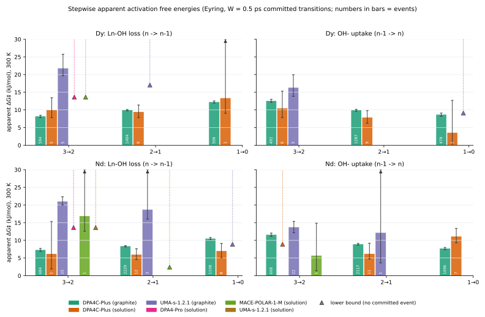

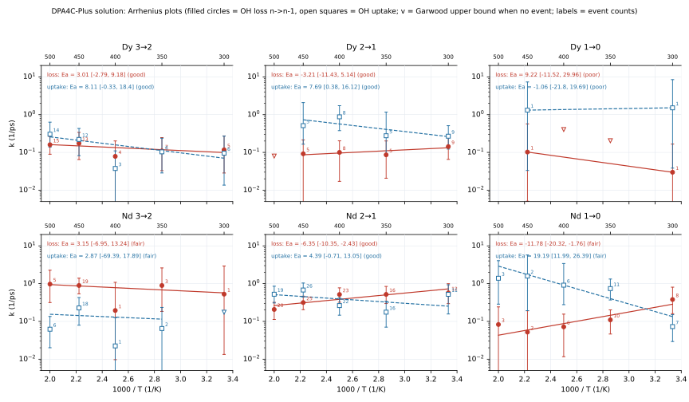

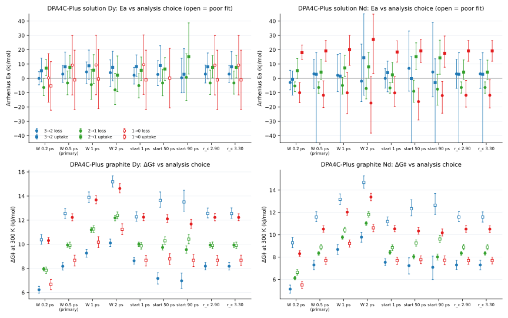

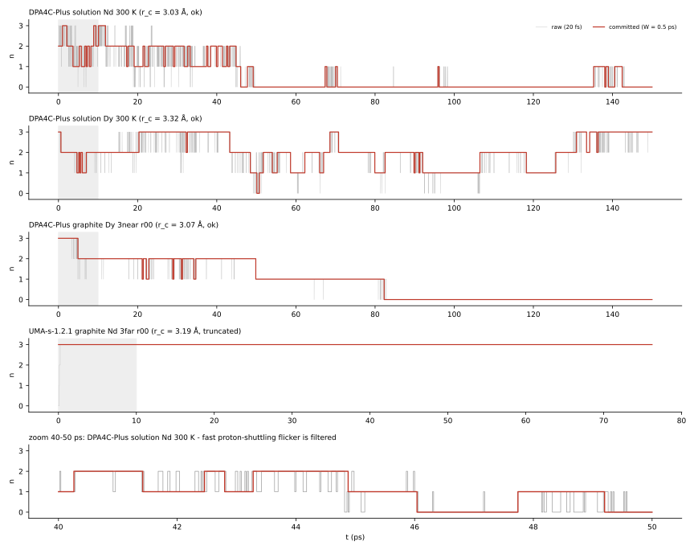

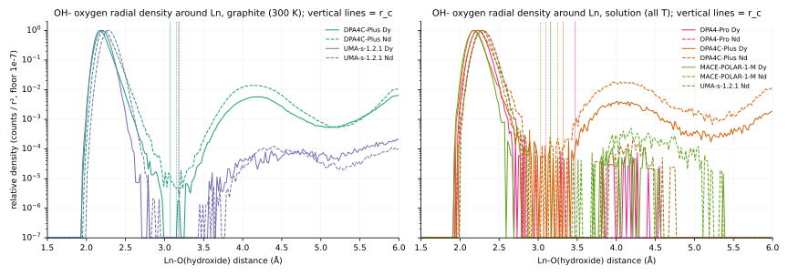

5 占据数与 pKa 等效值
平衡占据数 → Kd → pKa（pKw = 14）
把 box 里 3 个 OH− 在 Ln 上的占据数分布 Pn 当作平衡分布，就能得到每一步的“pKa 等效值”，用来和论文的 pKa 对比（第 6 节）。
5.1 300 K 占据数 Pn（n = Ln 上的 OH 数）
| 体系 | 势函数 | 金属 | 轨迹 | P0 | P1 | P2 | P3 | ⟨n⟩ |
|---|---|---|---|---|---|---|---|---|
| 石墨表面 | DPA4C-Plus | Dy | 200 | 0.125[0.103, 0.149] | 0.466[0.435, 0.497] | 0.378[0.344, 0.412] | 0.031[0.023, 0.040] | 1.31 |
| 石墨表面 | DPA4C-Plus | Nd | 200 | 0.190[0.163, 0.218] | 0.478[0.452, 0.503] | 0.291[0.263, 0.320] | 0.041[0.028, 0.057] | 1.18 |
| 石墨表面 | UMA-s-1.2.1 | Dy | 121 | 0.000[0.000, 0.000] | 0.000[0.000, 0.000] | 0.073[0.016, 0.160] | 0.927[0.840, 0.984] | 2.93 |
| 石墨表面 | UMA-s-1.2.1 | Nd | 193 | 0.000[0.000, 0.000] | 0.002[0.000, 0.005] | 0.024[0.009, 0.046] | 0.974[0.952, 0.990] | 2.97 |
| 溶液 | DPA4C-Plus | Dy | 1 | 0.011[0.003, 0.020] | 0.248[0.121, 0.400] | 0.460[0.310, 0.610] | 0.281[0.097, 0.485] | 2.01 |
| 溶液 | DPA4C-Plus | Nd | 1 | 0.687[0.461, 0.885] | 0.162[0.072, 0.261] | 0.136[0.031, 0.265] | 0.015[0.000, 0.044] | 0.48 |
| 溶液 | DPA4-Pro | Dy | 1 | 0.000[0.000, 0.000] | 0.000[0.000, 0.000] | 0.000[0.000, 0.000] | 1.000[1.000, 1.000] | 3.00 |
| 溶液 | DPA4-Pro | Nd | 1 | 0.000[0.000, 0.000] | 0.000[0.000, 0.000] | 1.0×10−4[0.000, 4.0×10−4] | 1.000[1.000, 1.000] | 3.00 |
| 溶液 | MACE-POLAR-1-M | Dy | 1 | 0.000[0.000, 0.000] | 0.000[0.000, 0.000] | 0.000[0.000, 0.000] | 1.000[1.000, 1.000] | 3.00 |
| 溶液 | MACE-POLAR-1-M | Nd | 1 | 0.000[0.000, 0.000] | 0.000[0.000, 0.000] | 0.012[1.0×10−4, 0.034] | 0.988[0.966, 1.000] | 2.99 |
| 溶液 | UMA-s-1.2.1 | Dy | 轨迹坍塌（5/5 条被排除），无可用数据 | |||||
| 溶液 | UMA-s-1.2.1 | Nd | 1 | 0.000[0.000, 0.000] | 0.000[0.000, 0.000] | 0.000[0.000, 0.000] | 1.000[1.000, 1.000] | 3.00 |
原始数据：kinetics_occupancy.csv67 KB · kinetics_occupancy_vs_time.csv53 KB
5.2 从占据数到 pKa
c1 = 一个分子在 box 中的浓度（溶液 0.4224 M，石墨 0.3594 M）；(4 − n) = Ln 有 n−1 个 OH 时游离 OH− 的个数。 两个状态的 committed 停留都 ≥ 1 ps 时直接给出数值（加粗）；两个状态都出现过、但其中一个 committed 停留 < 1 ps 记为“瞬态”（只有量级意义）；只有一个状态出现过时给界限（假设没出现的状态占据数不超过出现的那个，即 Pn−1 = Pn 处的 pKa）；两个都没出现记为“无法确定”。
原始数据：kinetics_thermo.csv179 KB · compare_pKa_stepwise.csv11 KB
5.3 van 't Hoff：失 OH 方向的 ΔH°、ΔS°（溶液，≥ 2 个温度）
| 势函数 | 金属 | 步（失 OH 方向） | T (K) | ΔH°d (kJ/mol) | ΔS°d (J/mol/K) | ΔG°d(300 K, 拟合) |
|---|---|---|---|---|---|---|
| DPA4C-Plus | Dy | 第 3 步（3→2） | 300/350/400/450/500 | −5.45[−13.38, 0.36] | −20.8[−40.2, −5.8] | 0.80 |
| DPA4C-Plus | Dy | 第 2 步（2→1） | 300/350/400/450 | −8.27[−19.75, −0.17] | −34.7[−68.8, −11.9] | 2.14 |
| DPA4C-Plus | Nd | 第 3 步（3→2） | 300/350/400/450/500 | 0.25[−15.87, 9.98] | 10.8[−26.3, 36.6] | −3.00 |
| DPA4C-Plus | Nd | 第 2 步（2→1） | 300/350/400/450/500 | −7.29[−14.35, −3.02] | −19.0[−35.3, −8.2] | −1.61 |
| DPA4C-Plus | Nd | 第 1 步（1→0） | 300/350/400/450/500 | −23.25[−30.18, −17.89] | −69.6[−86.4, −56.0] | −2.36 |
| MACE-POLAR-1-M | Nd | 第 3 步（3→2） | 300/350/400 | 4.18[−29.46, 49.32] | −29.5[−134.7, 91.3] | 13.03 |
ΔH°d < 0 表示升温使 OH 更倾向于留在 Ln 上（与 4.3 中负的失 OH Ea 一致）。CI 都很宽，95% CI 不含 0 的只有 DPA4C-Plus Dy 第 2 步、DPA4C-Plus Nd 第 1 步、DPA4C-Plus Nd 第 2 步。
原始数据：kinetics_vanthoff.csv2.4 KB
5.4 起始构型记忆：只用 t ≥ 90 ps 的结果（DPA4C-Plus）
| 体系 | 金属 | 步 | pKa 等效（t ≥ 10/50 ps） | pKa 等效（t ≥ 90 ps） | 差 |
|---|---|---|---|---|---|
| 石墨表面 | Dy | 第 1 步 | 13.46 | 13.52 | +0.06 |
| 石墨表面 | Dy | 第 2 步 | 13.95 | 14.01 | +0.06 |
| 石墨表面 | Dy | 第 3 步 | 14.65 | 14.69 | +0.04 |
| 石墨表面 | Nd | 第 1 步 | 13.63 | 13.66 | +0.03 |
| 石墨表面 | Nd | 第 2 步 | 14.07 | 14.14 | +0.07 |
| 石墨表面 | Nd | 第 3 步 | 14.40 | 14.47 | +0.07 |
| 溶液 | Dy | 第 1 步 | 12.74 瞬态 | 12.51 瞬态 | −0.23 |
| 溶液 | Dy | 第 2 步 | 13.66 | 13.99 | +0.33 |
| 溶液 | Dy | 第 3 步 | 13.84 | 13.70 | −0.14 |
| 溶液 | Nd | 第 1 步 | 14.73 | 15.07 | +0.34 |
| 溶液 | Nd | 第 2 步 | 14.00 | n = 2 未出现 | — |
| 溶液 | Nd | 第 3 步 | 14.58 | n = 2、3 未出现 | — |
石墨 4 种起始构型的 Pn 到 ~90 ps 才基本一致，所以用 t ≥ 90 ps 重算一遍。“瞬态”= 其中一个状态的 committed 停留 < 1 ps，数值只有量级意义；“n = … 未出现”= 该设定下这个状态从未出现，这一步的 pKa 无法确定（例如溶液 Nd 在 t ≥ 90 ps 只出现 n = 0、1）。
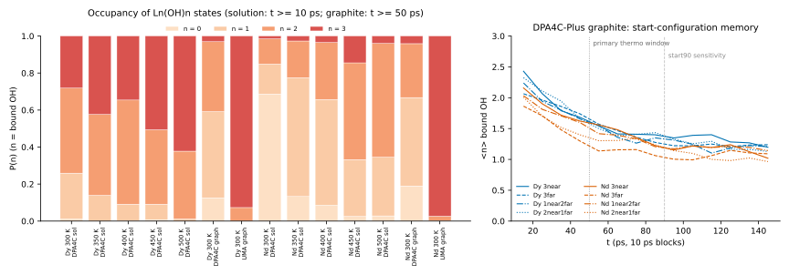

6 与 Shiery 2021（Inorg. Chem. 60, 10257）的对比
论文所有表格（Table 1、2、S1、S2）+ SI 结构与 PMF；逐步 pKa、ΔG、ΔΔG
文献：Shiery, Cooper, Cantu, Inorg. Chem. 2021, 60, 10257（文章 · SI）。 论文方法（据作者学位论文第 5 章）：pKa1 用约束 AIMD（Bluemoon，CP2K/PBE，64 个显式水）在 9 个固定 r(O–H) 上各跑 15 ps，积分约束力得到 PMF，取 PMF 终点；pKa2、pKa3 用 M06 团簇（第一层水和 OH 显式）+ CPCM 隐式溶剂计算三步反应自由能，再以 pKa1 为基准取相对值；La–Sm 按 9 配位、Eu–Lu 按 8 配位。所有值都对应 298.15 K，ΔG = RT ln10 · pKa = 5.708 kJ/mol × pKa。 论文没有给出任何能垒或活化能：第一步的 PMF 单调上升（6.7 节），第 2、3 步只有反应自由能。所以下面对比的是热力学量（pKa、ΔG）和结构，我们的活化能只能和自己的热力学比较。
6.1 论文 Table 1（全部 15 个 Ln）
| Ln | 水合 CN | pKa1 | pKa2 | pKa3 | ΔG (kJ/mol, 298 K) | |||||
|---|---|---|---|---|---|---|---|---|---|---|
| 计算 | MAD | 计算 | MAD | 计算 | MAD | 第 1 步 | 第 2 步 | 第 3 步 | ||
| La | 9 | 8.4± 0.9 | 0.7 | 13.4 | 4.5 | 19.6 | 7.1 | 47.95 | 76.49 | 111.88 |
| Ce | 9 | 8.8± 0.3 | 0.5 | 17.1 | 0.8 | 20.0 | 5.3 | 50.23 | 97.61 | 114.16 |
| Pr | 9 | 9.0± 0.5 | 0.6 | 14.0 | — | 20.8 | 4.9 | 51.37 | 79.91 | 118.73 |
| Nd | 9 | 8.3± 0.5 | 0.5 | 12.9 | 3.8 | 17.8 | 6.6 | 47.38 | 73.63 | 101.60 |
| Pm | 9 | 8.7± 0.5 | 2.2 | 12.8 | — | 19.9 | — | 49.66 | 73.06 | 113.59 |
| Sm | 9 | 7.0± 0.1 | 1.1 | 10.9 | 4.5 | 16.7 | 6.9 | 39.96 | 62.22 | 95.32 |
| Eu | 8 | 10.1± 0.2 | 2.4 | 19.8 | — | 23.9 | 0.4 | 57.65 | 113.02 | 136.42 |
| Gd | 8 | 8.4± 0.4 | 0.6 | 15.8 | 0.3 | 17.2 | 5.5 | 47.95 | 90.19 | 98.18 |
| Tb | 8 | 9.1± 0.5 | 1.6 | 15.4 | — | 20.4 | 3.0 | 51.94 | 87.90 | 116.44 |
| Dy | 8 | 9.1± 0.1 | 1.6 | 16.1 | — | 21.2 | 1.7 | 51.94 | 91.90 | 121.01 |
| Ho | 8 | 8.4± 0.5 | 0.9 | 15.2 | 1.1 | 18.8 | 3.9 | 47.95 | 86.76 | 107.31 |
| Er | 8 | 7.2± 0.9 | 0.9 | 11.8 | 4.2 | 15.9 | 6.8 | 41.10 | 67.35 | 90.76 |
| Tm | 8 | 8.9± 0.1 | 1.7 | 12.1 | 3.9 | 15.8 | 6.1 | 50.80 | 69.07 | 90.19 |
| Yb | 8 | 8.2± 0.3 | 0.9 | 15.1 | 0.2 | 18.3 | 3.6 | 46.81 | 86.19 | 104.46 |
| Lu | 8 | 7.9± 0.9 | 0.9 | 14.0 | 1.2 | 17.1 | 4.3 | 45.09 | 79.91 | 97.61 |
原始数据：lit_table1_calc_pKa.csv941 B
6.2 逐步 pKa、ΔG 与论文的差 ΔΔG
MD 的 pKa 是第 5 节的等效值（300 K）；ΔGacid = RT ln10 · pKa（MD 用 300 K，论文 298.15 K）；ΔΔG = 5.708 × (pKa − pKaDFT) kJ/mol。“≤”为界限（另一个状态从未出现）；标黄 = DPA4C-Plus。实验行的方括号是 Table 2 中该步所有实验值的最小、最大值。
Dy
| 来源 | 第 1 步 | 第 2 步 | 第 3 步 | ||||||
|---|---|---|---|---|---|---|---|---|---|
| pKa | ΔGacid | ΔΔG vs DFT | pKa | ΔGacid | ΔΔG vs DFT | pKa | ΔGacid | ΔΔG vs DFT | |
| Shiery 2021 Table 1（DFT，298 K） | 9.10[9.00, 9.20] | 51.9 | 0.0 | 16.10 | 91.9 | 0.0 | 21.20 | 121.0 | 0.0 |
| Table 2 实验（中位数 [最小, 最大]） | 7.59[5.60, 8.37] | 43.3 | −8.6 | 无实验值 | — | — | 22.92[22.92, 22.92] | 130.8 | +9.8 |
| 本工作：石墨表面 DPA4C-Plus | 13.46[13.37, 13.54] | 77.3 | +24.9 | 13.95[13.88, 14.01] | 80.1 | −12.3 | 14.65[14.53, 14.78] | 84.1 | −37.4 |
| 本工作：石墨表面 UMA-s-1.2.1 | 无法确定 | — | — | ≤ 13.86 界限 | — | ≤ −12.8 | 12.45[11.78, 12.84] | 71.5 | −50.0 |
| 本工作：溶液 DPA4C-Plus | 12.74 瞬态[12.36, 13.00] | 73.2 | +20.8 | 13.66[13.31, 13.95] | 78.5 | −13.9 | 13.84[13.46, 14.40] | 79.5 | −42.0 |
| 本工作：溶液 DPA4-Pro | 无法确定 | — | — | 无法确定 | — | — | ≤ 13.63 界限 | — | ≤ −43.2 |
| 本工作：溶液 MACE-POLAR-1-M | 无法确定 | — | — | 无法确定 | — | — | ≤ 13.63 界限 | — | ≤ −43.2 |
| 本工作：溶液 UMA-s-1.2.1 | 轨迹坍塌（5/5 条被排除），无可用数据 | ||||||||
Nd
| 来源 | 第 1 步 | 第 2 步 | 第 3 步 | ||||||
|---|---|---|---|---|---|---|---|---|---|
| pKa | ΔGacid | ΔΔG vs DFT | pKa | ΔGacid | ΔΔG vs DFT | pKa | ΔGacid | ΔΔG vs DFT | |
| Shiery 2021 Table 1（DFT，298 K） | 8.30[7.80, 8.80] | 47.4 | 0.0 | 12.90 | 73.6 | 0.0 | 17.80 | 101.6 | 0.0 |
| Table 2 实验（中位数 [最小, 最大]） | 8.21[7.00, 9.46] | 46.9 | −0.5 | 16.20[9.20, 17.35] | 92.5 | +18.8 | 24.00[23.54, 26.20] | 137.0 | +35.4 |
| 本工作：石墨表面 DPA4C-Plus | 13.63[13.56, 13.70] | 78.3 | +30.4 | 14.07[14.02, 14.13] | 80.8 | +6.7 | 14.40[14.26, 14.57] | 82.7 | −19.4 |
| 本工作：石墨表面 UMA-s-1.2.1 | ≤ 14.03 界限 | — | ≤ +32.7 | 12.70[12.45, 13.47] | 72.9 | −1.1 | 11.95[11.49, 12.24] | 68.6 | −33.4 |
| 本工作：溶液 DPA4C-Plus | 14.73[14.38, 15.18] | 84.6 | +36.7 | 14.00[13.76, 14.44] | 80.4 | +6.3 | 14.58[14.11, 15.70] | 83.7 | −18.4 |
| 本工作：溶液 DPA4-Pro | 无法确定 | — | — | ≤ 13.93 界限 | — | ≤ +5.9 | 9.78 瞬态[9.78, 10.26] | 56.2 | −45.8 |
| 本工作：溶液 MACE-POLAR-1-M | 无法确定 | — | — | ≤ 13.93 界限 | — | ≤ +5.9 | 11.70[9.78, 12.17] | 67.2 | −34.8 |
| 本工作：溶液 UMA-s-1.2.1 | 无法确定 | — | — | 无法确定 | — | — | ≤ 13.63 界限 | — | ≤ −23.8 |
DPA4C-Plus 的三步 pKa 等效值之间只差 Dy 1.9、Nd 1.1 个单位，而论文第 1 → 第 3 步差 Dy 12.1、Nd 9.5：MD 中第 1 步明显比论文难（ΔΔG1 > 0），第 3 步明显比论文容易（ΔΔG3 < 0）。
与 Table 2 实验值的 MAD（按论文把第 2、3 步当逐步常数的读法）
| 金属 | 来源 | 第 1 步 | 第 2 步 | 第 3 步 | |||
|---|---|---|---|---|---|---|---|
| MAD | Δ 中位数 | MAD | Δ 中位数 | MAD | Δ 中位数 | ||
| Dy | Shiery 2021 Table 1（DFT） | 1.60 | +1.51 | — | — | 1.70 | −1.72 |
| Dy | 本工作：石墨表面 DPA4C-Plus | 5.99 | +5.87 | — | — | 8.27 | −8.27 |
| Dy | 本工作：石墨表面 UMA-s-1.2.1 | — | — | — | — | 10.47 | −10.47 |
| Dy | 本工作：溶液 DPA4C-Plus | 5.27 瞬态 | +5.15 | — | — | 9.08 | −9.08 |
| Nd | Shiery 2021 Table 1（DFT） | 0.50 | +0.09 | 3.80 | −3.30 | 6.60 | −6.20 |
| Nd | 本工作：石墨表面 DPA4C-Plus | 5.28 | +5.42 | 3.43 | −2.13 | 10.01 | −9.60 |
| Nd | 本工作：石墨表面 UMA-s-1.2.1 | — | ≤ +5.82 | 3.88 | −3.50 | 12.46 | −12.05 |
| Nd | 本工作：溶液 DPA4C-Plus | 6.38 | +6.52 | 3.45 | −2.20 | 9.83 | −9.42 |
| Nd | 本工作：溶液 DPA4-Pro | — | — | — | ≤ −2.27 | 14.63 瞬态 | −14.22 |
| Nd | 本工作：溶液 MACE-POLAR-1-M | — | — | — | ≤ −2.27 | 12.71 | −12.30 |
MAD = |pKa − 每个实验值| 的平均；Δ 中位数 = pKa − 实验中位数。“≤”= MD 只给出上界（另一个状态从未出现），此时只给 Δ 中位数的上界、不算 MAD。
原始数据：compare_pKa_stepwise.csv11 KB
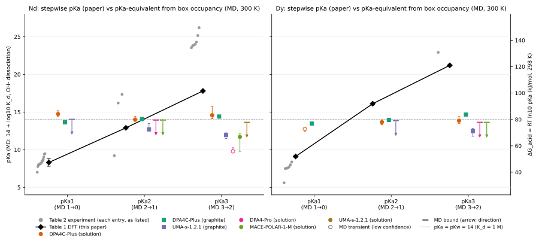

6.3 论文 Table 2（实验值汇总）与 MAD 复核
用 Table 2 重算论文 Table 1 的 MAD：38/39 项一致（±0.05），6 项无实验值；不一致：Yb 第 2 步：重算 0.445 vs Table 1 0.20。说明转录的 Table 1/2 可靠。下表是 Nd、Dy 的全部条目（蓝底 = 论文自己的计算值）。
| Ln | 步 | pKa | 类型 | 文献号 | 引文 | ΔG (kJ/mol) |
|---|---|---|---|---|---|---|
| Nd | 1 | 7.00 | 实验 | 73 | Guillaumont, R.; Desire, B.; Galin, M. Première Constante d’hydrolys… | 39.96 |
| Nd | 1 | 7.76 | 实验 | 75 | Nazarenko, V. A., Antonovich, V. P., and Nevskaya, E. M. Hydrolysis … | 44.29 |
| Nd | 1 | 8.00 | 实验 | 2 | Smith, R. M.; Martell, A. E. Critical Stability Constants: Inorganic… | 45.66 |
| Nd | 1 | 8.00 | 实验 | 77 | Mishustin, A. I. Estimate of the Stability Constants of Trivalent Ac… | 45.66 |
| Nd | 1 | 8.10 | 实验 | 99 | Kragten, J.; Decnop-Weever, L. G. Hydroxide Complexes of Lanthanides… | 46.23 |
| Nd | 1 | 8.13 | 实验 | 84 | Ekberg, Christian, Brown, P. L. Scandium , Yttrium and the Lanthanid… | 46.41 |
| Nd | 1 | 8.18 | 实验 | 82 | Klungness, G. D.; Byrne, R. H. Comparative Hydrolysis Behavior of th… | 46.69 |
| Nd | 1 | 8.24 | 实验 | 79 | Yakubovich, Y. Y.; Alekseev, V. G. Hydrolysis Constants of Tervalent… | 47.03 |
| Nd | 1 | 8.30± 0.5 | 论文计算 | — | Shiery 2021 自己的计算值（= Table 1） | 47.38 |
| Nd | 1 | 8.50 | 实验 | 96 | Sillen, L. G.; Martell, A. E.; Bjerrum, J. Stability Constants of Me… | 48.52 |
| Nd | 1 | 8.50 | 实验 | 97 | Tobias, R. S.; Garrett, A. B. The Thermodynamic Properties of Neodym… | 48.52 |
| Nd | 1 | 8.70 | 实验 | 87 | Frolova, U. K.; Kumok, V. N.; Serebrennikov, V. V. Hydrolysis of Ion… | 49.66 |
| Nd | 1 | 9.00 | 实验 | 90 | Moeller, T. Observations on the Rare Earths. LV. Hydrolysis Studies … | 51.37 |
| Nd | 1 | 9.40 | 实验 | 104 | Burkov, K. A.; Lilich, L. S.; Ngo, N. D.; Smirnov, A. Y. Potentiomet… | 53.66 |
| Nd | 1 | 9.46 | 实验 | 88 | Luo, Q.-H., Shen, M.-C., Bao, X.-L., Ding, Y. A Study on Hydrolytic … | 54.00 |
| Nd | 2 | 9.20 | 实验 | 100 | Wood, S. A., Palmer, D. A., Wesolowski, D. J., & Bénézeth, P. A. The… | 52.51 |
| Nd | 2 | 12.90 | 论文计算 | — | Shiery 2021 自己的计算值（= Table 1） | 73.63 |
| Nd | 2 | 16.20 | 实验 | 99 | Kragten, J.; Decnop-Weever, L. G. Hydroxide Complexes of Lanthanides… | 92.47 |
| Nd | 2 | 17.35 | 实验 | 103 | Neck, V.; Altmaier, M.; Rabung, T.; Lützenkirchen, J.; Fanghänel, T.… | 99.03 |
| Nd | 3 | 17.80 | 论文计算 | — | Shiery 2021 自己的计算值（= Table 1） | 101.60 |
| Nd | 3 | 23.54 | 实验 | 80 | Fatin-Rouge, N.; Bünzli, J. C. G. Thermodynamic and Structural Study… | 134.37 |
| Nd | 3 | 23.80 | 实验 | 101 | Makino, H., Yajima, T., Yoshikawa, H., Yui, M., and Sasaki, N. Neody… | 135.85 |
| Nd | 3 | 23.90 | 实验 | 102 | Silva, R. J. Thermodynamic Properties of Chemical Species in Nuclear… | 136.42 |
| Nd | 3 | 24.00 | 实验 | 100 | Wood, S. A., Palmer, D. A., Wesolowski, D. J., & Bénézeth, P. A. The… | 136.99 |
| Nd | 3 | 24.30 | 实验 | 99 | Kragten, J.; Decnop-Weever, L. G. Hydroxide Complexes of Lanthanides… | 138.70 |
| Nd | 3 | 25.16 | 实验 | 79 | Yakubovich, Y. Y.; Alekseev, V. G. Hydrolysis Constants of Tervalent… | 143.61 |
| Nd | 3 | 26.20 | 实验 | 103 | Neck, V.; Altmaier, M.; Rabung, T.; Lützenkirchen, J.; Fanghänel, T.… | 149.55 |
| Dy | 1 | 5.60 | 实验 | 73 | Guillaumont, R.; Desire, B.; Galin, M. Première Constante d’hydrolys… | 31.96 |
| Dy | 1 | 7.50 | 实验 | 118 | Vasca, E.; Ferri, D.; Manfredi, C.; Fantasma, F.; Caruso, T.; Fontan… | 42.81 |
| Dy | 1 | 7.53 | 实验 | 84 | Ekberg, Christian, Brown, P. L. Scandium , Yttrium and the Lanthanid… | 42.98 |
| Dy | 1 | 7.59 | 实验 | 82 | Klungness, G. D.; Byrne, R. H. Comparative Hydrolysis Behavior of th… | 43.32 |
| Dy | 1 | 7.72 | 实验 | 79 | Yakubovich, Y. Y.; Alekseev, V. G. Hydrolysis Constants of Tervalent… | 44.07 |
| Dy | 1 | 8.00 | 实验 | 77 | Mishustin, A. I. Estimate of the Stability Constants of Trivalent Ac… | 45.66 |
| Dy | 1 | 8.37 | 实验 | 87 | Frolova, U. K.; Kumok, V. N.; Serebrennikov, V. V. Hydrolysis of Ion… | 47.78 |
| Dy | 1 | 9.10± 0.1 | 论文计算 | — | Shiery 2021 自己的计算值（= Table 1） | 51.94 |
| Dy | 2 | 16.10 | 论文计算 | — | Shiery 2021 自己的计算值（= Table 1） | 91.90 |
| Dy | 3 | 21.20 | 论文计算 | — | Shiery 2021 自己的计算值（= Table 1） | 121.01 |
| Dy | 3 | 22.92 | 实验 | 79 | Yakubovich, Y. Y.; Alekseev, V. G. Hydrolysis Constants of Tervalent… | 130.83 |
全部 15 个 Ln 的 Table 2（256 条）
| Ln | 步 | pKa | 类型 | 文献号 | 引文 | ΔG (kJ/mol) |
|---|---|---|---|---|---|---|
| La | 1 | 7.40 | 实验 | 73 | Guillaumont, R.; Desire, B.; Galin, M. Première Constante d’hydrolys… | 42.24 |
| La | 1 | 7.77 | 实验 | 74 | Chirkst, D. E.; Lobacheva, O. L.; Dzhevaga, N. V. Thermodynamic Prop… | 44.35 |
| La | 1 | 8.14 | 实验 | 75 | Nazarenko, V. A., Antonovich, V. P., and Nevskaya, E. M. Hydrolysis … | 46.46 |
| La | 1 | 8.40± 0.9 | 论文计算 | — | Shiery 2021 自己的计算值（= Table 1） | 47.95 |
| La | 1 | 8.40 | 实验 | 76 | Wheelwright, E. J.; Spedding, F. H.; Schwarzenbach, G. The Stability… | 47.95 |
| La | 1 | 8.50 | 实验 | 2 | Smith, R. M.; Martell, A. E. Critical Stability Constants: Inorganic… | 48.52 |
| La | 1 | 8.50 | 实验 | 77 | Mishustin, A. I. Estimate of the Stability Constants of Trivalent Ac… | 48.52 |
| La | 1 | 8.52 | 实验 | 78 | İçhedef, Ç.; Şişmanoğlu, T.; Teksöz, S. Hydrolytic Behavior of La3+ … | 48.63 |
| La | 1 | 8.53 | 实验 | 79 | Yakubovich, Y. Y.; Alekseev, V. G. Hydrolysis Constants of Tervalent… | 48.69 |
| La | 1 | 8.60 | 实验 | 81 | Kragten, J.; Decnop-Weever, L. G. Hydroxide Complexes of Lanthanides… | 49.09 |
| La | 1 | 8.81 | 实验 | 82 | Klungness, G. D.; Byrne, R. H. Comparative Hydrolysis Behavior of th… | 50.29 |
| La | 1 | 8.87 | 实验 | 83 | Ramírez-García, J. J.; Solache-Ríos, M.; Jiménez-Reyes, M.; Rojas-He… | 50.63 |
| La | 1 | 8.89 | 实验 | 84 | Ekberg, Christian, Brown, P. L. Scandium , Yttrium and the Lanthanid… | 50.74 |
| La | 1 | 9.10 | 实验 | 85 | Usherenko, L. N.; Skorik, N. A. Ion Hydrolysis of Rare-Earth Element… | 51.94 |
| La | 1 | 9.20 | 实验 | 86 | Ciavatta, L.; Iuliano, M.; Porto, R. The Hydrolysis of the La (III) … | 52.51 |
| La | 1 | 9.33 | 实验 | 87 | Frolova, U. K.; Kumok, V. N.; Serebrennikov, V. V. Hydrolysis of Ion… | 53.26 |
| La | 1 | 9.94 | 实验 | 88 | Luo, Q.-H., Shen, M.-C., Bao, X.-L., Ding, Y. A Study on Hydrolytic … | 56.74 |
| La | 1 | 10.00 | 实验 | 89 | Amaya, T.; Kakihana, H.; Maeda, M. The Hydrolysis of Y3+, La3+, Gd3+… | 57.08 |
| La | 1 | 10.00 | 实验 | 90 | Moeller, T. Observations on the Rare Earths. LV. Hydrolysis Studies … | 57.08 |
| La | 1 | 10.10 | 实验 | 91 | Biedermann, G.; Ciavatta, L. Studies on the Hydrolysis of Metal Ions… | 57.65 |
| La | 1 | 10.30 | 实验 | 92 | Burkov, K. A.; Busko, E. A.; Pichugina, I. V. State of Lanthanum, Pr… | 58.79 |
| La | 2 | 13.40 | 论文计算 | — | Shiery 2021 自己的计算值（= Table 1） | 76.49 |
| La | 2 | 17.90 | 实验 | 81 | Kragten, J.; Decnop-Weever, L. G. Hydroxide Complexes of Lanthanides… | 102.17 |
| La | 3 | 19.60 | 论文计算 | — | Shiery 2021 自己的计算值（= Table 1） | 111.88 |
| La | 3 | 26.12 | 实验 | 80 | Fatin-Rouge, N.; Bünzli, J. C. G. Thermodynamic and Structural Study… | 149.09 |
| La | 3 | 26.56 | 实验 | 79 | Yakubovich, Y. Y.; Alekseev, V. G. Hydrolysis Constants of Tervalent… | 151.60 |
| La | 3 | 26.84 | 实验 | 78 | İçhedef, Ç.; Şişmanoğlu, T.; Teksöz, S. Hydrolytic Behavior of La3+ … | 153.20 |
| La | 3 | 27.30 | 实验 | 81 | Kragten, J.; Decnop-Weever, L. G. Hydroxide Complexes of Lanthanides… | 155.83 |
| Ce | 1 | 8.02 | 实验 | 75 | Nazarenko, V. A., Antonovich, V. P., and Nevskaya, E. M. Hydrolysis … | 45.78 |
| Ce | 1 | 8.10 | 实验 | 93 | Kragten, J.; Decnop-Weever, L. G. Hydroxide Complexes of Cerium (III… | 46.23 |
| Ce | 1 | 8.31 | 实验 | 84 | Ekberg, Christian, Brown, P. L. Scandium , Yttrium and the Lanthanid… | 47.43 |
| Ce | 1 | 8.34 | 实验 | 82 | Klungness, G. D.; Byrne, R. H. Comparative Hydrolysis Behavior of th… | 47.60 |
| Ce | 1 | 8.34 | 实验 | 77 | Mishustin, A. I. Estimate of the Stability Constants of Trivalent Ac… | 47.60 |
| Ce | 1 | 8.43 | 实验 | 79 | Yakubovich, Y. Y.; Alekseev, V. G. Hydrolysis Constants of Tervalent… | 48.12 |
| Ce | 1 | 8.80± 0.3 | 论文计算 | — | Shiery 2021 自己的计算值（= Table 1） | 50.23 |
| Ce | 1 | 9.10 | 实验 | 95 | Ciavatta, L.; Porto, R.; Vasca, E. The Hydrolysis of the Cerium (III… | 51.94 |
| Ce | 1 | 9.30 | 实验 | 96 | Sillen, L. G.; Martell, A. E.; Bjerrum, J. Stability Constants of Me… | 53.08 |
| Ce | 2 | 16.30 | 实验 | 93 | Kragten, J.; Decnop-Weever, L. G. Hydroxide Complexes of Cerium (III… | 93.04 |
| Ce | 2 | 17.10 | 论文计算 | — | Shiery 2021 自己的计算值（= Table 1） | 97.61 |
| Ce | 3 | 20.00 | 论文计算 | — | Shiery 2021 自己的计算值（= Table 1） | 114.16 |
| Ce | 3 | 23.65 | 实验 | 94 | Teksöz, S.; Acar, Ç.; Ünak, P. Hydrolytic Behavior of Th4+, UO22+, a… | 134.99 |
| Ce | 3 | 26.00 | 实验 | 93 | Kragten, J.; Decnop-Weever, L. G. Hydroxide Complexes of Cerium (III… | 148.41 |
| Ce | 3 | 26.25 | 实验 | 79 | Yakubovich, Y. Y.; Alekseev, V. G. Hydrolysis Constants of Tervalent… | 149.84 |
| Pr | 1 | 7.10 | 实验 | 73 | Guillaumont, R.; Desire, B.; Galin, M. Première Constante d’hydrolys… | 40.53 |
| Pr | 1 | 7.86 | 实验 | 75 | Nazarenko, V. A., Antonovich, V. P., and Nevskaya, E. M. Hydrolysis … | 44.86 |
| Pr | 1 | 8.10 | 实验 | 77 | Mishustin, A. I. Estimate of the Stability Constants of Trivalent Ac… | 46.23 |
| Pr | 1 | 8.30 | 实验 | 84 | Ekberg, Christian, Brown, P. L. Scandium , Yttrium and the Lanthanid… | 47.38 |
| Pr | 1 | 8.32 | 实验 | 82 | Klungness, G. D.; Byrne, R. H. Comparative Hydrolysis Behavior of th… | 47.49 |
| Pr | 1 | 8.32 | 实验 | 79 | Yakubovich, Y. Y.; Alekseev, V. G. Hydrolysis Constants of Tervalent… | 47.49 |
| Pr | 1 | 8.50 | 实验 | 96 | Sillen, L. G.; Martell, A. E.; Bjerrum, J. Stability Constants of Me… | 48.52 |
| Pr | 1 | 8.50 | 实验 | 97 | Tobias, R. S.; Garrett, A. B. The Thermodynamic Properties of Neodym… | 48.52 |
| Pr | 1 | 8.54 | 实验 | 83 | Ramírez-García, J. J.; Solache-Ríos, M.; Jiménez-Reyes, M.; Rojas-He… | 48.75 |
| Pr | 1 | 8.82 | 实验 | 87 | Frolova, U. K.; Kumok, V. N.; Serebrennikov, V. V. Hydrolysis of Ion… | 50.34 |
| Pr | 1 | 8.94 | 实验 | 98 | González-Mendoza, R.; López-González, H.; Rojas-Hernández, A. Spectr… | 51.03 |
| Pr | 1 | 9.00± 0.5 | 论文计算 | — | Shiery 2021 自己的计算值（= Table 1） | 51.37 |
| Pr | 1 | 9.00 | 实验 | 90 | Moeller, T. Observations on the Rare Earths. LV. Hydrolysis Studies … | 51.37 |
| Pr | 1 | 9.50 | 实验 | 92 | Burkov, K. A.; Busko, E. A.; Pichugina, I. V. State of Lanthanum, Pr… | 54.23 |
| Pr | 2 | 14.00 | 论文计算 | — | Shiery 2021 自己的计算值（= Table 1） | 79.91 |
| Pr | 3 | 20.80 | 论文计算 | — | Shiery 2021 自己的计算值（= Table 1） | 118.73 |
| Pr | 3 | 25.66 | 实验 | 79 | Yakubovich, Y. Y.; Alekseev, V. G. Hydrolysis Constants of Tervalent… | 146.47 |
| Nd | 1 | 7.00 | 实验 | 73 | Guillaumont, R.; Desire, B.; Galin, M. Première Constante d’hydrolys… | 39.96 |
| Nd | 1 | 7.76 | 实验 | 75 | Nazarenko, V. A., Antonovich, V. P., and Nevskaya, E. M. Hydrolysis … | 44.29 |
| Nd | 1 | 8.00 | 实验 | 2 | Smith, R. M.; Martell, A. E. Critical Stability Constants: Inorganic… | 45.66 |
| Nd | 1 | 8.00 | 实验 | 77 | Mishustin, A. I. Estimate of the Stability Constants of Trivalent Ac… | 45.66 |
| Nd | 1 | 8.10 | 实验 | 99 | Kragten, J.; Decnop-Weever, L. G. Hydroxide Complexes of Lanthanides… | 46.23 |
| Nd | 1 | 8.13 | 实验 | 84 | Ekberg, Christian, Brown, P. L. Scandium , Yttrium and the Lanthanid… | 46.41 |
| Nd | 1 | 8.18 | 实验 | 82 | Klungness, G. D.; Byrne, R. H. Comparative Hydrolysis Behavior of th… | 46.69 |
| Nd | 1 | 8.24 | 实验 | 79 | Yakubovich, Y. Y.; Alekseev, V. G. Hydrolysis Constants of Tervalent… | 47.03 |
| Nd | 1 | 8.30± 0.5 | 论文计算 | — | Shiery 2021 自己的计算值（= Table 1） | 47.38 |
| Nd | 1 | 8.50 | 实验 | 96 | Sillen, L. G.; Martell, A. E.; Bjerrum, J. Stability Constants of Me… | 48.52 |
| Nd | 1 | 8.50 | 实验 | 97 | Tobias, R. S.; Garrett, A. B. The Thermodynamic Properties of Neodym… | 48.52 |
| Nd | 1 | 8.70 | 实验 | 87 | Frolova, U. K.; Kumok, V. N.; Serebrennikov, V. V. Hydrolysis of Ion… | 49.66 |
| Nd | 1 | 9.00 | 实验 | 90 | Moeller, T. Observations on the Rare Earths. LV. Hydrolysis Studies … | 51.37 |
| Nd | 1 | 9.40 | 实验 | 104 | Burkov, K. A.; Lilich, L. S.; Ngo, N. D.; Smirnov, A. Y. Potentiomet… | 53.66 |
| Nd | 1 | 9.46 | 实验 | 88 | Luo, Q.-H., Shen, M.-C., Bao, X.-L., Ding, Y. A Study on Hydrolytic … | 54.00 |
| Nd | 2 | 9.20 | 实验 | 100 | Wood, S. A., Palmer, D. A., Wesolowski, D. J., & Bénézeth, P. A. The… | 52.51 |
| Nd | 2 | 12.90 | 论文计算 | — | Shiery 2021 自己的计算值（= Table 1） | 73.63 |
| Nd | 2 | 16.20 | 实验 | 99 | Kragten, J.; Decnop-Weever, L. G. Hydroxide Complexes of Lanthanides… | 92.47 |
| Nd | 2 | 17.35 | 实验 | 103 | Neck, V.; Altmaier, M.; Rabung, T.; Lützenkirchen, J.; Fanghänel, T.… | 99.03 |
| Nd | 3 | 17.80 | 论文计算 | — | Shiery 2021 自己的计算值（= Table 1） | 101.60 |
| Nd | 3 | 23.54 | 实验 | 80 | Fatin-Rouge, N.; Bünzli, J. C. G. Thermodynamic and Structural Study… | 134.37 |
| Nd | 3 | 23.80 | 实验 | 101 | Makino, H., Yajima, T., Yoshikawa, H., Yui, M., and Sasaki, N. Neody… | 135.85 |
| Nd | 3 | 23.90 | 实验 | 102 | Silva, R. J. Thermodynamic Properties of Chemical Species in Nuclear… | 136.42 |
| Nd | 3 | 24.00 | 实验 | 100 | Wood, S. A., Palmer, D. A., Wesolowski, D. J., & Bénézeth, P. A. The… | 136.99 |
| Nd | 3 | 24.30 | 实验 | 99 | Kragten, J.; Decnop-Weever, L. G. Hydroxide Complexes of Lanthanides… | 138.70 |
| Nd | 3 | 25.16 | 实验 | 79 | Yakubovich, Y. Y.; Alekseev, V. G. Hydrolysis Constants of Tervalent… | 143.61 |
| Nd | 3 | 26.20 | 实验 | 103 | Neck, V.; Altmaier, M.; Rabung, T.; Lützenkirchen, J.; Fanghänel, T.… | 149.55 |
| Pm | 1 | 6.50 | 实验 | 73 | Guillaumont, R.; Desire, B.; Galin, M. Première Constante d’hydrolys… | 37.10 |
| Pm | 1 | 8.70± 0.5 | 论文计算 | — | Shiery 2021 自己的计算值（= Table 1） | 49.66 |
| Pm | 2 | 12.80 | 论文计算 | — | Shiery 2021 自己的计算值（= Table 1） | 73.06 |
| Pm | 3 | 19.90 | 论文计算 | — | Shiery 2021 自己的计算值（= Table 1） | 113.59 |
| Sm | 1 | 4.40 | 实验 | 73 | Guillaumont, R.; Desire, B.; Galin, M. Première Constante d’hydrolys… | 25.12 |
| Sm | 1 | 7.00± 0.1 | 论文计算 | — | Shiery 2021 自己的计算值（= Table 1） | 39.96 |
| Sm | 1 | 7.11 | 实验 | 78 | İçhedef, Ç.; Şişmanoğlu, T.; Teksöz, S. Hydrolytic Behavior of La3+ … | 40.58 |
| Sm | 1 | 7.50 | 实验 | 105 | Kragten, J.; Decnop-Weever, L. G. Hydroxide Complexes of Lanthanides… | 42.81 |
| Sm | 1 | 7.60 | 实验 | 75 | Nazarenko, V. A., Antonovich, V. P., and Nevskaya, E. M. Hydrolysis … | 43.38 |
| Sm | 1 | 7.84 | 实验 | 82 | Klungness, G. D.; Byrne, R. H. Comparative Hydrolysis Behavior of th… | 44.75 |
| Sm | 1 | 7.84 | 实验 | 84 | Ekberg, Christian, Brown, P. L. Scandium , Yttrium and the Lanthanid… | 44.75 |
| Sm | 1 | 7.90 | 实验 | 77 | Mishustin, A. I. Estimate of the Stability Constants of Trivalent Ac… | 45.09 |
| Sm | 1 | 8.02 | 实验 | 79 | Yakubovich, Y. Y.; Alekseev, V. G. Hydrolysis Constants of Tervalent… | 45.78 |
| Sm | 1 | 8.61 | 实验 | 87 | Frolova, U. K.; Kumok, V. N.; Serebrennikov, V. V. Hydrolysis of Ion… | 49.15 |
| Sm | 1 | 8.90 | 实验 | 90 | Moeller, T. Observations on the Rare Earths. LV. Hydrolysis Studies … | 50.80 |
| Sm | 2 | 10.90 | 论文计算 | — | Shiery 2021 自己的计算值（= Table 1） | 62.22 |
| Sm | 2 | 15.00 | 实验 | 105 | Kragten, J.; Decnop-Weever, L. G. Hydroxide Complexes of Lanthanides… | 85.62 |
| Sm | 2 | 15.84 | 实验 | 78 | İçhedef, Ç.; Şişmanoğlu, T.; Teksöz, S. Hydrolytic Behavior of La3+ … | 90.41 |
| Sm | 3 | 16.70 | 论文计算 | — | Shiery 2021 自己的计算值（= Table 1） | 95.32 |
| Sm | 3 | 22.70 | 实验 | 105 | Kragten, J.; Decnop-Weever, L. G. Hydroxide Complexes of Lanthanides… | 129.57 |
| Sm | 3 | 23.44 | 实验 | 78 | İçhedef, Ç.; Şişmanoğlu, T.; Teksöz, S. Hydrolytic Behavior of La3+ … | 133.80 |
| Sm | 3 | 24.62 | 实验 | 79 | Yakubovich, Y. Y.; Alekseev, V. G. Hydrolysis Constants of Tervalent… | 140.53 |
| Eu | 1 | 4.80 | 实验 | 73 | Guillaumont, R.; Desire, B.; Galin, M. Première Constante d’hydrolys… | 27.40 |
| Eu | 1 | 6.70 | 实验 | 106 | M’Halla, J., Chemla, M., Bury, R., and David, F. Étude Conductimétri… | 38.24 |
| Eu | 1 | 7.30 | 实验 | 107 | Caceci, M. S.; Choppin, G. R. The Determination of the First Hydroly… | 41.67 |
| Eu | 1 | 7.49 | 实验 | 75 | Nazarenko, V. A., Antonovich, V. P., and Nevskaya, E. M. Hydrolysis … | 42.75 |
| Eu | 1 | 7.49 | 实验 | 108 | Jiménez-Reyes, M.; Solache-Ríos, M.; Rojas-Hernández, A. Application… | 42.75 |
| Eu | 1 | 7.66 | 实验 | 84 | Ekberg, Christian, Brown, P. L. Scandium , Yttrium and the Lanthanid… | 43.72 |
| Eu | 1 | 7.76 | 实验 | 82 | Klungness, G. D.; Byrne, R. H. Comparative Hydrolysis Behavior of th… | 44.29 |
| Eu | 1 | 7.80 | 实验 | 77 | Mishustin, A. I. Estimate of the Stability Constants of Trivalent Ac… | 44.52 |
| Eu | 1 | 7.91 | 实验 | 79 | Yakubovich, Y. Y.; Alekseev, V. G. Hydrolysis Constants of Tervalent… | 45.15 |
| Eu | 1 | 8.00 | 实验 | 85 | Usherenko, L. N.; Skorik, N. A. Ion Hydrolysis of Rare-Earth Element… | 45.66 |
| Eu | 1 | 8.08 | 实验 | 109 | Lundqvist, R.; Chen, A.-T.; Suurkuusk, J.; Wadsö, I.; Sokolov, V. B.… | 46.12 |
| Eu | 1 | 8.10 | 实验 | 110 | Nair, G. M.; Chander, K.; Joshi, J. K. Hydrolysis Constants of Pluto… | 46.23 |
| Eu | 1 | 8.20 | 实验 | 111 | Ramírez-García, J. J.; Jiménez-Reyes, M.; Solache-Ríos, M.; Fernánde… | 46.81 |
| Eu | 1 | 8.31 | 实验 | 112 | Chirkst, D. E.; Lobacheva, O. L.; Berlinskii, I. V.; Sulimova, M. I.… | 47.43 |
| Eu | 1 | 8.34 | 实验 | 83 | Ramírez-García, J. J.; Solache-Ríos, M.; Jiménez-Reyes, M.; Rojas-He… | 47.60 |
| Eu | 1 | 8.58 | 实验 | 87 | Frolova, U. K.; Kumok, V. N.; Serebrennikov, V. V. Hydrolysis of Ion… | 48.97 |
| Eu | 1 | 8.70 | 实验 | 113 | Schmidt, K. H.; Sullivan, J. C.; Gordon, S.; Thompson, R. C. Determi… | 49.66 |
| Eu | 1 | 10.10± 0.2 | 论文计算 | — | Shiery 2021 自己的计算值（= Table 1） | 57.65 |
| Eu | 2 | 19.80 | 论文计算 | — | Shiery 2021 自己的计算值（= Table 1） | 113.02 |
| Eu | 3 | 23.90 | 论文计算 | — | Shiery 2021 自己的计算值（= Table 1） | 136.42 |
| Eu | 3 | 24.34 | 实验 | 79 | Yakubovich, Y. Y.; Alekseev, V. G. Hydrolysis Constants of Tervalent… | 138.93 |
| Gd | 1 | 7.10 | 实验 | 73 | Guillaumont, R.; Desire, B.; Galin, M. Première Constante d’hydrolys… | 40.53 |
| Gd | 1 | 7.30 | 实验 | 114 | Kragten, J.; Decnop-Weever, L. G. Hydroxide Complexes of Lanthanides… | 41.67 |
| Gd | 1 | 7.36 | 实验 | 75 | Nazarenko, V. A., Antonovich, V. P., and Nevskaya, E. M. Hydrolysis … | 42.01 |
| Gd | 1 | 7.83 | 实验 | 82 | Klungness, G. D.; Byrne, R. H. Comparative Hydrolysis Behavior of th… | 44.69 |
| Gd | 1 | 7.87 | 实验 | 84 | Ekberg, Christian, Brown, P. L. Scandium , Yttrium and the Lanthanid… | 44.92 |
| Gd | 1 | 7.87 | 实验 | 79 | Yakubovich, Y. Y.; Alekseev, V. G. Hydrolysis Constants of Tervalent… | 44.92 |
| Gd | 1 | 7.87 | 实验 | 115 | Garcia Rodenas, L. and Liberman, S. J. Hydrolysis of Gadolinium(III)… | 44.92 |
| Gd | 1 | 8.00 | 实验 | 77 | Mishustin, A. I. Estimate of the Stability Constants of Trivalent Ac… | 45.66 |
| Gd | 1 | 8.20 | 实验 | 89 | Amaya, T.; Kakihana, H.; Maeda, M. The Hydrolysis of Y3+, La3+, Gd3+… | 46.81 |
| Gd | 1 | 8.30 | 实验 | 85 | Usherenko, L. N.; Skorik, N. A. Ion Hydrolysis of Rare-Earth Element… | 47.38 |
| Gd | 1 | 8.44 | 实验 | 116 | Moutte, A. and Guillaumont, R. Complexes Citriques d’actinium et de … | 48.18 |
| Gd | 1 | 8.40± 0.4 | 论文计算 | — | Shiery 2021 自己的计算值（= Table 1） | 47.95 |
| Gd | 1 | 8.62 | 实验 | 87 | Frolova, U. K.; Kumok, V. N.; Serebrennikov, V. V. Hydrolysis of Ion… | 49.20 |
| Gd | 1 | 9.20 | 实验 | 117 | Ngo, N. D.; Burkov, K. A. State of Gadolineum Ions in Aqueous Soluti… | 52.51 |
| Gd | 2 | 15.16 | 实验 | 115 | Garcia Rodenas, L. and Liberman, S. J. Hydrolysis of Gadolinium(III)… | 86.53 |
| Gd | 2 | 15.80 | 论文计算 | — | Shiery 2021 自己的计算值（= Table 1） | 90.19 |
| Gd | 2 | 15.82 | 实验 | 116 | Moutte, A. and Guillaumont, R. Complexes Citriques d’actinium et de … | 90.30 |
| Gd | 3 | 17.20 | 论文计算 | — | Shiery 2021 自己的计算值（= Table 1） | 98.18 |
| Gd | 3 | 21.90 | 实验 | 114 | Kragten, J.; Decnop-Weever, L. G. Hydroxide Complexes of Lanthanides… | 125.01 |
| Gd | 3 | 22.16 | 实验 | 80 | Fatin-Rouge, N.; Bünzli, J. C. G. Thermodynamic and Structural Study… | 126.49 |
| Gd | 3 | 23.92 | 实验 | 79 | Yakubovich, Y. Y.; Alekseev, V. G. Hydrolysis Constants of Tervalent… | 136.54 |
| Tb | 1 | 5.20 | 实验 | 73 | Guillaumont, R.; Desire, B.; Galin, M. Première Constante d’hydrolys… | 29.68 |
| Tb | 1 | 7.18 | 实验 | 75 | Nazarenko, V. A., Antonovich, V. P., and Nevskaya, E. M. Hydrolysis … | 40.98 |
| Tb | 1 | 7.55 | 实验 | 115 | Garcia Rodenas, L. and Liberman, S. J. Hydrolysis of Gadolinium(III)… | 43.10 |
| Tb | 1 | 7.60 | 实验 | 84 | Ekberg, Christian, Brown, P. L. Scandium , Yttrium and the Lanthanid… | 43.38 |
| Tb | 1 | 7.64 | 实验 | 82 | Klungness, G. D.; Byrne, R. H. Comparative Hydrolysis Behavior of th… | 43.61 |
| Tb | 1 | 7.74 | 实验 | 79 | Yakubovich, Y. Y.; Alekseev, V. G. Hydrolysis Constants of Tervalent… | 44.18 |
| Tb | 1 | 7.90 | 实验 | 77 | Mishustin, A. I. Estimate of the Stability Constants of Trivalent Ac… | 45.09 |
| Tb | 1 | 8.43 | 实验 | 87 | Frolova, U. K.; Kumok, V. N.; Serebrennikov, V. V. Hydrolysis of Ion… | 48.12 |
| Tb | 1 | 8.44 | 实验 | 116 | Moutte, A. and Guillaumont, R. Complexes Citriques d’actinium et de … | 48.18 |
| Tb | 1 | 9.10± 0.5 | 论文计算 | — | Shiery 2021 自己的计算值（= Table 1） | 51.94 |
| Tb | 2 | 15.40 | 论文计算 | — | Shiery 2021 自己的计算值（= Table 1） | 87.90 |
| Tb | 3 | 20.40 | 论文计算 | — | Shiery 2021 自己的计算值（= Table 1） | 116.44 |
| Tb | 3 | 23.43 | 实验 | 79 | Yakubovich, Y. Y.; Alekseev, V. G. Hydrolysis Constants of Tervalent… | 133.74 |
| Dy | 1 | 5.60 | 实验 | 73 | Guillaumont, R.; Desire, B.; Galin, M. Première Constante d’hydrolys… | 31.96 |
| Dy | 1 | 7.50 | 实验 | 118 | Vasca, E.; Ferri, D.; Manfredi, C.; Fantasma, F.; Caruso, T.; Fontan… | 42.81 |
| Dy | 1 | 7.53 | 实验 | 84 | Ekberg, Christian, Brown, P. L. Scandium , Yttrium and the Lanthanid… | 42.98 |
| Dy | 1 | 7.59 | 实验 | 82 | Klungness, G. D.; Byrne, R. H. Comparative Hydrolysis Behavior of th… | 43.32 |
| Dy | 1 | 7.72 | 实验 | 79 | Yakubovich, Y. Y.; Alekseev, V. G. Hydrolysis Constants of Tervalent… | 44.07 |
| Dy | 1 | 8.00 | 实验 | 77 | Mishustin, A. I. Estimate of the Stability Constants of Trivalent Ac… | 45.66 |
| Dy | 1 | 8.37 | 实验 | 87 | Frolova, U. K.; Kumok, V. N.; Serebrennikov, V. V. Hydrolysis of Ion… | 47.78 |
| Dy | 1 | 9.10± 0.1 | 论文计算 | — | Shiery 2021 自己的计算值（= Table 1） | 51.94 |
| Dy | 2 | 16.10 | 论文计算 | — | Shiery 2021 自己的计算值（= Table 1） | 91.90 |
| Dy | 3 | 21.20 | 论文计算 | — | Shiery 2021 自己的计算值（= Table 1） | 121.01 |
| Dy | 3 | 22.92 | 实验 | 79 | Yakubovich, Y. Y.; Alekseev, V. G. Hydrolysis Constants of Tervalent… | 130.83 |
| Ho | 1 | 5.70 | 实验 | 73 | Guillaumont, R.; Desire, B.; Galin, M. Première Constante d’hydrolys… | 32.54 |
| Ho | 1 | 6.80 | 实验 | 75 | Nazarenko, V. A., Antonovich, V. P., and Nevskaya, E. M. Hydrolysis … | 38.81 |
| Ho | 1 | 7.43 | 实验 | 84 | Ekberg, Christian, Brown, P. L. Scandium , Yttrium and the Lanthanid… | 42.41 |
| Ho | 1 | 7.56 | 实验 | 82 | Klungness, G. D.; Byrne, R. H. Comparative Hydrolysis Behavior of th… | 43.15 |
| Ho | 1 | 7.66 | 实验 | 79 | Yakubovich, Y. Y.; Alekseev, V. G. Hydrolysis Constants of Tervalent… | 43.72 |
| Ho | 1 | 7.85 | 实验 | 74 | Chirkst, D. E.; Lobacheva, O. L.; Dzhevaga, N. V. Thermodynamic Prop… | 44.81 |
| Ho | 1 | 8.00 | 实验 | 77 | Mishustin, A. I. Estimate of the Stability Constants of Trivalent Ac… | 45.66 |
| Ho | 1 | 8.14 | 实验 | 119 | Stepanchikova, S. A.; Biteikina, R. P. Spectrophotometric Study of H… | 46.46 |
| Ho | 1 | 8.31 | 实验 | 87 | Frolova, U. K.; Kumok, V. N.; Serebrennikov, V. V. Hydrolysis of Ion… | 47.43 |
| Ho | 1 | 8.40± 0.5 | 论文计算 | — | Shiery 2021 自己的计算值（= Table 1） | 47.95 |
| Ho | 2 | 15.20 | 论文计算 | — | Shiery 2021 自己的计算值（= Table 1） | 86.76 |
| Ho | 2 | 16.25 | 实验 | 79 | Yakubovich, Y. Y.; Alekseev, V. G. Hydrolysis Constants of Tervalent… | 92.76 |
| Ho | 3 | 18.80 | 论文计算 | — | Shiery 2021 自己的计算值（= Table 1） | 107.31 |
| Ho | 3 | 22.71 | 实验 | 79 | Yakubovich, Y. Y.; Alekseev, V. G. Hydrolysis Constants of Tervalent… | 129.63 |
| Er | 1 | 5.50 | 实验 | 73 | Guillaumont, R.; Desire, B.; Galin, M. Première Constante d’hydrolys… | 31.39 |
| Er | 1 | 6.30 | 实验 | 120 | Kragten, J.; Decnop-Weever, L. G. Hydroxide Complexes of Lanthanides… | 35.96 |
| Er | 1 | 6.56 | 实验 | 75 | Nazarenko, V. A., Antonovich, V. P., and Nevskaya, E. M. Hydrolysis … | 37.44 |
| Er | 1 | 7.20± 0.9 | 论文计算 | — | Shiery 2021 自己的计算值（= Table 1） | 41.10 |
| Er | 1 | 7.46 | 实验 | 84 | Ekberg, Christian, Brown, P. L. Scandium , Yttrium and the Lanthanid… | 42.58 |
| Er | 1 | 7.52 | 实验 | 82 | Klungness, G. D.; Byrne, R. H. Comparative Hydrolysis Behavior of th… | 42.92 |
| Er | 1 | 7.63 | 实验 | 79 | Yakubovich, Y. Y.; Alekseev, V. G. Hydrolysis Constants of Tervalent… | 43.55 |
| Er | 1 | 7.90 | 实验 | 77 | Mishustin, A. I. Estimate of the Stability Constants of Trivalent Ac… | 45.09 |
| Er | 1 | 8.16 | 实验 | 83 | Ramírez-García, J. J.; Solache-Ríos, M.; Jiménez-Reyes, M.; Rojas-He… | 46.58 |
| Er | 1 | 8.26 | 实验 | 87 | Frolova, U. K.; Kumok, V. N.; Serebrennikov, V. V. Hydrolysis of Ion… | 47.15 |
| Er | 1 | 8.40 | 实验 | 88 | Luo, Q.-H., Shen, M.-C., Bao, X.-L., Ding, Y. A Study on Hydrolytic … | 47.95 |
| Er | 1 | 9.00 | 实验 | 121 | Rizkalla, E. N.; Choppin, G. R. Chapter 103 Hydration and Hydrolysis… | 51.37 |
| Er | 2 | 11.80 | 论文计算 | — | Shiery 2021 自己的计算值（= Table 1） | 67.35 |
| Er | 2 | 14.50 | 实验 | 2 | Smith, R. M.; Martell, A. E. Critical Stability Constants: Inorganic… | 82.77 |
| Er | 2 | 16.15 | 实验 | 79 | Yakubovich, Y. Y.; Alekseev, V. G. Hydrolysis Constants of Tervalent… | 92.18 |
| Er | 2 | 17.40 | 实验 | 89 | Amaya, T.; Kakihana, H.; Maeda, M. The Hydrolysis of Y3+, La3+, Gd3+… | 99.32 |
| Er | 3 | 15.90 | 论文计算 | — | Shiery 2021 自己的计算值（= Table 1） | 90.76 |
| Er | 3 | 22.23 | 实验 | 79 | Yakubovich, Y. Y.; Alekseev, V. G. Hydrolysis Constants of Tervalent… | 126.89 |
| Er | 3 | 23.10 | 实验 | 2 | Smith, R. M.; Martell, A. E. Critical Stability Constants: Inorganic… | 131.86 |
| Tm | 1 | 4.40 | 实验 | 73 | Guillaumont, R.; Desire, B.; Galin, M. Première Constante d’hydrolys… | 25.12 |
| Tm | 1 | 6.36 | 实验 | 75 | Nazarenko, V. A., Antonovich, V. P., and Nevskaya, E. M. Hydrolysis … | 36.30 |
| Tm | 1 | 7.34 | 实验 | 84 | Ekberg, Christian, Brown, P. L. Scandium , Yttrium and the Lanthanid… | 41.90 |
| Tm | 1 | 7.39 | 实验 | 82 | Klungness, G. D.; Byrne, R. H. Comparative Hydrolysis Behavior of th… | 42.18 |
| Tm | 1 | 7.51 | 实验 | 79 | Yakubovich, Y. Y.; Alekseev, V. G. Hydrolysis Constants of Tervalent… | 42.87 |
| Tm | 1 | 7.70 | 实验 | 77 | Mishustin, A. I. Estimate of the Stability Constants of Trivalent Ac… | 43.95 |
| Tm | 1 | 8.22 | 实验 | 87 | Frolova, U. K.; Kumok, V. N.; Serebrennikov, V. V. Hydrolysis of Ion… | 46.92 |
| Tm | 1 | 8.58 | 实验 | 122 | Stepanchikova, S. A.; Biteykina, R. P.; Sava, A. A. An Experimental … | 48.97 |
| Tm | 1 | 8.90± 0.0 | 论文计算 | — | Shiery 2021 自己的计算值（= Table 1） | 50.80 |
| Tm | 2 | 12.10 | 论文计算 | — | Shiery 2021 自己的计算值（= Table 1） | 69.07 |
| Tm | 2 | 15.98 | 实验 | 79 | Yakubovich, Y. Y.; Alekseev, V. G. Hydrolysis Constants of Tervalent… | 91.21 |
| Tm | 3 | 15.80 | 论文计算 | — | Shiery 2021 自己的计算值（= Table 1） | 90.19 |
| Tm | 3 | 21.91 | 实验 | 79 | Yakubovich, Y. Y.; Alekseev, V. G. Hydrolysis Constants of Tervalent… | 125.06 |
| Yb | 1 | 4.30 | 实验 | 73 | Guillaumont, R.; Desire, B.; Galin, M. Première Constante d’hydrolys… | 24.54 |
| Yb | 1 | 6.24 | 实验 | 75 | Nazarenko, V. A., Antonovich, V. P., and Nevskaya, E. M. Hydrolysis … | 35.62 |
| Yb | 1 | 7.24 | 实验 | 82 | Klungness, G. D.; Byrne, R. H. Comparative Hydrolysis Behavior of th… | 41.33 |
| Yb | 1 | 7.31 | 实验 | 84 | Ekberg, Christian, Brown, P. L. Scandium , Yttrium and the Lanthanid… | 41.73 |
| Yb | 1 | 7.45 | 实验 | 79 | Yakubovich, Y. Y.; Alekseev, V. G. Hydrolysis Constants of Tervalent… | 42.52 |
| Yb | 1 | 7.70 | 实验 | 123 | Kragten, J.; Decnop-Weever, L. G. Hydroxide Complexes of Lanthanides… | 43.95 |
| Yb | 1 | 7.70 | 实验 | 77 | Mishustin, A. I. Estimate of the Stability Constants of Trivalent Ac… | 43.95 |
| Yb | 1 | 8.00 | 实验 | 85 | Usherenko, L. N.; Skorik, N. A. Ion Hydrolysis of Rare-Earth Element… | 45.66 |
| Yb | 1 | 8.19 | 实验 | 87 | Frolova, U. K.; Kumok, V. N.; Serebrennikov, V. V. Hydrolysis of Ion… | 46.75 |
| Yb | 1 | 8.40 | 实验 | 124 | Lvanov-Emin, B. N.; Egorov, A. M.; Romanyuk, V. I.; Siforova, E. N. … | 47.95 |
| Yb | 1 | 8.20± 0.3 | 论文计算 | — | Shiery 2021 自己的计算值（= Table 1） | 46.81 |
| Yb | 1 | 8.60 | 实验 | 92 | Burkov, K. A.; Busko, E. A.; Pichugina, I. V. State of Lanthanum, Pr… | 49.09 |
| Yb | 2 | 15.10 | 论文计算 | — | Shiery 2021 自己的计算值（= Table 1） | 86.19 |
| Yb | 2 | 15.50 | 实验 | 123 | Kragten, J.; Decnop-Weever, L. G. Hydroxide Complexes of Lanthanides… | 88.47 |
| Yb | 2 | 15.59 | 实验 | 79 | Yakubovich, Y. Y.; Alekseev, V. G. Hydrolysis Constants of Tervalent… | 88.99 |
| Yb | 3 | 18.30 | 论文计算 | — | Shiery 2021 自己的计算值（= Table 1） | 104.46 |
| Yb | 3 | 20.68 | 实验 | 80 | Fatin-Rouge, N.; Bünzli, J. C. G. Thermodynamic and Structural Study… | 118.04 |
| Yb | 3 | 21.72 | 实验 | 79 | Yakubovich, Y. Y.; Alekseev, V. G. Hydrolysis Constants of Tervalent… | 123.98 |
| Yb | 3 | 23.20 | 实验 | 123 | Kragten, J.; Decnop-Weever, L. G. Hydroxide Complexes of Lanthanides… | 132.43 |
| Lu | 1 | 3.50 | 实验 | 73 | Guillaumont, R.; Desire, B.; Galin, M. Première Constante d’hydrolys… | 19.98 |
| Lu | 1 | 6.04 | 实验 | 75 | Nazarenko, V. A., Antonovich, V. P., and Nevskaya, E. M. Hydrolysis … | 34.48 |
| Lu | 1 | 6.60 | 实验 | 96 | Sillen, L. G.; Martell, A. E.; Bjerrum, J. Stability Constants of Me… | 37.67 |
| Lu | 1 | 7.27 | 实验 | 82 | Klungness, G. D.; Byrne, R. H. Comparative Hydrolysis Behavior of th… | 41.50 |
| Lu | 1 | 7.33 | 实验 | 84 | Ekberg, Christian, Brown, P. L. Scandium , Yttrium and the Lanthanid… | 41.84 |
| Lu | 1 | 7.41 | 实验 | 79 | Yakubovich, Y. Y.; Alekseev, V. G. Hydrolysis Constants of Tervalent… | 42.30 |
| Lu | 1 | 7.60 | 实验 | 77 | Mishustin, A. I. Estimate of the Stability Constants of Trivalent Ac… | 43.38 |
| Lu | 1 | 7.70 | 实验 | 85 | Usherenko, L. N.; Skorik, N. A. Ion Hydrolysis of Rare-Earth Element… | 43.95 |
| Lu | 1 | 7.90± 0.9 | 论文计算 | — | Shiery 2021 自己的计算值（= Table 1） | 45.09 |
| Lu | 1 | 8.00 | 实验 | 125 | López-González, H.; Jiménez-Reyes, M.; Solache-Ríos, M.; Rojas-Herná… | 45.66 |
| Lu | 1 | 8.11 | 实验 | 83 | Ramírez-García, J. J.; Solache-Ríos, M.; Jiménez-Reyes, M.; Rojas-He… | 46.29 |
| Lu | 1 | 8.17 | 实验 | 87 | Frolova, U. K.; Kumok, V. N.; Serebrennikov, V. V. Hydrolysis of Ion… | 46.63 |
| Lu | 2 | 14.00 | 论文计算 | — | Shiery 2021 自己的计算值（= Table 1） | 79.91 |
| Lu | 2 | 15.21 | 实验 | 79 | Yakubovich, Y. Y.; Alekseev, V. G. Hydrolysis Constants of Tervalent… | 86.82 |
| Lu | 3 | 17.10 | 论文计算 | — | Shiery 2021 自己的计算值（= Table 1） | 97.61 |
| Lu | 3 | 21.43 | 实验 | 79 | Yakubovich, Y. Y.; Alekseev, V. G. Hydrolysis Constants of Tervalent… | 122.32 |
MAD 复核表（全部 Ln）
| Ln | 步 | pKa 计算 | 实验个数 | 均值 | 中位数 | 最小 | 最大 | MAD 重算 | MAD Table 1 | 一致？ |
|---|---|---|---|---|---|---|---|---|---|---|
| La | 1 | 8.4 | 20 | 8.95 | 8.84 | 7.40 | 10.30 | 0.734 | 0.70 | 一致 |
| La | 2 | 13.4 | 1 | 17.90 | 17.90 | 17.90 | 17.90 | 4.500 | 4.50 | 一致 |
| La | 3 | 19.6 | 4 | 26.70 | 26.70 | 26.12 | 27.30 | 7.105 | 7.10 | 一致 |
| Ce | 1 | 8.8 | 8 | 8.49 | 8.34 | 8.02 | 9.30 | 0.508 | 0.50 | 一致 |
| Ce | 2 | 17.1 | 1 | 16.30 | 16.30 | 16.30 | 16.30 | 0.800 | 0.80 | 一致 |
| Ce | 3 | 20.0 | 3 | 25.30 | 26.00 | 23.65 | 26.25 | 5.300 | 5.30 | 一致 |
| Pr | 1 | 9.0 | 13 | 8.45 | 8.50 | 7.10 | 9.50 | 0.631 | 0.60 | 一致 |
| Pr | 2 | 14.0 | 0 | — | — | — | — | — | — | 无实验值 |
| Pr | 3 | 20.8 | 1 | 25.66 | 25.66 | 25.66 | 25.66 | 4.860 | 4.90 | 一致 |
| Nd | 1 | 8.3 | 14 | 8.36 | 8.21 | 7.00 | 9.46 | 0.482 | 0.50 | 一致 |
| Nd | 2 | 12.9 | 3 | 14.25 | 16.20 | 9.20 | 17.35 | 3.817 | 3.80 | 一致 |
| Nd | 3 | 17.8 | 7 | 24.41 | 24.00 | 23.54 | 26.20 | 6.614 | 6.60 | 一致 |
| Pm | 1 | 8.7 | 1 | 6.50 | 6.50 | 6.50 | 6.50 | 2.200 | 2.20 | 一致 |
| Pm | 2 | 12.8 | 0 | — | — | — | — | — | — | 无实验值 |
| Pm | 3 | 19.9 | 0 | — | — | — | — | — | — | 无实验值 |
| Sm | 1 | 7.0 | 10 | 7.57 | 7.84 | 4.40 | 8.90 | 1.092 | 1.10 | 一致 |
| Sm | 2 | 10.9 | 2 | 15.42 | 15.42 | 15.00 | 15.84 | 4.520 | 4.50 | 一致 |
| Sm | 3 | 16.7 | 3 | 23.59 | 23.44 | 22.70 | 24.62 | 6.887 | 6.90 | 一致 |
| Eu | 1 | 10.1 | 17 | 7.72 | 7.91 | 4.80 | 8.70 | 2.381 | 2.40 | 一致 |
| Eu | 2 | 19.8 | 0 | — | — | — | — | — | — | 无实验值 |
| Eu | 3 | 23.9 | 1 | 24.34 | 24.34 | 24.34 | 24.34 | 0.440 | 0.40 | 一致 |
| Gd | 1 | 8.4 | 13 | 8.00 | 7.87 | 7.10 | 9.20 | 0.566 | 0.60 | 一致 |
| Gd | 2 | 15.8 | 2 | 15.49 | 15.49 | 15.16 | 15.82 | 0.330 | 0.30 | 一致 |
| Gd | 3 | 17.2 | 3 | 22.66 | 22.16 | 21.90 | 23.92 | 5.460 | 5.50 | 一致 |
| Tb | 1 | 9.1 | 9 | 7.52 | 7.64 | 5.20 | 8.44 | 1.580 | 1.60 | 一致 |
| Tb | 2 | 15.4 | 0 | — | — | — | — | — | — | 无实验值 |
| Tb | 3 | 20.4 | 1 | 23.43 | 23.43 | 23.43 | 23.43 | 3.030 | 3.00 | 一致 |
| Dy | 1 | 9.1 | 7 | 7.47 | 7.59 | 5.60 | 8.37 | 1.627 | 1.60 | 一致 |
| Dy | 2 | 16.1 | 0 | — | — | — | — | — | — | 无实验值 |
| Dy | 3 | 21.2 | 1 | 22.92 | 22.92 | 22.92 | 22.92 | 1.720 | 1.70 | 一致 |
| Ho | 1 | 8.4 | 9 | 7.49 | 7.66 | 5.70 | 8.31 | 0.906 | 0.90 | 一致 |
| Ho | 2 | 15.2 | 1 | 16.25 | 16.25 | 16.25 | 16.25 | 1.050 | 1.10 | 一致 |
| Ho | 3 | 18.8 | 1 | 22.71 | 22.71 | 22.71 | 22.71 | 3.910 | 3.90 | 一致 |
| Er | 1 | 7.2 | 11 | 7.52 | 7.63 | 5.50 | 9.00 | 0.906 | 0.90 | 一致 |
| Er | 2 | 11.8 | 3 | 16.02 | 16.15 | 14.50 | 17.40 | 4.217 | 4.20 | 一致 |
| Er | 3 | 15.9 | 2 | 22.66 | 22.66 | 22.23 | 23.10 | 6.765 | 6.80 | 一致 |
| Tm | 1 | 8.9 | 8 | 7.19 | 7.45 | 4.40 | 8.58 | 1.713 | 1.70 | 一致 |
| Tm | 2 | 12.1 | 1 | 15.98 | 15.98 | 15.98 | 15.98 | 3.880 | 3.90 | 一致 |
| Tm | 3 | 15.8 | 1 | 21.91 | 21.91 | 21.91 | 21.91 | 6.110 | 6.10 | 一致 |
| Yb | 1 | 8.2 | 11 | 7.38 | 7.70 | 4.30 | 8.60 | 0.934 | 0.90 | 一致 |
| Yb | 2 | 15.1 | 2 | 15.54 | 15.54 | 15.50 | 15.59 | 0.445 | 0.20 | 不一致 |
| Yb | 3 | 18.3 | 3 | 21.87 | 21.72 | 20.68 | 23.20 | 3.567 | 3.60 | 一致 |
| Lu | 1 | 7.9 | 11 | 7.07 | 7.41 | 3.50 | 8.17 | 0.939 | 0.90 | 一致 |
| Lu | 2 | 14.0 | 1 | 15.21 | 15.21 | 15.21 | 15.21 | 1.210 | 1.20 | 一致 |
| Lu | 3 | 17.1 | 1 | 21.43 | 21.43 | 21.43 | 21.43 | 4.330 | 4.30 | 一致 |
原始数据：lit_table2_mad_check.csv2.2 KB
原始数据：lit_table2_pKa_all.csv50 KB · lit_references.csv10 KB · lit_table2_mad_check.csv2.2 KB
6.4 累积常数读法
Nd 的 Kragten 1984（ref 99）在 Table 2 中三步为 8.1/16.2/24.3 = 8.1 × n，这是累积常数 −log *βn（Ln3+ + n H2O ⇌ Ln(OH)n + n H+）的特征； 第 2、3 步的其它实验值在数值上也更接近累积值。按累积常数读时，n ≥ 2 的论文 DFT 累积值（逐步求和）比实验中位数高 5.0–23.5；DPA4C-Plus MD 的累积值（逐步等效值求和）在 n ≥ 2 时比实验高 11.5–19.3，n = 1 时高 5.2–6.5。
| 金属 | n | 来源 | −log *βn | 与 DFT 累积值之差 | 说明 |
|---|---|---|---|---|---|
| Nd | 1 | Shiery 2021 Table 1（DFT），逐步求和 | 8.30 | 0.00 | 逐步 pKa1 … pKan 求和 |
| Nd | 1 | Shiery 2021 Table 2 实验（中位数） | 8.21[7.00, 9.46] | −0.09 | Table 2 第 1 步 14 个值的中位数，按累积常数读 |
| Nd | 1 | Kragten 1984（Table 2 ref 99），按原值 | 8.10 | −0.20 | 8.1/16.2/24.3 = 8.1 × n，即累积常数 |
| Nd | 1 | 本工作：溶液 DPA4C-Plus | 14.73[14.38, 15.18] | +6.43 | 逐步 pKa 等效值求和；CI 按平方和合成（近似） |
| Nd | 1 | 本工作：石墨表面 DPA4C-Plus | 13.63[13.56, 13.70] | +5.33 | 逐步 pKa 等效值求和；CI 按平方和合成（近似） |
| Nd | 2 | Shiery 2021 Table 1（DFT），逐步求和 | 21.20 | 0.00 | 逐步 pKa1 … pKan 求和 |
| Nd | 2 | Shiery 2021 Table 2 实验（中位数） | 16.20[9.20, 17.35] | −5.00 | Table 2 第 2 步 3 个值的中位数，按累积常数读 |
| Nd | 2 | Kragten 1984（Table 2 ref 99），按原值 | 16.20 | −5.00 | 8.1/16.2/24.3 = 8.1 × n，即累积常数 |
| Nd | 2 | 本工作：溶液 DPA4C-Plus | 28.73[28.31, 29.36] | +7.53 | 逐步 pKa 等效值求和；CI 按平方和合成（近似） |
| Nd | 2 | 本工作：石墨表面 DPA4C-Plus | 27.70[27.61, 27.79] | +6.50 | 逐步 pKa 等效值求和；CI 按平方和合成（近似） |
| Nd | 3 | Shiery 2021 Table 1（DFT），逐步求和 | 39.00 | 0.00 | 逐步 pKa1 … pKan 求和 |
| Nd | 3 | Shiery 2021 Table 2 实验（中位数） | 24.00[23.54, 26.20] | −15.00 | Table 2 第 3 步 7 个值的中位数，按累积常数读 |
| Nd | 3 | Kragten 1984（Table 2 ref 99），按原值 | 24.30 | −14.70 | 8.1/16.2/24.3 = 8.1 × n，即累积常数 |
| Nd | 3 | 本工作：溶液 DPA4C-Plus | 43.31[42.68, 44.59] | +4.31 | 逐步 pKa 等效值求和；CI 按平方和合成（近似） |
| Nd | 3 | 本工作：石墨表面 DPA4C-Plus | 42.10[41.94, 42.29] | +3.10 | 逐步 pKa 等效值求和；CI 按平方和合成（近似） |
| Dy | 1 | Shiery 2021 Table 1（DFT），逐步求和 | 9.10 | 0.00 | 逐步 pKa1 … pKan 求和 |
| Dy | 1 | Shiery 2021 Table 2 实验（中位数） | 7.59[5.60, 8.37] | −1.51 | Table 2 第 1 步 7 个值的中位数，按累积常数读 |
| Dy | 1 | 本工作：溶液 DPA4C-Plus | 12.74[12.36, 13.00] | +3.64 | 逐步 pKa 等效值求和（含瞬态值）；CI 按平方和合成（近似） |
| Dy | 1 | 本工作：石墨表面 DPA4C-Plus | 13.46[13.37, 13.54] | +4.36 | 逐步 pKa 等效值求和；CI 按平方和合成（近似） |
| Dy | 2 | Shiery 2021 Table 1（DFT），逐步求和 | 25.20 | 0.00 | 逐步 pKa1 … pKan 求和 |
| Dy | 2 | 本工作：溶液 DPA4C-Plus | 26.40[25.88, 26.79] | +1.20 | 逐步 pKa 等效值求和（含瞬态值）；CI 按平方和合成（近似） |
| Dy | 2 | 本工作：石墨表面 DPA4C-Plus | 27.41[27.30, 27.51] | +2.21 | 逐步 pKa 等效值求和；CI 按平方和合成（近似） |
| Dy | 3 | Shiery 2021 Table 1（DFT），逐步求和 | 46.40 | 0.00 | 逐步 pKa1 … pKan 求和 |
| Dy | 3 | Shiery 2021 Table 2 实验（中位数） | 22.92[22.92, 22.92] | −23.48 | Table 2 第 3 步 1 个值的中位数，按累积常数读 |
| Dy | 3 | 本工作：溶液 DPA4C-Plus | 40.24[39.60, 40.92] | −6.16 | 逐步 pKa 等效值求和（含瞬态值）；CI 按平方和合成（近似） |
| Dy | 3 | 本工作：石墨表面 DPA4C-Plus | 42.06[41.89, 42.22] | −4.34 | 逐步 pKa 等效值求和；CI 按平方和合成（近似） |
原始数据：compare_pKa_cumulative.csv4.2 KB
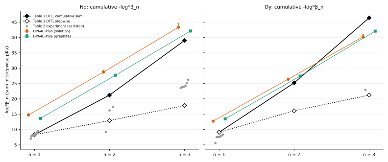

6.5 把论文 pKa 放进我们的 box：预测的占据数 vs MD
用论文 pKa 和 5.2 节同一公式（box 内 3 个 OH−，c1 同 MD）反推平衡占据数。论文 DFT 预测 ⟨n⟩：Dy 1.01（溶液）/ 1.01（石墨）；Nd 1.91（溶液）/ 1.90（石墨）；DPA4C-Plus MD（溶液 / 石墨）：Dy 2.01 / 1.31；Nd 0.48 / 1.18；其它势函数 ⟨n⟩ = 2.93–3.00（OH 基本不离开 Ln）。 Kragten 两种读法给出完全相反的预测（⟨n⟩ ≈ 1 或 3），说明 Table 2 的读法本身就会决定结论。
| 金属 | 体系 | 来源 | 类型 | pKa1 | pKa2 | pKa3 | P0 | P1 | P2 | P3 | ⟨n⟩ |
|---|---|---|---|---|---|---|---|---|---|---|---|
| Nd | 溶液 | Shiery 2021 Table 1（DFT） | 由 pKa 预测 | 8.3 | 12.9 | 17.8 | 1.4×10−7 | 0.086 | 0.914 | 6.1×10−5 | 1.91 |
| Nd | 溶液 | Kragten 1984（Table 2 ref 99），按原值 | 由 pKa 预测 | 8.1 | 16.2 | 24.3 | 9.9×10−7 | 0.995 | 0.005 | 1.1×10−13 | 1.00 |
| Nd | 溶液 | Kragten 1984，按累积常数读（逐步 8.1/8.1/8.1） | 由 pKa 预测 | 8.1 | 8.1 | 8.1 | 4.4×10−18 | 4.4×10−12 | 3.0×10−6 | 1.000 | 3.00 |
| Nd | 溶液 | 本工作：溶液 DPA4C-Plus | MD 占据数（300 K） | — | — | — | 0.687 | 0.162 | 0.136 | 0.015 | 0.48 |
| Nd | 溶液 | 本工作：溶液 DPA4-Pro | MD 占据数（300 K） | — | — | — | 0.000 | 0.000 | 1.0×10−4 | 1.000 | 3.00 |
| Nd | 溶液 | 本工作：溶液 MACE-POLAR-1-M | MD 占据数（300 K） | — | — | — | 0.000 | 0.000 | 0.012 | 0.988 | 2.99 |
| Nd | 溶液 | 本工作：溶液 UMA-s-1.2.1 | MD 占据数（300 K） | — | — | — | 0.000 | 0.000 | 0.000 | 1.000 | 3.00 |
| Nd | 石墨表面 | Shiery 2021 Table 1（DFT） | 由 pKa 预测 | 8.3 | 12.9 | 17.8 | 1.8×10−7 | 0.100 | 0.900 | 5.1×10−5 | 1.90 |
| Nd | 石墨表面 | Kragten 1984（Table 2 ref 99），按原值 | 由 pKa 预测 | 8.1 | 16.2 | 24.3 | 1.2×10−6 | 0.995 | 0.005 | 8.1×10−14 | 1.00 |
| Nd | 石墨表面 | Kragten 1984，按累积常数读（逐步 8.1/8.1/8.1） | 由 pKa 预测 | 8.1 | 8.1 | 8.1 | 7.2×10−18 | 6.1×10−12 | 3.5×10−6 | 1.000 | 3.00 |
| Nd | 石墨表面 | 本工作：石墨表面 DPA4C-Plus | MD 占据数（300 K） | — | — | — | 0.190 | 0.478 | 0.291 | 0.041 | 1.18 |
| Nd | 石墨表面 | 本工作：石墨表面 UMA-s-1.2.1 | MD 占据数（300 K） | — | — | — | 0.000 | 0.002 | 0.024 | 0.974 | 2.97 |
| Dy | 溶液 | Shiery 2021 Table 1（DFT） | 由 pKa 预测 | 9.1 | 16.1 | 21.2 | 9.9×10−6 | 0.993 | 0.007 | 1.8×10−10 | 1.01 |
| Dy | 溶液 | 本工作：溶液 DPA4C-Plus | MD 占据数（300 K） | — | — | — | 0.011 | 0.248 | 0.460 | 0.281 | 2.01 |
| Dy | 溶液 | 本工作：溶液 DPA4-Pro | MD 占据数（300 K） | — | — | — | 0.000 | 0.000 | 0.000 | 1.000 | 3.00 |
| Dy | 溶液 | 本工作：溶液 MACE-POLAR-1-M | MD 占据数（300 K） | — | — | — | 0.000 | 0.000 | 0.000 | 1.000 | 3.00 |
| Dy | 石墨表面 | Shiery 2021 Table 1（DFT） | 由 pKa 预测 | 9.1 | 16.1 | 21.2 | 1.2×10−5 | 0.994 | 0.006 | 1.3×10−10 | 1.01 |
| Dy | 石墨表面 | 本工作：石墨表面 DPA4C-Plus | MD 占据数（300 K） | — | — | — | 0.125 | 0.466 | 0.378 | 0.031 | 1.31 |
| Dy | 石墨表面 | 本工作：石墨表面 UMA-s-1.2.1 | MD 占据数（300 K） | — | — | — | 0.000 | 0.000 | 0.073 | 0.927 | 2.93 |
原始数据：compare_box_occupancy.csv2.2 KB
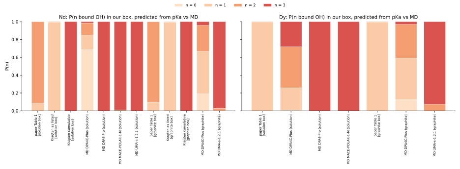

6.6 结构：SI 优化团簇 vs MD（按 Ln 上的 OH 数 n 分开）
论文团簇固定 CN（Nd 9、Dy 8），MD 中 CN 由动力学决定。DPA4C-Plus（300 K）与团簇相比：CN(总) 差 −1.56 … 0.63，⟨Ln–O(水)⟩ 差 −0.011 … 0.129 Å，⟨Ln–O(OH)⟩ 差 −0.095 … 0.104 Å。两者都显示随 n 增加 Ln–O(水) 变长、CN(水) 减少；不同的是 MD 中 CN(总) 从 n = 0 到 3 也减少了 0.31–1.14，而团簇的 CN(总) 按构造固定不变。
| 金属 | nOH | 结构 / 来源 | 占比 | CN(水) | CN(OH) | CN(总) | ⟨Ln–O(水)⟩ (Å) | ⟨Ln–O(OH)⟩ (Å) | ⟨Ln–O⟩ (Å) |
|---|---|---|---|---|---|---|---|---|---|
| Dy | 0 | [Dy(H2O)8]3+ | — | 8.00 | 0.00 | 8.00 | 2.379 | — | 2.379 |
| Dy | 0 | 本工作：石墨表面 DPA4C-Plus | 0.095 | 8.63 | 0.00 | 8.63 | 2.508± 0.135 | — | 2.508 |
| Dy | 0 | 本工作：溶液 DPA4C-Plus | 0.011 | 8.01 | 0.00 | 8.11 | 2.505± 0.135 | — | 2.500 |
| Dy | 1 | [Dy(OH)(H2O)7]2+ | — | 7.00 | 1.00 | 8.00 | 2.449 | 2.094 | 2.405 |
| Dy | 1 | 本工作：石墨表面 DPA4C-Plus | 0.399 | 7.16 | 1.00 | 8.16 | 2.512± 0.129 | 2.188± 0.071 | 2.473 |
| Dy | 1 | 本工作：溶液 DPA4C-Plus | 0.248 | 6.95 | 1.00 | 7.95 | 2.523± 0.131 | 2.198± 0.072 | 2.482 |
| Dy | 2 | [Dy(OH)2(H2O)6]+ | — | 6.00 | 2.00 | 8.00 | 2.492 | 2.171 | 2.412 |
| Dy | 2 | 本工作：石墨表面 DPA4C-Plus | 0.419 | 6.00 | 2.00 | 8.00 | 2.542± 0.130 | 2.201± 0.074 | 2.457 |
| Dy | 2 | 本工作：溶液 DPA4C-Plus | 0.460 | 5.86 | 2.00 | 7.86 | 2.560± 0.139 | 2.209± 0.077 | 2.471 |
| Dy | 3 | [Dy(OH)3(H2O)5]0 | — | 5.00 | 3.00 | 8.00 | 2.562 | 2.223 | 2.435 |
| Dy | 3 | 本工作：石墨表面 DPA4C-Plus | 0.086 | 4.60 | 3.00 | 7.60 | 2.566± 0.141 | 2.214± 0.081 | 2.427 |
| Dy | 3 | 本工作：溶液 DPA4C-Plus | 0.281 | 4.50 | 3.00 | 7.50 | 2.582± 0.145 | 2.224± 0.086 | 2.439 |
| Nd | 0 | [Nd(H2O)9]3+ | — | 9.00 | 0.00 | 9.00 | 2.495 | — | 2.495 |
| Nd | 0 | 本工作：石墨表面 DPA4C-Plus | 0.152 | 8.57 | 0.00 | 8.57 | 2.549± 0.143 | — | 2.549 |
| Nd | 0 | 本工作：溶液 DPA4C-Plus | 0.687 | 8.32 | 0.00 | 8.32 | 2.539± 0.140 | — | 2.539 |
| Nd | 1 | [Nd(OH)(H2O)8]2+ | — | 8.00 | 1.00 | 9.00 | 2.557 | 2.232 | 2.521 |
| Nd | 1 | 本工作：石墨表面 DPA4C-Plus | 0.431 | 7.15 | 1.00 | 8.15 | 2.568± 0.140 | 2.244± 0.080 | 2.528 |
| Nd | 1 | 本工作：溶液 DPA4C-Plus | 0.162 | 7.38 | 1.00 | 8.38 | 2.584± 0.158 | 2.294± 0.097 | 2.550 |
| Nd | 2 | [Nd(OH)2(H2O)7]+ | — | 7.00 | 2.00 | 9.00 | 2.596 | 2.310 | 2.533 |
| Nd | 2 | 本工作：石墨表面 DPA4C-Plus | 0.346 | 5.95 | 2.00 | 7.95 | 2.607± 0.145 | 2.260± 0.086 | 2.519 |
| Nd | 2 | 本工作：溶液 DPA4C-Plus | 0.136 | 6.15 | 2.00 | 8.15 | 2.607± 0.160 | 2.319± 0.102 | 2.537 |
| Nd | 3 | [Nd(OH)3(H2O)6]0 | — | 6.00 | 3.00 | 9.00 | 2.647 | 2.366 | 2.553 |
| Nd | 3 | 本工作：石墨表面 DPA4C-Plus | 0.071 | 4.44 | 3.00 | 7.44 | 2.641± 0.154 | 2.271± 0.090 | 2.491 |
| Nd | 3 | 本工作：溶液 DPA4C-Plus | 0.015 | 5.01 | 3.00 | 8.01 | 2.636± 0.165 | 2.341± 0.103 | 2.525 |
MD 行：t ≥ 10 ps 的帧按当时 Ln 上的 OH 数 n 分组，n 用第 4 节动力学的 rc(OH) 计数，CN(OH) = n；CN(水)、CN(总) 用第 3 节的 REE–O 总截断计数。CN(总) 还包含 CN(其它)（O2−/H3O+；≥ 0.005 的只有 DPA4C-Plus Dy 溶液 300 K n = 0（76 帧，0.09）；其余 ≤ 0.001）和落在 rc(OH) 与总截断之间的 OH（≤ 0.016），所以 水 + OH 可能略小于 总。占比 = 该 n 状态的帧占比；⟨Ln–O⟩ 后的 ± 是分布标准差，不是标准误。团簇行：CN(总) = 3 Å 内的 O 数。
原始数据：compare_structure_by_nOH.csv13 KB · lit_SI_structures_Nd.xyz5.9 KB · lit_SI_structures_Dy.xyz5.2 KB
全部势函数、全部温度的结构表
| 来源 | 体系 | 势函数 | 金属 | T (K) | nOH | 轨迹 | 帧 | 占比 | CN(水) | CN(OH) | CN(其它) | CN(总) | ⟨Ln–O(水)⟩ | ⟨Ln–O(OH)⟩ |
|---|---|---|---|---|---|---|---|---|---|---|---|---|---|---|
| MD | 石墨表面 | DPA4C-Plus | Dy | 300 | 0 | 200 | 133,471 | 0.095 | 8.63 | 0.00 | 0.00 | 8.63 | 2.508 | — |
| MD | 石墨表面 | DPA4C-Plus | Dy | 300 | 1 | 200 | 558,954 | 0.399 | 7.16 | 1.00 | 0.00 | 8.16 | 2.512 | 2.188 |
| MD | 石墨表面 | DPA4C-Plus | Dy | 300 | 2 | 200 | 587,125 | 0.419 | 6.00 | 2.00 | 0.00 | 8.00 | 2.542 | 2.201 |
| MD | 石墨表面 | DPA4C-Plus | Dy | 300 | 3 | 200 | 120,650 | 0.086 | 4.60 | 3.00 | 0.00 | 7.60 | 2.566 | 2.214 |
| MD | 石墨表面 | DPA4C-Plus | Nd | 300 | 0 | 200 | 212,454 | 0.152 | 8.57 | 0.00 | 0.00 | 8.57 | 2.549 | — |
| MD | 石墨表面 | DPA4C-Plus | Nd | 300 | 1 | 200 | 603,363 | 0.431 | 7.15 | 1.00 | 0.00 | 8.15 | 2.568 | 2.244 |
| MD | 石墨表面 | DPA4C-Plus | Nd | 300 | 2 | 200 | 484,395 | 0.346 | 5.95 | 2.00 | 0.00 | 7.95 | 2.607 | 2.260 |
| MD | 石墨表面 | DPA4C-Plus | Nd | 300 | 3 | 200 | 99,988 | 0.071 | 4.44 | 3.00 | 0.00 | 7.44 | 2.641 | 2.271 |
| MD | 石墨表面 | UMA-s-1.2.1 | Dy | 300 | 0 | 121 | 1,147 | 0.004 | 7.98 | 0.00 | 0.00 | 7.98 | 2.597 | — |
| MD | 石墨表面 | UMA-s-1.2.1 | Dy | 300 | 2 | 121 | 27,582 | 0.100 | 5.36 | 2.00 | 0.00 | 7.36 | 2.476 | 2.193 |
| MD | 石墨表面 | UMA-s-1.2.1 | Dy | 300 | 3 | 121 | 247,241 | 0.896 | 3.70 | 3.00 | 0.00 | 6.70 | 2.492 | 2.215 |
| MD | 石墨表面 | UMA-s-1.2.1 | Nd | 300 | 1 | 193 | 1,045 | 0.001 | 7.00 | 1.00 | 0.00 | 8.00 | 2.525 | 2.235 |
| MD | 石墨表面 | UMA-s-1.2.1 | Nd | 300 | 2 | 193 | 43,159 | 0.045 | 5.65 | 2.00 | 0.00 | 7.65 | 2.557 | 2.274 |
| MD | 石墨表面 | UMA-s-1.2.1 | Nd | 300 | 3 | 193 | 905,219 | 0.953 | 4.17 | 3.00 | 0.00 | 7.17 | 2.593 | 2.298 |
| MD | 溶液 | DPA4-Pro | Dy | 300 | 3 | 1 | 7,001 | 1.000 | 3.53 | 3.00 | 0.00 | 6.53 | 2.538 | 2.244 |
| MD | 溶液 | DPA4-Pro | Dy | 350 | 2 | 1 | 1 | 0.000 | 5.00 | 2.00 | 0.00 | 7.00 | 2.528 | 2.228 |
| MD | 溶液 | DPA4-Pro | Dy | 350 | 3 | 1 | 7,000 | 1.000 | 3.67 | 3.00 | 0.00 | 6.67 | 2.549 | 2.256 |
| MD | 溶液 | DPA4-Pro | Dy | 400 | 2 | 1 | 4 | 0.001 | 5.00 | 2.00 | 0.00 | 7.00 | 2.493 | 2.299 |
| MD | 溶液 | DPA4-Pro | Dy | 400 | 3 | 1 | 6,997 | 0.999 | 3.31 | 3.00 | 0.00 | 6.32 | 2.553 | 2.233 |
| MD | 溶液 | DPA4-Pro | Dy | 450 | 2 | 1 | 6 | 0.001 | 4.83 | 2.00 | 0.00 | 6.83 | 2.483 | 2.220 |
| MD | 溶液 | DPA4-Pro | Dy | 450 | 3 | 1 | 6,995 | 0.999 | 3.64 | 3.00 | 0.00 | 6.64 | 2.575 | 2.249 |
| MD | 溶液 | DPA4-Pro | Dy | 500 | 2 | 1 | 8 | 0.001 | 6.00 | 2.00 | 0.00 | 8.00 | 2.660 | 2.280 |
| MD | 溶液 | DPA4-Pro | Dy | 500 | 3 | 1 | 6,993 | 0.999 | 3.65 | 3.00 | 0.00 | 6.65 | 2.584 | 2.252 |
| MD | 溶液 | DPA4-Pro | Nd | 300 | 2 | 1 | 1 | 0.000 | 6.00 | 2.00 | 0.00 | 8.00 | 2.581 | 2.372 |
| MD | 溶液 | DPA4-Pro | Nd | 300 | 3 | 1 | 7,000 | 1.000 | 4.61 | 3.00 | 0.00 | 7.61 | 2.639 | 2.325 |
| MD | 溶液 | DPA4-Pro | Nd | 350 | 2 | 1 | 2 | 0.000 | 5.00 | 2.00 | 0.00 | 7.00 | 2.583 | 2.268 |
| MD | 溶液 | DPA4-Pro | Nd | 350 | 3 | 1 | 6,999 | 1.000 | 4.56 | 3.00 | 0.00 | 7.56 | 2.649 | 2.319 |
| MD | 溶液 | DPA4-Pro | Nd | 400 | 3 | 1 | 7,001 | 1.000 | 4.48 | 3.00 | 0.00 | 7.48 | 2.666 | 2.311 |
| MD | 溶液 | DPA4-Pro | Nd | 450 | 3 | 1 | 7,001 | 1.000 | 4.47 | 3.00 | 0.00 | 7.47 | 2.693 | 2.302 |
| MD | 溶液 | DPA4-Pro | Nd | 500 | 2 | 1 | 2 | 0.000 | 6.00 | 2.00 | 0.00 | 8.00 | 2.616 | 2.345 |
| MD | 溶液 | DPA4-Pro | Nd | 500 | 3 | 1 | 6,998 | 1.000 | 4.25 | 3.00 | 0.00 | 7.25 | 2.698 | 2.292 |
| MD | 溶液 | DPA4-Pro | Nd | 500 | 4 | 1 | 1 | 0.000 | 2.00 | 4.00 | 0.00 | 6.00 | 2.673 | 2.348 |
| MD | 溶液 | DPA4C-Plus | Dy | 300 | 0 | 1 | 76 | 0.011 | 8.01 | 0.00 | 0.09 | 8.11 | 2.505 | — |
| MD | 溶液 | DPA4C-Plus | Dy | 300 | 1 | 1 | 1,737 | 0.248 | 6.95 | 1.00 | 0.00 | 7.95 | 2.523 | 2.198 |
| MD | 溶液 | DPA4C-Plus | Dy | 300 | 2 | 1 | 3,220 | 0.460 | 5.86 | 2.00 | 0.00 | 7.86 | 2.560 | 2.209 |
| MD | 溶液 | DPA4C-Plus | Dy | 300 | 3 | 1 | 1,968 | 0.281 | 4.50 | 3.00 | 0.00 | 7.50 | 2.582 | 2.224 |
| MD | 溶液 | DPA4C-Plus | Dy | 350 | 0 | 1 | 2 | 0.000 | 8.00 | 0.00 | 0.00 | 8.00 | 2.491 | — |
| MD | 溶液 | DPA4C-Plus | Dy | 350 | 1 | 1 | 972 | 0.139 | 6.99 | 1.00 | 0.00 | 7.99 | 2.531 | 2.187 |
| MD | 溶液 | DPA4C-Plus | Dy | 350 | 2 | 1 | 3,061 | 0.437 | 5.85 | 2.00 | 0.00 | 7.85 | 2.567 | 2.202 |
| MD | 溶液 | DPA4C-Plus | Dy | 350 | 3 | 1 | 2,966 | 0.424 | 4.21 | 3.00 | 0.00 | 7.21 | 2.575 | 2.213 |
| MD | 溶液 | DPA4C-Plus | Dy | 400 | 0 | 1 | 17 | 0.002 | 7.94 | 0.00 | 0.00 | 7.94 | 2.514 | — |
| MD | 溶液 | DPA4C-Plus | Dy | 400 | 1 | 1 | 624 | 0.089 | 7.13 | 1.00 | 0.00 | 8.13 | 2.546 | 2.192 |
| MD | 溶液 | DPA4C-Plus | Dy | 400 | 2 | 1 | 3,940 | 0.563 | 5.77 | 2.00 | 0.00 | 7.77 | 2.573 | 2.196 |
| MD | 溶液 | DPA4C-Plus | Dy | 400 | 3 | 1 | 2,420 | 0.346 | 4.03 | 3.00 | 0.00 | 7.03 | 2.581 | 2.202 |
| MD | 溶液 | DPA4C-Plus | Dy | 450 | 0 | 1 | 48 | 0.007 | 8.00 | 0.00 | 0.00 | 8.00 | 2.499 | — |
| MD | 溶液 | DPA4C-Plus | Dy | 450 | 1 | 1 | 592 | 0.085 | 6.97 | 1.00 | 0.00 | 7.97 | 2.551 | 2.175 |
| MD | 溶液 | DPA4C-Plus | Dy | 450 | 2 | 1 | 2,813 | 0.402 | 5.73 | 2.00 | 0.00 | 7.73 | 2.583 | 2.190 |
| MD | 溶液 | DPA4C-Plus | Dy | 450 | 3 | 1 | 3,548 | 0.507 | 4.18 | 3.00 | 0.00 | 7.18 | 2.611 | 2.200 |
| MD | 溶液 | DPA4C-Plus | Dy | 500 | 1 | 1 | 81 | 0.012 | 6.91 | 1.00 | 0.00 | 7.91 | 2.565 | 2.158 |
| MD | 溶液 | DPA4C-Plus | Dy | 500 | 2 | 1 | 2,564 | 0.366 | 5.71 | 2.00 | 0.00 | 7.71 | 2.599 | 2.184 |
| MD | 溶液 | DPA4C-Plus | Dy | 500 | 3 | 1 | 4,356 | 0.622 | 4.17 | 3.00 | 0.00 | 7.17 | 2.617 | 2.202 |
| MD | 溶液 | DPA4C-Plus | Nd | 300 | 0 | 1 | 4,807 | 0.687 | 8.32 | 0.00 | 0.00 | 8.32 | 2.539 | — |
| MD | 溶液 | DPA4C-Plus | Nd | 300 | 1 | 1 | 1,134 | 0.162 | 7.38 | 1.00 | 0.00 | 8.38 | 2.584 | 2.294 |
| MD | 溶液 | DPA4C-Plus | Nd | 300 | 2 | 1 | 955 | 0.136 | 6.15 | 2.00 | 0.00 | 8.15 | 2.607 | 2.319 |
| MD | 溶液 | DPA4C-Plus | Nd | 300 | 3 | 1 | 105 | 0.015 | 5.01 | 3.00 | 0.00 | 8.01 | 2.636 | 2.341 |
| MD | 溶液 | DPA4C-Plus | Nd | 350 | 0 | 1 | 930 | 0.133 | 8.42 | 0.00 | 0.00 | 8.42 | 2.553 | — |
| MD | 溶液 | DPA4C-Plus | Nd | 350 | 1 | 1 | 4,495 | 0.642 | 7.19 | 1.00 | 0.00 | 8.19 | 2.581 | 2.262 |
| MD | 溶液 | DPA4C-Plus | Nd | 350 | 2 | 1 | 1,389 | 0.198 | 5.93 | 2.00 | 0.00 | 7.93 | 2.610 | 2.283 |
| MD | 溶液 | DPA4C-Plus | Nd | 350 | 3 | 1 | 187 | 0.027 | 4.72 | 3.00 | 0.00 | 7.72 | 2.659 | 2.306 |
| MD | 溶液 | DPA4C-Plus | Nd | 400 | 0 | 1 | 597 | 0.085 | 8.60 | 0.00 | 0.00 | 8.60 | 2.570 | — |
| MD | 溶液 | DPA4C-Plus | Nd | 400 | 1 | 1 | 4,004 | 0.572 | 7.33 | 1.00 | 0.00 | 8.33 | 2.602 | 2.253 |
| MD | 溶液 | DPA4C-Plus | Nd | 400 | 2 | 1 | 2,157 | 0.308 | 6.07 | 2.00 | 0.00 | 8.06 | 2.636 | 2.274 |
| MD | 溶液 | DPA4C-Plus | Nd | 400 | 3 | 1 | 243 | 0.035 | 4.68 | 3.00 | 0.00 | 7.68 | 2.683 | 2.286 |
| MD | 溶液 | DPA4C-Plus | Nd | 450 | 0 | 1 | 178 | 0.025 | 8.53 | 0.00 | 0.00 | 8.53 | 2.573 | — |
| MD | 溶液 | DPA4C-Plus | Nd | 450 | 1 | 1 | 2,150 | 0.307 | 7.17 | 1.00 | 0.00 | 8.18 | 2.603 | 2.240 |
| MD | 溶液 | DPA4C-Plus | Nd | 450 | 2 | 1 | 3,661 | 0.523 | 5.83 | 2.00 | 0.00 | 7.83 | 2.633 | 2.259 |
| MD | 溶液 | DPA4C-Plus | Nd | 450 | 3 | 1 | 1,012 | 0.145 | 4.63 | 3.00 | 0.00 | 7.63 | 2.676 | 2.285 |
| MD | 溶液 | DPA4C-Plus | Nd | 500 | 0 | 1 | 197 | 0.028 | 8.36 | 0.00 | 0.00 | 8.37 | 2.569 | — |
| MD | 溶液 | DPA4C-Plus | Nd | 500 | 1 | 1 | 2,221 | 0.317 | 7.24 | 1.00 | 0.00 | 8.24 | 2.619 | 2.229 |
| MD | 溶液 | DPA4C-Plus | Nd | 500 | 2 | 1 | 4,306 | 0.615 | 5.92 | 2.00 | 0.00 | 7.92 | 2.659 | 2.250 |
| MD | 溶液 | DPA4C-Plus | Nd | 500 | 3 | 1 | 277 | 0.040 | 4.77 | 3.00 | 0.00 | 7.77 | 2.710 | 2.284 |
| MD | 溶液 | MACE-POLAR-1-M | Dy | 300 | 3 | 1 | 7,001 | 1.000 | 4.06 | 3.00 | 0.00 | 7.06 | 2.486 | 2.218 |
| MD | 溶液 | MACE-POLAR-1-M | Dy | 350 | 2 | 1 | 6 | 0.001 | 6.00 | 2.00 | 0.00 | 8.00 | 2.473 | 2.254 |
| MD | 溶液 | MACE-POLAR-1-M | Dy | 350 | 3 | 1 | 6,995 | 0.999 | 3.69 | 3.00 | 0.00 | 6.69 | 2.498 | 2.193 |
| MD | 溶液 | MACE-POLAR-1-M | Dy | 400 | 2 | 1 | 4 | 0.001 | 5.00 | 2.00 | 0.00 | 7.00 | 2.475 | 2.195 |
| MD | 溶液 | MACE-POLAR-1-M | Dy | 400 | 3 | 1 | 6,997 | 0.999 | 3.62 | 3.00 | 0.00 | 6.62 | 2.503 | 2.188 |
| MD | 溶液 | MACE-POLAR-1-M | Dy | 450 | 2 | 1 | 9 | 0.001 | 4.56 | 2.00 | 0.00 | 6.56 | 2.434 | 2.165 |
| MD | 溶液 | MACE-POLAR-1-M | Dy | 450 | 3 | 1 | 6,992 | 0.999 | 3.61 | 3.00 | 0.00 | 6.61 | 2.511 | 2.185 |
| MD | 溶液 | MACE-POLAR-1-M | Dy | 500 | 2 | 1 | 44 | 0.006 | 5.48 | 2.00 | 0.00 | 7.48 | 2.508 | 2.176 |
| MD | 溶液 | MACE-POLAR-1-M | Dy | 500 | 3 | 1 | 6,957 | 0.994 | 3.99 | 3.00 | 0.00 | 6.99 | 2.553 | 2.192 |
| MD | 溶液 | MACE-POLAR-1-M | Nd | 300 | 2 | 1 | 82 | 0.012 | 6.00 | 2.00 | 0.00 | 8.00 | 2.566 | 2.291 |
| MD | 溶液 | MACE-POLAR-1-M | Nd | 300 | 3 | 1 | 6,919 | 0.988 | 5.00 | 3.00 | 0.00 | 8.00 | 2.617 | 2.329 |
| MD | 溶液 | MACE-POLAR-1-M | Nd | 350 | 2 | 1 | 132 | 0.019 | 6.06 | 2.00 | 0.00 | 8.06 | 2.583 | 2.300 |
| MD | 溶液 | MACE-POLAR-1-M | Nd | 350 | 3 | 1 | 6,869 | 0.981 | 4.87 | 3.00 | 0.00 | 7.87 | 2.634 | 2.316 |
| MD | 溶液 | MACE-POLAR-1-M | Nd | 400 | 2 | 1 | 121 | 0.017 | 5.98 | 2.00 | 0.00 | 7.98 | 2.584 | 2.282 |
| MD | 溶液 | MACE-POLAR-1-M | Nd | 400 | 3 | 1 | 6,880 | 0.983 | 4.70 | 3.00 | 0.00 | 7.70 | 2.649 | 2.301 |
| MD | 溶液 | MACE-POLAR-1-M | Nd | 450 | 2 | 1 | 59 | 0.008 | 5.97 | 2.00 | 0.00 | 7.97 | 2.594 | 2.285 |
| MD | 溶液 | MACE-POLAR-1-M | Nd | 450 | 3 | 1 | 6,942 | 0.992 | 4.55 | 3.00 | 0.00 | 7.55 | 2.655 | 2.294 |
| MD | 溶液 | MACE-POLAR-1-M | Nd | 500 | 2 | 1 | 56 | 0.008 | 5.66 | 2.00 | 0.00 | 7.66 | 2.607 | 2.244 |
| MD | 溶液 | MACE-POLAR-1-M | Nd | 500 | 3 | 1 | 6,945 | 0.992 | 4.47 | 3.00 | 0.00 | 7.47 | 2.662 | 2.287 |
| MD | 溶液 | UMA-s-1.2.1 | Nd | 300 | 3 | 1 | 7,001 | 1.000 | 4.21 | 3.00 | 0.00 | 7.21 | 2.606 | 2.301 |
| MD | 溶液 | UMA-s-1.2.1 | Nd | 350 | 2 | 1 | 82 | 0.012 | 6.12 | 2.00 | 0.00 | 8.12 | 2.604 | 2.280 |
| MD | 溶液 | UMA-s-1.2.1 | Nd | 350 | 3 | 1 | 6,919 | 0.988 | 4.32 | 3.00 | 0.00 | 7.32 | 2.639 | 2.294 |
| MD | 溶液 | UMA-s-1.2.1 | Nd | 400 | 3 | 1 | 7,001 | 1.000 | 4.21 | 3.00 | 0.00 | 7.21 | 2.642 | 2.289 |
| MD | 溶液 | UMA-s-1.2.1 | Nd | 450 | 2 | 1 | 3 | 0.000 | 6.00 | 2.00 | 0.00 | 8.00 | 2.598 | 2.257 |
| MD | 溶液 | UMA-s-1.2.1 | Nd | 450 | 3 | 1 | 6,998 | 1.000 | 4.23 | 3.00 | 0.00 | 7.23 | 2.658 | 2.286 |
| Shiery 2021 SI 优化团簇 | DFT 团簇（M06 + CPCM） | DFT | Nd | — | 0 | — | — | — | 9.00 | 0.00 | 0.00 | 9.00 | 2.495 | — |
| Shiery 2021 SI 优化团簇 | DFT 团簇（M06 + CPCM） | DFT | Nd | — | 1 | — | — | — | 8.00 | 1.00 | 0.00 | 9.00 | 2.557 | 2.232 |
| Shiery 2021 SI 优化团簇 | DFT 团簇（M06 + CPCM） | DFT | Nd | — | 2 | — | — | — | 7.00 | 2.00 | 0.00 | 9.00 | 2.596 | 2.310 |
| Shiery 2021 SI 优化团簇 | DFT 团簇（M06 + CPCM） | DFT | Nd | — | 3 | — | — | — | 6.00 | 3.00 | 0.00 | 9.00 | 2.647 | 2.366 |
| Shiery 2021 SI 优化团簇 | DFT 团簇（M06 + CPCM） | DFT | Dy | — | 0 | — | — | — | 8.00 | 0.00 | 0.00 | 8.00 | 2.379 | — |
| Shiery 2021 SI 优化团簇 | DFT 团簇（M06 + CPCM） | DFT | Dy | — | 1 | — | — | — | 7.00 | 1.00 | 0.00 | 8.00 | 2.449 | 2.094 |
| Shiery 2021 SI 优化团簇 | DFT 团簇（M06 + CPCM） | DFT | Dy | — | 2 | — | — | — | 6.00 | 2.00 | 0.00 | 8.00 | 2.492 | 2.171 |
| Shiery 2021 SI 优化团簇 | DFT 团簇（M06 + CPCM） | DFT | Dy | — | 3 | — | — | — | 5.00 | 3.00 | 0.00 | 8.00 | 2.562 | 2.223 |
SI 中 15 个 Ln × 4 个优化结构的几何指标
| Ln | 结构 | 原子数 | nOH（标签 / 几何） | 水 | CN (≤ 3 Å) | ⟨Ln–O(水)⟩ [最小, 最大] | ⟨Ln–O(OH)⟩ [最小, 最大] | ⟨Ln–O⟩ | 最长 O–H |
|---|---|---|---|---|---|---|---|---|---|
| La | [La(H2O)9]3+ | 28 | 0 / 0 | 9 | 9 | 2.559[2.544, 2.589] | — | 2.559 | 0.963 |
| La | [La(OH)(H2O)8]2+ | 27 | 1 / 1 | 8 | 9 | 2.623[2.585, 2.656] | 2.261[2.261, 2.261] | 2.583 | 0.970 |
| La | [La(OH)2(H2O)7]+ | 26 | 2 / 2 | 7 | 9 | 2.669[2.592, 2.738] | 2.357[2.353, 2.360] | 2.599 | 0.980 |
| La | [La(OH)3(H2O)6]0 | 25 | 3 / 3 | 6 | 9 | 2.740[2.720, 2.762] | 2.409[2.368, 2.450] | 2.630 | 0.988 |
| Ce | [Ce(H2O)9]3+ | 28 | 0 / 0 | 9 | 9 | 2.533[2.513, 2.571] | — | 2.533 | 0.963 |
| Ce | [Ce(OH)(H2O)8]2+ | 27 | 1 / 1 | 8 | 9 | 2.591[2.567, 2.620] | 2.272[2.272, 2.272] | 2.555 | 0.974 |
| Ce | [Ce(OH)2(H2O)7]+ | 26 | 2 / 2 | 7 | 9 | 2.637[2.566, 2.706] | 2.328[2.320, 2.336] | 2.568 | 0.981 |
| Ce | [Ce(OH)3(H2O)6]0 | 25 | 3 / 3 | 6 | 9 | 2.694[2.682, 2.704] | 2.385[2.326, 2.454] | 2.591 | 0.991 |
| Pr | [Pr(H2O)9]3+ | 28 | 0 / 0 | 9 | 9 | 2.513[2.493, 2.555] | — | 2.513 | 0.963 |
| Pr | [Pr(OH)(H2O)8]2+ | 27 | 1 / 1 | 8 | 9 | 2.577[2.545, 2.600] | 2.238[2.238, 2.238] | 2.539 | 0.973 |
| Pr | [Pr(OH)2(H2O)7]+ | 26 | 2 / 2 | 7 | 9 | 2.616[2.534, 2.674] | 2.317[2.307, 2.327] | 2.550 | 0.980 |
| Pr | [Pr(OH)3(H2O)6]0 | 25 | 3 / 3 | 6 | 9 | 2.680[2.670, 2.691] | 2.365[2.327, 2.422] | 2.575 | 0.991 |
| Nd | [Nd(H2O)9]3+ | 28 | 0 / 0 | 9 | 9 | 2.495[2.476, 2.534] | — | 2.495 | 0.963 |
| Nd | [Nd(OH)(H2O)8]2+ | 27 | 1 / 1 | 8 | 9 | 2.557[2.525, 2.578] | 2.232[2.232, 2.232] | 2.521 | 0.973 |
| Nd | [Nd(OH)2(H2O)7]+ | 26 | 2 / 2 | 7 | 9 | 2.596[2.542, 2.648] | 2.310[2.261, 2.358] | 2.533 | 0.983 |
| Nd | [Nd(OH)3(H2O)6]0 | 25 | 3 / 3 | 6 | 9 | 2.647[2.619, 2.667] | 2.366[2.344, 2.408] | 2.553 | 0.989 |
| Pm | [Pm(H2O)9]3+ | 28 | 0 / 0 | 9 | 9 | 2.481[2.462, 2.510] | — | 2.481 | 0.963 |
| Pm | [Pm(OH)(H2O)8]2+ | 27 | 1 / 1 | 8 | 9 | 2.544[2.511, 2.572] | 2.200[2.200, 2.200] | 2.506 | 0.970 |
| Pm | [Pm(OH)2(H2O)7]+ | 26 | 2 / 2 | 7 | 9 | 2.582[2.502, 2.654] | 2.296[2.272, 2.321] | 2.519 | 0.982 |
| Pm | [Pm(OH)3(H2O)6]0 | 25 | 3 / 3 | 6 | 9 | 2.633[2.585, 2.665] | 2.356[2.304, 2.428] | 2.541 | 0.991 |
| Sm | [Sm(H2O)9]3+ | 28 | 0 / 0 | 9 | 9 | 2.468[2.450, 2.504] | — | 2.468 | 0.963 |
| Sm | [Sm(OH)(H2O)8]2+ | 27 | 1 / 1 | 8 | 9 | 2.534[2.495, 2.583] | 2.187[2.187, 2.187] | 2.495 | 0.969 |
| Sm | [Sm(OH)2(H2O)7]+ | 26 | 2 / 2 | 7 | 9 | 2.566[2.486, 2.653] | 2.290[2.286, 2.294] | 2.505 | 0.982 |
| Sm | [Sm(OH)3(H2O)6]0 | 25 | 3 / 3 | 6 | 9 | 2.619[2.584, 2.662] | 2.344[2.296, 2.426] | 2.528 | 0.992 |
| Eu | [Eu(H2O)8]3+ | 25 | 0 / 0 | 8 | 8 | 2.412[2.406, 2.421] | — | 2.412 | 0.963 |
| Eu | [Eu(OH)(H2O)7]2+ | 24 | 1 / 1 | 7 | 8 | 2.482[2.453, 2.523] | 2.124[2.124, 2.124] | 2.437 | 0.963 |
| Eu | [Eu(OH)2(H2O)6]+ | 23 | 2 / 2 | 6 | 8 | 2.516[2.475, 2.564] | 2.214[2.181, 2.247] | 2.441 | 0.978 |
| Eu | [Eu(OH)3(H2O)5]0 | 22 | 3 / 3 | 5 | 8 | 2.578[2.518, 2.627] | 2.264[2.185, 2.310] | 2.460 | 0.985 |
| Gd | [Gd(H2O)8]3+ | 25 | 0 / 0 | 8 | 8 | 2.421[2.419, 2.426] | — | 2.421 | 0.964 |
| Gd | [Gd(OH)(H2O)7]2+ | 24 | 1 / 1 | 7 | 8 | 2.490[2.451, 2.579] | 2.143[2.143, 2.143] | 2.447 | 0.963 |
| Gd | [Gd(OH)2(H2O)6]+ | 23 | 2 / 2 | 6 | 8 | 2.521[2.474, 2.595] | 2.251[2.180, 2.322] | 2.454 | 0.984 |
| Gd | [Gd(OH3)(H2O)5]0 | 22 | 3 / 3 | 5 | 8 | 2.594[2.547, 2.689] | 2.279[2.174, 2.341] | 2.475 | 0.985 |
| Tb | [Tb(H2O)8]3+ | 25 | 0 / 0 | 8 | 8 | 2.394[2.380, 2.434] | — | 2.394 | 0.963 |
| Tb | [Tb(OH)(H2O)7]2+ | 24 | 1 / 1 | 7 | 8 | 2.471[2.432, 2.558] | 2.089[2.089, 2.089] | 2.423 | 0.963 |
| Tb | [Tb(OH)2(H2O)6]+ | 23 | 2 / 2 | 6 | 8 | 2.505[2.443, 2.578] | 2.194[2.151, 2.237] | 2.427 | 0.978 |
| Tb | [Tb(OH)3(H2O)5]0 | 22 | 3 / 3 | 5 | 8 | 2.586[2.530, 2.634] | 2.230[2.143, 2.284] | 2.453 | 0.983 |
| Dy | [Dy(H2O)8]3+ | 25 | 0 / 0 | 8 | 8 | 2.379[2.345, 2.422] | — | 2.379 | 0.963 |
| Dy | [Dy(OH)(H2O)7]2+ | 24 | 1 / 1 | 7 | 8 | 2.449[2.412, 2.525] | 2.094[2.094, 2.094] | 2.405 | 0.963 |
| Dy | [Dy(OH)2(H2O)6]+ | 23 | 2 / 2 | 6 | 8 | 2.492[2.446, 2.579] | 2.171[2.169, 2.172] | 2.412 | 0.977 |
| Dy | [Dy(OH)3(H2O)5]0 | 22 | 3 / 3 | 5 | 8 | 2.562[2.505, 2.683] | 2.223[2.145, 2.263] | 2.435 | 0.984 |
| Ho | [Ho(H2O)8]3+ | 25 | 0 / 0 | 8 | 8 | 2.356[2.346, 2.368] | — | 2.356 | 0.963 |
| Ho | [Ho(OH)(H2O)7]2+ | 24 | 1 / 1 | 7 | 8 | 2.421[2.378, 2.478] | 2.097[2.097, 2.097] | 2.381 | 0.964 |
| Ho | [Ho(OH)2(H2O)6]+ | 23 | 2 / 2 | 6 | 8 | 2.455[2.396, 2.500] | 2.186[2.151, 2.221] | 2.388 | 0.978 |
| Ho | [Ho(OH)3(H2O)5]0 | 22 | 3 / 3 | 5 | 8 | 2.516[2.448, 2.591] | 2.225[2.147, 2.268] | 2.407 | 0.985 |
| Er | [Er(H2O)8]3+ | 25 | 0 / 0 | 8 | 8 | 2.344[2.329, 2.358] | — | 2.344 | 0.963 |
| Er | [Er(OH)(H2O)7]2+ | 24 | 1 / 1 | 7 | 8 | 2.409[2.354, 2.494] | 2.091[2.091, 2.091] | 2.370 | 0.964 |
| Er | [Er(OH)2(H2O)6]+ | 23 | 2 / 2 | 6 | 8 | 2.441[2.391, 2.491] | 2.176[2.138, 2.214] | 2.375 | 0.978 |
| Er | [Er(OH)3(H2O)5]0 | 22 | 3 / 3 | 5 | 8 | 2.505[2.443, 2.559] | 2.212[2.138, 2.264] | 2.395 | 0.985 |
| Tm | [Tm(H2O)8]3+ | 25 | 0 / 0 | 8 | 8 | 2.332[2.327, 2.336] | — | 2.332 | 0.963 |
| Tm | [Tm(OH)(H2O)7]2+ | 24 | 1 / 1 | 7 | 8 | 2.395[2.346, 2.449] | 2.083[2.083, 2.083] | 2.356 | 0.963 |
| Tm | [Tm(OH)2(H2O)6]+ | 23 | 2 / 2 | 6 | 8 | 2.429[2.382, 2.475] | 2.168[2.138, 2.197] | 2.364 | 0.979 |
| Tm | [Tm(OH)3(H2O)5]0 | 22 | 3 / 3 | 5 | 8 | 2.494[2.428, 2.532] | 2.204[2.132, 2.244] | 2.385 | 0.985 |
| Yb | [Yb(H2O)8]3+ | 25 | 0 / 0 | 8 | 8 | 2.321[2.313, 2.331] | — | 2.321 | 0.963 |
| Yb | [Yb(OH)(H2O)7]2+ | 24 | 1 / 1 | 7 | 8 | 2.382[2.339, 2.461] | 2.081[2.081, 2.081] | 2.345 | 0.964 |
| Yb | [Yb(OH)2(H2O)6]+ | 23 | 2 / 2 | 6 | 8 | 2.415[2.364, 2.473] | 2.163[2.127, 2.198] | 2.352 | 0.979 |
| Yb | [Yb(OH)3(H2O)5]0 | 22 | 3 / 3 | 5 | 8 | 2.481[2.415, 2.546] | 2.194[2.127, 2.233] | 2.374 | 0.984 |
| Lu | [Lu(H2O)8]3+ | 25 | 0 / 0 | 8 | 8 | 2.312[2.307, 2.317] | — | 2.312 | 0.963 |
| Lu | [Lu(OH)(H2O)7]2+ | 24 | 1 / 1 | 7 | 8 | 2.373[2.326, 2.457] | 2.073[2.073, 2.073] | 2.335 | 0.963 |
| Lu | [Lu(OH)2(H2O)6]+ | 23 | 2 / 2 | 6 | 8 | 2.404[2.357, 2.458] | 2.154[2.119, 2.189] | 2.342 | 0.980 |
| Lu | [Lu(OH)3(H2O)5]0 | 22 | 3 / 3 | 5 | 8 | 2.474[2.411, 2.545] | 2.184[2.113, 2.224] | 2.365 | 0.985 |
结构名称照抄 SI 原文（[Gd(OH3)(H2O)5]0 是 SI 中的写法，即 nOH = 3）。
原始数据：lit_SI_structures_metrics.csv5.5 KB
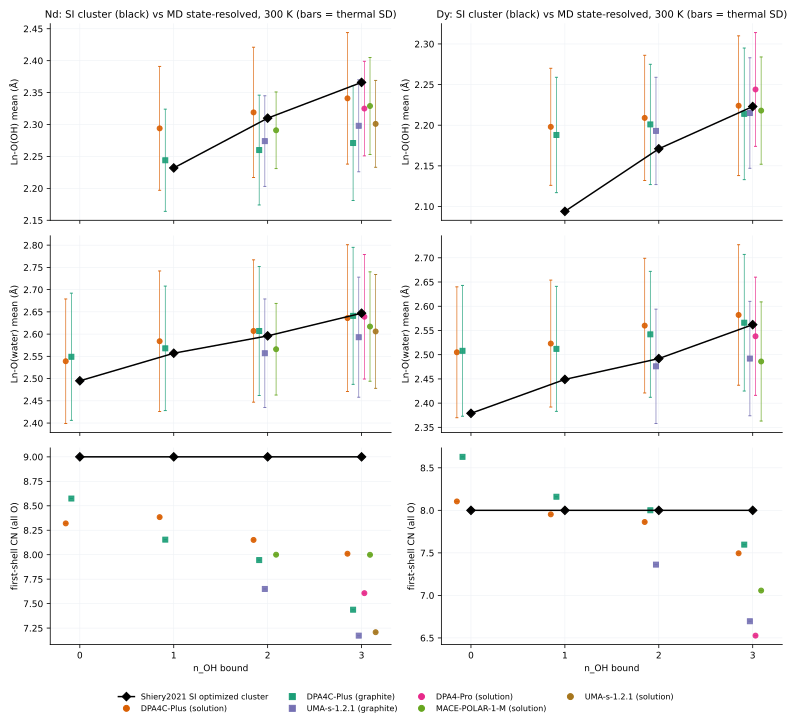

6.7 第一步 PMF：论文没有能垒
SI 图 S1–S15 给出第一步水解沿 r(O–H) 0.99 → 1.40 Å 的 PMF：单调上升，没有过渡态。15 个 Ln 的 PMF 终点换算成 pKa 后与 Table 1 pKa1 最多相差 0.05，即 Table 1 的 ΔG1 就是 PMF 终点。 因此论文里不存在可与我们 ΔG‡ / Ea 对比的量。下表把第一步的论文热力学与我们的热力学和能垒并列，方便比较量级：MD 第一步的 ΔG‡ 为 7.0–12.2 kJ/mol（不计入事件数 N < 5 的：Dy 溶液 3.5（N = 1）、Dy 溶液 13.3（N = 1）），论文 ΔG1 为 47.4–51.9 kJ/mol，MD 的 ΔG1 等效值为 73.2–84.6 kJ/mol。
| 金属 | 来源 | 量 | kJ/mol | T (K) | 说明 |
|---|---|---|---|---|---|
| Nd | Shiery 2021 SI 第一步 PMF | PMF 终点 − 起点（脱质子自由能） | 47.22 | 298.15 | 单调上升（9 个点，最小增量 3.68 kJ/mol）：没有能垒，无法定义活化能；由终点得 pKa = 8.27 |
| Nd | Shiery 2021 Table 1（DFT） | ΔG1（酸解离，第 1 步） | 47.38 | 298.15 | Table 1 |
| Nd | 本工作：溶液 DPA4C-Plus | ΔG1 等效 = RT ln10 · pKa1(等效) | 84.60[82.59, 87.19] | 300 | 两个状态的 committed 停留都 ≥ 1 ps |
| Nd | 本工作：溶液 DPA4C-Plus | ΔG‡：失 OH 1→0（第 1 步逆向） | 6.99[5.11, 9.15] | 300 | 表观 Eyring 能垒，N = 8；论文无对应量 |
| Nd | 本工作：溶液 DPA4C-Plus | ΔG‡：得 OH 0→1（第 1 步正向） | 11.10[9.30, 13.38] | 300 | 表观 Eyring 能垒，N = 7；论文无对应量 |
| Nd | 本工作：石墨表面 DPA4C-Plus | ΔG1 等效 = RT ln10 · pKa1(等效) | 78.28[77.88, 78.68] | 300 | 两个状态的 committed 停留都 ≥ 1 ps |
| Nd | 本工作：石墨表面 DPA4C-Plus | ΔG‡：失 OH 1→0（第 1 步逆向） | 10.51[10.24, 10.81] | 300 | 表观 Eyring 能垒，N = 1108；论文无对应量 |
| Nd | 本工作：石墨表面 DPA4C-Plus | ΔG‡：得 OH 0→1（第 1 步正向） | 7.70[7.36, 8.00] | 300 | 表观 Eyring 能垒，N = 1096；论文无对应量 |
| Dy | Shiery 2021 SI 第一步 PMF | PMF 终点 − 起点（脱质子自由能） | 51.87 | 298.15 | 单调上升（9 个点，最小增量 3.10 kJ/mol）：没有能垒，无法定义活化能；由终点得 pKa = 9.09 |
| Dy | Shiery 2021 Table 1（DFT） | ΔG1（酸解离，第 1 步） | 51.94 | 298.15 | Table 1 |
| Dy | 本工作：溶液 DPA4C-Plus | ΔG1 等效 = RT ln10 · pKa1(等效) | 73.17[70.99, 74.66] | 300 | 其中一个状态 committed 停留 < 1 ps（瞬态），可信度低 |
| Dy | 本工作：溶液 DPA4C-Plus | ΔG‡：失 OH 1→0（第 1 步逆向） | 13.33[9.05, ∞] | 300 | 表观 Eyring 能垒，N = 1；论文无对应量 |
| Dy | 本工作：溶液 DPA4C-Plus | ΔG‡：得 OH 0→1（第 1 步正向） | 3.54[−0.75, 12.70] | 300 | 表观 Eyring 能垒，N = 1；论文无对应量 |
| Dy | 本工作：石墨表面 DPA4C-Plus | ΔG1 等效 = RT ln10 · pKa1(等效) | 77.31[76.79, 77.77] | 300 | 两个状态的 committed 停留都 ≥ 1 ps |
| Dy | 本工作：石墨表面 DPA4C-Plus | ΔG‡：失 OH 1→0（第 1 步逆向） | 12.23[11.95, 12.53] | 300 | 表观 Eyring 能垒，N = 506；论文无对应量 |
| Dy | 本工作：石墨表面 DPA4C-Plus | ΔG‡：得 OH 0→1（第 1 步正向） | 8.67[8.20, 9.10] | 300 | 表观 Eyring 能垒，N = 479；论文无对应量 |
原始数据：compare_PMF_step1.csv2.5 KB
PMF 终点复核（全部 15 个 Ln）
| Ln | 点数 | r(O–H) 起点 (Å) | 终点 (Å) | ΔG 起点 | ΔG 终点 | 终点 − 起点 | pKa（PMF 终点） | pKa1（Table 1） | 差 |
|---|---|---|---|---|---|---|---|---|---|
| La | 9 | 0.999 | 1.395 | 0.19 | 48.00 | 47.80 | 8.37 | 8.4 | −0.03 |
| Ce | 9 | 1.010 | 1.399 | 0.19 | 50.32 | 50.13 | 8.78 | 8.8 | −0.02 |
| Pr | 9 | 0.979 | 1.399 | 0.19 | 51.67 | 51.48 | 9.02 | 9.0 | +0.02 |
| Nd | 9 | 0.989 | 1.399 | 0.19 | 47.42 | 47.22 | 8.27 | 8.3 | −0.03 |
| Pm | 9 | 0.999 | 1.399 | 0.19 | 49.93 | 49.74 | 8.71 | 8.7 | +0.01 |
| Sm | 9 | 0.969 | 1.399 | 0.19 | 39.87 | 39.67 | 6.95 | 7.0 | −0.05 |
| Eu | 9 | 0.989 | 1.399 | 0.19 | 57.87 | 57.67 | 10.10 | 10.1 | 0.00 |
| Gd | 9 | 0.979 | 1.399 | 0.19 | 48.19 | 48.00 | 8.41 | 8.4 | +0.01 |
| Tb | 9 | 0.999 | 1.399 | 0.19 | 52.45 | 52.25 | 9.15 | 9.1 | +0.05 |
| Dy | 9 | 1.009 | 1.399 | 0.19 | 52.06 | 51.87 | 9.09 | 9.1 | −0.01 |
| Ho | 9 | 0.999 | 1.399 | 0.19 | 48.19 | 48.00 | 8.41 | 8.4 | +0.01 |
| Er | 9 | 0.959 | 1.399 | 0.19 | 41.42 | 41.22 | 7.22 | 7.2 | +0.02 |
| Tm | 9 | 0.989 | 1.399 | 0.19 | 51.09 | 50.90 | 8.92 | 8.9 | +0.02 |
| Yb | 9 | 0.989 | 1.399 | 0.19 | 46.84 | 46.64 | 8.17 | 8.2 | −0.03 |
| Lu | 9 | 1.021 | 1.399 | 0.19 | 45.09 | 44.90 | 7.87 | 7.9 | −0.03 |
原始数据：lit_SI_PMF_endpoint_check.csv793 B · lit_SI_PMF_first_hydrolysis_digitized.csv3.9 KB
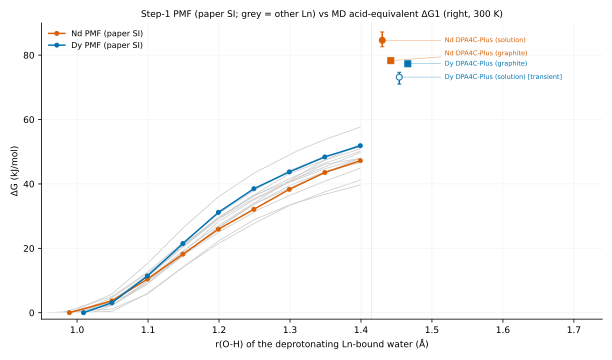

6.8 SI Table S1、S2
| Ln | 4f 电子组态 | 自旋多重度 |
|---|---|---|
| La | 5s2 5p6 | 1 |
| Ce | 4f1 | 2 |
| Pr | 4f2 | 3 |
| Nd | 4f3 | 4 |
| Pm | 4f4 | 5 |
| Sm | 4f5 | 6 |
| Eu | 4f6 | 7 |
| Gd | 4f7 | 8 |
| Tb | 4f8 | 7 |
| Dy | 4f9 | 6 |
| Ho | 4f10 | 5 |
| Er | 4f11 | 4 |
| Tm | 4f12 | 3 |
| Yb | 4f13 | 2 |
| Lu | 4f14 | 1 |
原始数据：lit_tableS1_multiplicity.csv201 B
| Ln | pKa2 MAD | pKa3 MAD | ||
|---|---|---|---|---|
| 正文 | ma-def2-TZVPP 优化 | 正文 | ma-def2-TZVPP 优化 | |
| La | 4.5 | 5.5 | 7.1 | 8.6 |
| Ce | 0.8 | 5.1 | 5.3 | 5.9 |
| Pr | — | — | 4.9 | 9.6 |
| Nd | 3.8 | 4.0 | 6.6 | 5.7 |
| Ho | 1.1 | 2.1 | 3.9 | 2.7 |
| Er | 4.2 | 8.7 | 6.8 | 5.8 |
| Lu | 1.2 | 2.3 | 4.3 | 1.4 |
用 ma-def2-TZVPP 重新优化结构后，pKa2 的 MAD 在 6/6 个元素上变大，pKa3 在 3/7 个元素上变大，并没有系统性改善。
原始数据：lit_tableS2_basis_set_MAD.csv232 B
7 局限性
解读数字前请先看这里
- 表观量：committed 速率依赖过滤窗口与截断，例如石墨 DPA4C-Plus Dy 3→2 的 ΔG‡ 在 W = 0.2 / 2.0 ps 时为 6.2 / 10.1 kJ/mol。三步的相对顺序（正向 1 < 2 < 3，逆向 1 > 2 > 3）在全部 18 个“设定 × 金属”组合中都成立（4.4 节），比绝对值可靠。
- 溶液统计量少：每个温度只有 1 条 150 ps 轨迹，DPA4C-Plus 在 300 K 每个方向只有 0–12 个事件，Ea 的 95% CI 很宽（见 4.3 节）。
- pKa 等效值的假设：pKw = 14、理想溶液、标准态换算用 c1 = 1 个分子 / box = 0.42 M（溶液）/ 0.36 M（石墨），游离 OH− 浓度 (4 − n)c1 达到约 1 M，没有活度与离子对校正；300 K 与 298.15 K 的差别忽略不计。
- 起始构型记忆：石墨 DPA4C-Plus 的占据数到 ~90 ps 才收敛（5.4 节）。
- UMA 坍塌：UMA Dy 溶液全部排除；石墨 UMA Dy 排除 79、截断 116，可用时长中位数 44 ps；Nd 排除 7、截断 116，可用时长中位数 125 ps。UMA 的结果只作参考。
- 势函数之间定性不同：DPA4-Pro、MACE、UMA 中 3 个 OH 基本始终在 Ln 上（300 K REE–O(OH) = 2.89–3.00），DPA4C-Plus 中 OH 会频繁离开；哪个更接近真实，需要 AIMD 或实验结构来独立验证。
- 论文的可比性：论文的 pKa1 是小 box（64 个水、每点 15 ps）约束 AIMD 的 PMF 终点，pKa2、pKa3 是固定配位数（Nd 9、Dy 8）团簇 + CPCM 的相对自由能；只有 298 K 热力学（且第 2、3 步实验值的读法有歧义，6.4 节），没有能垒。我们的 Ea 无法与论文直接对比，只能和论文的 ΔG 比量级。
- OH 溶剂化壳层：石墨 DPA4C-Plus Nd 的 O–X(总) 壳层极小不清晰（3.2 节），其壳层 O–X(总) 不宜下结论，建议改看 O–REE(壳层) 与 REE–O(OH)/3。
8 数据下载
每个文件都可单独点击下载；CSV 为 UTF-8、逗号分隔，第一行是列名
dy_nd_box_cn_data.zip1017 KB：下面全部 65 个文件（未压缩 6.3 MB）+ 网页（英文版 index.html、中文版 index_zh.html）；解压后直接用浏览器打开 dy_nd_box_cn/index_zh.html（中文）或 dy_nd_box_cn/index.html（英文）即可离线浏览，所有链接都是相对路径。
CN 与 g(r)（任务 a、b）（17 个文件）
| 文件 | 内容 |
|---|---|
| cn_summary_300K.csv16 KB | 300 K CN 汇总（任务 a、b）：石墨 4 种起始构型 + ALL，溶液 box_pbc；含截断与标准误 |
| collapse_screen.csv65 KB | 每条轨迹的坍塌筛查：势能/几何起点、可用时长、状态 |
| graphite_cn_by_replica_box_pbc.csv171 KB | 石墨 CN 逐条轨迹（筛查状态、可用时长、采样数） |
| graphite_cn_summary_box_pbc.csv14 KB | 石墨 CN（势函数 × 金属 × 起始构型，300 K），含截断与两种标准误 |
| graphite_cutoffs_box_pbc.csv1.1 KB | 石墨截断：REE–O 极小，OH 中心严格/壳层截断与峰→谷降幅 |
| graphite_gr_box_pbc.csv1.5 MB | 石墨 g(r)：REE–O 与 OH 中心各原子对（Δr = 0.02 Å） |
| solution_cn_box_pbc.csv14 KB | 溶液 CN：全部势函数 × 300–500 K（逐帧计数，5 段 block 标准误） |
| solution_cutoffs_box_pbc_300K.csv1.1 KB | 溶液 300 K 截断与清晰度（峰→谷降幅） |
| solution_gr_box_pbc_300K.csv850 KB | 溶液 300 K g(r)：REE–O 与 OH 中心各原子对 |
| graphite_rdf_accumulated.json238 B | 上面 npz 的键与说明 |
| graphite_rdf_accumulated.npz27 KB | 石墨 RDF 直方图累加器（analyze.py --reuse-rdf 可直接复用） |
| graphite_CN_box_pbc_300K.svg18 KB | 图：石墨 CN |
| graphite_OH_X_total_box_pbc_300K.svg16 KB | 图：石墨 OH 中心 O–X(总) g(r) 与壳层截断 |
| graphite_REE_O_total_box_pbc_300K.svg16 KB | 图：石墨总 REE–O g(r) 与 rc |
| solution_CN_box_pbc_300K.svg23 KB | 图：溶液 CN |
| solution_OH_X_total_box_pbc_300K.svg26 KB | 图：溶液 OH 中心 O–X(总) g(r) |
| solution_REE_O_total_box_pbc_300K.svg26 KB | 图：溶液总 REE–O g(r) |
动力学 kinetics/（17 个文件）
与 Shiery 2021 的对比 comparison/（11 个文件）
| 文件 | 内容 |
|---|---|
| comparison/compare_activation.csv12 KB | 三步 ΔG‡（300 K）与 Ea 总表（体系 × 势函数 × 金属 × 方向） |
| comparison/compare_box_occupancy.csv2.2 KB | 论文 pKa 在本 box 中预测的占据数 vs MD 占据数 |
| comparison/compare_pKa_cumulative.csv4.2 KB | 累积常数读法：论文求和、实验、MD |
| comparison/compare_pKa_stepwise.csv11 KB | 逐步 pKa、ΔGacid、ΔΔG：论文计算、Table 2 实验、MD 等效值 |
| comparison/compare_PMF_step1.csv2.5 KB | 第一步：论文 PMF 终点 / ΔG1 vs MD ΔG1 等效与 ΔG‡ |
| comparison/compare_structure_by_nOH.csv13 KB | 按 nOH 分开的 CN 与 Ln–O 距离：SI 团簇 vs MD |
| comparison/fig_compare_box_occupancy.svg41 KB | 图：占据数对比 |
| comparison/fig_compare_pKa_cumulative.svg36 KB | 图：累积常数对比 |
| comparison/fig_compare_pKa_stepwise.svg52 KB | 图：逐步 pKa 对比 |
| comparison/fig_compare_PMF_step1.svg29 KB | 图：第一步 PMF 与 MD |
| comparison/fig_compare_structure.svg119 KB | 图：结构对比 |
文献转录 literature/（13 个文件）
| 文件 | 内容 |
|---|---|
| literature/lit_references.csv10 KB | Table 2 引用文献编号与条目 |
| literature/lit_SI_PMF_endpoint_check.csv793 B | PMF 终点换算的 pKa 与 Table 1 pKa1 对照 |
| literature/lit_SI_PMF_first_hydrolysis_digitized.csv3.9 KB | SI 图 S1–S15 第一步 PMF 数字化（矢量路径读取） |
| literature/lit_SI_structures_metrics.csv5.5 KB | SI 60 个优化结构的几何指标 |
| literature/lit_table1_calc_pKa.csv941 B | 论文 Table 1：15 个 Ln 的计算 pKa1–3、MAD、ΔG（298.15 K） |
| literature/lit_table2_mad_check.csv2.2 KB | 用 Table 2 重算 Table 1 的 MAD（核对转录） |
| literature/lit_table2_pKa_all.csv50 KB | 论文 Table 2：全部实验 pKa 与引用 |
| literature/lit_tableS1_multiplicity.csv201 B | SI Table S1：电子组态与自旋多重度 |
| literature/lit_tableS2_basis_set_MAD.csv232 B | SI Table S2：ma-def2-TZVPP 优化结构的 MAD |
| literature/lit_metadata.json946 B | 转录来源、核对方式与单位换算 |
| literature/lit_SI_structures_Dy.xyz5.2 KB | SI 中 Dy 的 4 个 M06 优化结构（nOH = 0–3） |
| literature/lit_SI_structures_Nd.xyz5.9 KB | SI 中 Nd 的 4 个 M06 优化结构（nOH = 0–3） |
| literature/source/table2_references.json10 KB | Table 2 引用文献列表（literature.py 的输入，内容同 lit_references.csv） |
脚本与说明（7 个文件）
| 文件 | 内容 |
|---|---|
| analyze.py41 KB | 任务 (a)(b)：g(r)、截断、CN 与 g(r) 图（石墨 + 溶液） |
| build_page.py183 KB | 生成本网页与 zip（只读取上面脚本的输出） |
| compare.py35 KB | 与 Shiery 2021 的逐步/累积 pKa、占据数、结构、PMF 对比 |
| kinetics.py62 KB | 轨迹提取、坍塌筛查、committed 跃迁、速率、ΔG‡、Arrhenius、占据数、van 't Hoff |
| literature.py18 KB | Shiery 2021 表格转录、SI 结构与 PMF 提取（自动下载 SI PDF） |
| README.md15 KB | 说明文档（英文）：定义、流程与输出文件 |
| README_zh.md14 KB | 说明文档（中文）：定义、流程与输出文件 |
没有打包：kinetics_cache/（372.3 MB，python kinetics.py extract 8 可从原始轨迹重新生成）；
出版社的 SI 原文件 literature/source/ic1c00662_si_001.pdf（请从 figshare 下载，literature.py 也会自动下载）；以及日志和 Python 缓存。
9 来源与复现
文献链接、转录与核对方式、运行顺序
- 文章：R. C. Shiery, K. A. Cooper, D. C. Cantu, “Computational Prediction of All Lanthanide Aqua Ion Acidity Constants”, Inorg. Chem. 2021, 60, 10257–10266，doi:10.1021/acs.inorgchem.1c00662。
- SI：ic1c00662_si_001.pdf（Table S1、S2，图 S1–S15 第一步 PMF，M06 优化结构坐标）。
- R. C. Shiery, Ab initio molecular dynamics simulations of lanthanide coordination structures in water and in faujasite，博士学位论文，University of Nevada, Reno, 2022，PDF。第 5 章即这篇文章（Table 5-1/5-2 = 文章 Table 1/2），方法细节取自该章。
论文数据如何得到
| 内容 | 来源与核对 |
|---|---|
| Table 1/2 | 转录自博士论文第 5 章 Table 5-1/5-2（与文章 Table 1/2 相同）；用 Table 2 重算 Table 1 的 MAD 核对（lit_table2_mad_check.csv） |
| Table S1/S2 | SI 第 S2、S9 页 |
| SI 优化结构 | SI 第 S10–S39 页（pypdf 读取文字层） |
| 第一步 PMF | SI 图 S1–S15：从 PDF 矢量路径读取数据点中心；坐标轴 0.95–1.45 Å、0–60 kJ/mol |
| 单位换算 | ΔG = RT ln10 · pKa；298.15 K 时 RT ln10 = 5.7080 kJ/mol |
复现
脚本按相对路径读取 genesis/ 下的原始数据：石墨 Graphite-dy-nd-50-denser-dumping/；溶液动力学 md/ln-150ps-denser-dumping/、md/ln-150ps-every-step-dumping/；溶液 CN/g(r) md/dense-gr-cn/。在本目录依次运行：
module load python/3.12-26.1.0 python kinetics.py extract 8 # 原始轨迹 -> kinetics_cache/（372.3 MB） python kinetics.py screen # 坍塌筛查 -> collapse_screen.csv python analyze.py # 任务 (a)(b)：g(r)、截断、CN、图（--reuse-rdf 复用石墨 RDF） python kinetics.py analyze 8 # 速率、ΔG‡、Arrhenius、占据数、pKa 等效值 python kinetics.py figures python literature.py # 论文表格、SI 结构与 PMF（自动下载 SI PDF） python compare.py 8 # 与论文对比 python build_page.py # 本网页 + zip